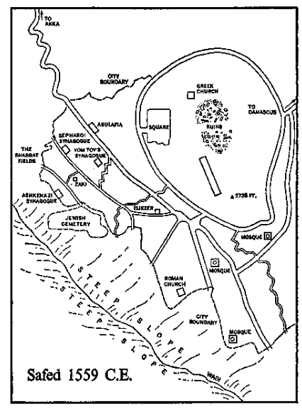

Golden Menorah
Menorah made of gold in accordance with instructions laid down by God in Exodus 25: 31–40. Cast by Moorish workmen in Avaro, Spain, about 1240 C.E., during the period when Judaism was still permitted in that kingdom. Deposited at Makor June 21, 1559, after sunset.
It was an age of expansion. Constantinople, under Ottoman rule since 1453, was offering Europe such riches drawn from India and China as to make the dreams of Marco Polo seem unimaginative. Columbus had presented the world with a new hemisphere to balance the old, and daring Portuguese navigators were proving that cargo ships could reach the wealth of Asia by doubling the tip of Africa. Spain was amazing Europe with the wealth of Aztec and Inca, and all the world’s horizons were being expanded so that the center of power was no longer the Mediterranean; for on the Atlantic hitherto unimportant nations suddenly found themselves possessed of empires so enormous as to be indescribable. Even a trivial kingdom like England, beset on three borders by hostile Scots, Welsh and Irish, could visualize acquiring territory a thousand times larger than itself, while the Dutch were about to prove that they could establish commercial stations wherever their daring captains located safe anchorage and fresh water.
It was an age of intellectual discovery. From the cellars of forgotten monasteries, from the long-unused libraries of princes, and most often from Arabic scholars who had preserved the wisdom of the west, the books of Aristotle and Thales, of Plato and Euclid were rescued from the past to astonish men and enlarge their concepts. Dante and Boccaccio reminded a forgetful world of Virgil and Ovid, while the glories of Sophocles and Seneca awakened new appreciations of the drama. And not only was the intelligence of the past being discovered; each ship returning from Java or Peru brought with it, packed among the spice and silver, fresh discoveries of the mind, and thus the way was prepared for that succession of world-changers who followed Gutenberg, Copernicus and Galileo.
It was an age of religious explosion. For centuries Christian Europe had been united into one all-embracing Church, devout, competent and far-seeing. Recently Christians had been inspired by two victories: the expulsion of Islam from Spain and the first conversions of the Aztecs; now there was reason to hope that millions in Asia and Africa would join the Church, since missionaries of great dedication were on their way to these areas. For a brief moment it was logical to believe that the known world might soon unite under the leadership of Rome. And then Martin Luther strode with rude and giant steps across the boundaries of Europe, awakening men like Calvin and Knox who would destroy old associations and establish new.
It was an age of political invention. City states gave way to national units and barons surrendered to kings who found their support in the new middle class. Secular governments displaced religious as leaders began to study Machiavelli instead of Thomas Aquinas. The barbarians from the north were finally brought under control and Europe, having expelled the Muslim Arabs from Spain, now girded to fight back the Muslim Turks as they threatened the approaches to Vienna.
It was an age of growing freedom. Men who rebelled against the confinement of Europe were now free to try America and Asia. Any who had chafed under papal rule were welcome to adopt Lutheranism, and peasants who had silently borne the tyranny of landlords were now free to attempt a revolt. Law courts were strengthened and in the realm of writing and art men could break away from medieval restriction to follow Petrarch or Michelangelo. Each year brought new horizons, for this was the age of freedom.
But not for Jews. In 1492, after more than seven hundred years of faithful service to Spain, the Jews were expelled from that state. They fled to Portugal, where they were scourged, forcibly baptized and later exiled. In Italy and Germany they were forced into inhuman quarters where they wore inhuman costumes. At almost rhythmic intervals they were charged with murdering Gentile children for blood to be used at Passover. They were accused of poisoning wells, of spreading cholera, of knowing how to infect rats with the plague to decimate Christian communities; and they were particularly accused of posing as Catholics, accepting the holy wafer of communion and hiding it slyly under their tongues until they could produce it for blasphemous black masses. In an age of growing freedom they were constantly restricted as to where they could move, what they could wear and especially what occupations they could engage in.
In this golden age of discovery the Jews discovered only the rope and the fagot. Each time a Jew was accused of having murdered a Christian child—and never once was the charge substantiated—some Jewish community would be wiped out in one ghastly slaughter. Each time a crime occurred near a Jewish quarter, that district would be stormed by indignant Christians and its inhabitants burned alive. And throughout the Christian world, come Holy Week, the friars would preach such sermons against the Jews that the enraged churchgoers would storm from their cathedrals to kill and maim any Jews they met, thus hoping to honor Him who had been crucified on Good Friday and risen in resurrection on Easter.
Why did not the Christians, since they held supreme power, simply annihilate the Jews once and for all? They were restrained because Christian theologians had deduced from passages in the New Testament the ambivalent theory that Jesus Christ would not return to earth bringing with Him the heavenly kingdom until all Jews were converted to Christianity, but at the same time 144,000 unconverted Jews were needed to be on hand to recognize Him and bear witness to His arrival. On this ambivalent theory two courses of action had been built: Jews must be converted; and those necessary few who refused must be kept in such obvious misery that all who looked could see what happened to people who denied Jesus Christ. So the Jewish districts multiplied, the harsh laws increased, and each year the Jews suffered unbelievable repressions, It was as if the Church kept them alive to remember the coming of the Messiah, the way a man keeps an aching tooth in his head to remind him of mortality.
In only two ways did Jews share in the expanding spirit of the age: they were still encouraged to serve as moneylenders, which enabled them to keep alive; and in 1520 in Venice a printer struck off a complete printed copy of the Talmud. So bitter had been the Christian hatred of this Jewish masterwork, so often had it been burned by the authorities in Italy, Spain, France and Germany, that when it was finally put into type only one manuscript copy was known to exist. It was by a miracle that this summary of Jewish knowledge was saved… and the Venetian printer who thus rescued the law of Judaism was a Christian.
But in those dark days, when the Jews of Europe sighed at the stake and smothered in their districts without any moral protest from the Christian world, one gleam of hope began to shine from a most unlikely quarter: the inconspicuous hillside town of Safed in Galilee. 1
Rabbi Zaki the Shoemaker was a fat Jew, and this was his undoing.
In the Italian seaport of Podi, where he had taken residence after his marriage in 1521, the coming of spring brought moments of anguish to Jewish men who were overweight, because starting in March they could feel the eyes of their Christian neighbors probing their rolls of fat and calculating whether Zaki was fatter than Jacopo or Jacopo slightly fatter than Salman; and each man and his family began to worry. Nevertheless, the calculations continued, and as the twenty-first of March approached, the apprehension of the fat Jews became very real indeed, and each family asked in secret, “Will our father be chosen this year?”
Rachel, Rabbi Zaki’s wife, really had no cause for uncertainty, because Zaki was so gross that he was automatically selected, year after year. It was only a question of which five additional Jews would be chosen as his teammates, so that Rachel, freed from the calculations that tormented the other wives, could spend her whole energy castigating her unfortunate husband.
“Why are you so fat?” she plagued him throughout the year. “Moses isn’t fat. Is Meir fat like you?” She had lived with Rabbi Zaki for twenty years and had come, not without cause, to the conclusion that he was a poor specimen of manhood. He did not provide well for his family. He never charged enough for his shoemaking, allowing clever Italians to outwit him. And it was obvious now that he was not going to become a famous rabbi leading his congregation to fame. He was merely a fat man who most of the year seemed pathetic, and in March positively degraded.
The Jews of Podi were a close community, for during the expulsion of 1492 they had fled in a body from Spain to Portugal and then—after the shocking mass baptism ordered by the Portuguese government—from Lisbon to Italy. In the strictest sense Rabbi Zaki, his sharp-tongued wife, Rachel, and all the Jews of Podi were Christians, for they had been forcibly baptized—some bleeding from the mouth, some screaming—in Portugal; but a series of considerate Popes had decreed that the Christian Church could not accept the fruits of such baptism and that the Jews of Podi were therefore free to revert to their original religion, which was after all an offshoot of the Holy Bible. The generous Duke of Podi had welcomed them as industrious merchants who brought much income to his territories and had even encouraged them to have their own synagogue, so that gradually the persecution of Spain and Portugal was forgotten in the kindlier atmosphere of Italy.
One of the leading merchants of Podi was Avramo the redhead, Rabbi Zaki’s father-in-law, and as the Jews of the port looked at their pathetic little rabbi they often wondered how he had been able to catch the merchant’s daughter. Rachel had hoped for a better marriage than hers had turned out to be, for, as she frequently reminded both her father and her husband, “I knew even before we were married that Zaki would amount to nothing.” But her father had argued, “I think Zaki will become a fine rabbi, and you should be honored that he takes you as his wife.”
But Rachel was not honored. As a child in Portugal she had known Zaki as the fat one whom the others teased, and as an adolescent girl she had watched him grow even fatter, so that none of her friends looked on him with longing. Left alone, he had read Talmud and apprenticed himself to an Italian shoemaker, who had warned his parents, “You’re wasting your money. Zaki has such fat fingers he’ll not be able to hold the nails.” Still the amiable fellow had managed somehow to become both a rabbi and a shoemaker.
The Jews of Podi were never able to understand why a man like Avramo had agreed to give his daughter to such a clod, and when in later years Rachel herself raised the question, he explained, “When I looked at Zaki’s fat face and rolling eyes I knew that he was a good man, and good men make good husbands.”
The wedding had gone forward, and Rachel found herself tied to a man of no distinction who each March brought upon himself and his family an almost unbearable disgrace. “Why do you eat so much?” she screamed at him with increasing desperation as the years passed. “Does Meir eat like a pig, day after day? Tell me that.”
Zaki could only reply, “God must have wanted me to be fat.” He was an amiable hulk, a man who loved his shrewish wife, adored his three daughters and found joy in eating with his family and fulfillment in serving as a rabbi. Since he was a short man, enormously round, none need envy him and all could find amusement in him. What they saw was a kind of gelatinous good will, an oleaginous buffoon of the spirit. He did not consciously make himself ridiculous, but since he knew that he was so, he did not fight against his nature.
“God wanted someone He could laugh with in the afternoon,” he told his wife one day.
“He got someone the whole town laughs at each spring,” she stormed.
“I didn’t make myself fat,” he said weakly.
“You did, too!” she cried. “For years you’ve been eating like a pig.”
“Rachel,” he pleaded. “Not that word.”
“I withdraw the pig,” she snapped.
“But you are fat,” his unlovely daughter Sarah complained.
“I am the rabbi,” he said quietly. “Even if I were as thin as Meir, the Christians would still choose me.”
The idea—a new one that Rabbi Zaki had developed subconsciously at that moment—hit his wife with some force and she stopped feeling sorry for herself. She looked at her grotesque husband and for a fleeting second half understood the point he was making, but even as he spoke he had fish sauce on his jowls and his logic was destroyed.
“Go ahead!” she lamented. “Eat and grow fat and make us ashamed of you.” The girls wept.
In humiliation Zaki listened to the grieving, then said, “They will choose me again, and again you will stand in the sun and watch me, and there is no escape. But they choose me because I am the rabbi, and I think it is better that I am fat and that they laugh at me because of my fatness and not because I am the rabbi. Would you have it otherwise?”
Of course they chose him. For several hundred years the dukes of Podi had provided sport for the community by assembling, at the spring equinox, a carnival of mountebanks, jugglers, fools and dancers. There was gaiety for one day, even if it fell in the midst of Lent, and in recent years the climax was reached by the race between the fat Jews and their next-street neighbors, the town prostitutes. For this race, which had grown famous in eastern Italy, the six fattest Jewish men were chosen, stripped down to a pair of thin underpants and driven barefoot to the starting line, where they took their places among the frowzy, boisterous whores.
The excitement of the race, which drew thousands of people from towns as far distant as Ancona, arose not only from the joy of seeing the fat Jews puffing nearly naked through the streets while the populace threw things at them—not hurtful things like rocks, for that was forbidden, but harmless items such as eggs and chicken feathers smeared with honey—but also from the fact that the little pants which the fat Jews had to wear were so constructed that along the route there was always a chance for the Christian women to get a fleeting glance at what the mysterious rite of circumcision did to a man.
To the Jews, nakedness in any form was humiliation, but to run in the Podi pants, with the penis popping in and out, was abhorrent. Not only Rachel, but the other wives as well, and Jewish men who did not run, wept for Israel.
In 1541 the twenty-first of March was a hot, bright day, and during the morning hours the mountebanks and jugglers did good business. Members of the ducal family moved austerely through the crowd, nodding somberly as townspeople assured them, “This year it’s to be a fine race.” In the mid-afternoon there were games of football and the offering of free drinks, ending with a horse race through the streets and across the public square. It was a day of relaxed festivity, much relished in the midst of Lent.
But it was the late-afternoon spectacle that the people wanted, and toward five o’clock the town constable aroused cheers by bringing from the jail six notorious prostitutes, assuring them that any who finished within the first three places would have the remainder of their jail sentences remitted. “But to win,” he warned them with broad winks, “you must pull and trip the fat Jews or they will finish ahead of you.” The six bawds said they understood.
The crowd cheered the girls and began betting on them, but everyone waited for the real contestants; and at five, when the first sunset of spring began to throw gold on the cross of the cathedral, the duke ordered a bugler to sound the trumpet. Now the crowd roared and formed a path which led to a roped-off section of the piazza. A hush fell over the rabble as the Duke of Podi signaled to the cathedral, out of which issued a stunning procession of clergy dressed in the vestments of the Christian Church. Impressive both in detail and mass the body of clerics moved in regal fashion across the piazza, taking its position beside the improvised ducal throne. Again the trumpeter blew, and again the crowd cheered, for from a narrow lane leading to the Jewish quarter came a motley crowd led by six men in long brown robes, each marked by a bright yellow star.
In the lead was Rabbi Zaki, ridiculously fat, a man not over five feet three inches tall and weighing at least two hundred and twenty pounds. His bare feet padded across the stones and his dunce’s cap, tall and red, bobbed in the late sunlight. The mere sight of him caused the mob to shout with joy. Behind the racers, each sick with apprehension, even though the brown cloaks still covered them, came the entire population of the ghetto, for each Jew unless he were near death and excused by a Dominican friar was required to witness the humiliation of his people.
The contestants were led to where the six prostitutes waited, and one of the girls elicited shrieks of approval when she pulled Rabbi Zaki’s robe apart, peeked at his trousers and screamed, “I saw it.” She made an indecent gesture to the crowd. Rachel and her three daughters, who had been herded into the front ranks of the Jewry, kept their eyes on the ground, but a barefooted friar in charge of the Jews shouted that they must look up. The girls did so in time to see their ridiculous father stripped of his robe, so that he stood almost naked in the fading sunlight while the crowd shrieked with delight.
The duke himself addressed the contestants: “This is to be a fair race, three times around the piazza, down the Corso and back to the cathedral. Any girl who finishes in the first three will have her sentence excused.” At this the crowd cheered. “But if any Jew finishes in the first three he is granted privileges for one year. Race well. Ignore the crowd. And I shall wait for you at the finish.” He bowed handsomely to the racers, signaled the trumpeter and retired.
At a sign from the Dominican, prostitutes and Jews started running, and a gasp of joy rose from the crowd when one of the fat Jews fell right at the start. “Clumsy! Idiot!” they screamed, pelting him with vegetables. He stumbled to his feet and tried to overtake the others. With outrageous irrelevancy Rachel thought: Thank God it wasn’t Zaki.
Three times around the piazza the racers went, with prostitutes screaming and the six fat Jews silent. The audience, having cheered the start, was quiet now, waiting for something memorable, the Christian women watching dry-lipped as the inadequate pants flapped open and shut. Then it happened. Rabbi Zaki was in second place when one of the whores leaped forward, clutched at his pants and pulled them down about his knees. His fat legs, completely incapable of stopping, tangled themselves in the cloth and he went tumbling across the stones, skinning his knees and exposing his nakedness.
“Whoever that girl is,” the duke cried, “set her free, whether she wins or not.” The crowd, staring minutely at every motion of the fat rabbi in recovering his pants, cheered and whistled. Zaki, hurt and far behind the others, tried to withdraw, but the Dominican poked him and informed him that he, like all the others, must finish the course.
Down the Corso, Zaki went, then back toward the cathedral; but as the runners re-entered the square the same girl pulled down the pants of another of the Jews, and the race ended in an obscene scramble, with firecrackers exploding, music playing and the crowd screaming its approval. Minutes after the others had finished Rabbi Zaki waddled up to the cathedral door.
Along with the five other racers he was handed his brown robe and red dunce’s cap. Dressed thus, he was shepherded into the cathedral, where the Jews of the community were assembled on wooden benches set off from the rest of the church by rope, and while the citizens of the town and many from outlying villages—for their small locales provided no such spectacles—crammed in to stare at the Jews and surround them with hostility, the prelates of the Church assembled and took their places on a wooden platform. The duke and his escorts went to other specially erected seats and all listened as a haggard friar began a conciliatory sermon intended to show the Jews the glories of a gentle and forgiving Christianity.
“You swine, you pigs, you filth of the gutters,” he shouted at them, “you abominations, you unspeakable dogs of the outhouse, why do you persist in your contumacy? With your hooked noses you smell out the filth of the world and are content to lie in darkness and wallow in your own defecation. Your women are all whores. Your men are circumcised criminals. Your daughters are the bawds of the nation. You are the Anti-Christ and your sons shall perish in eternal hellfire. Why are you so obdurate?” For twenty minutes the friar, whose job it was to convert the Jews to a higher form of religion, hurled at them thunderbolts of scorn and poured over them the vials of his abuse. No crime was too contemptible for them to have committed, no malpractice too abominable for them to wallow in. It was a sermon that was being preached throughout the Christian world in those years and it was based upon a perverse logic, for with each fresh insult the Jews, roped together in their special area, knew that what the fiery man said was preposterous, and they concluded that if his Church were as ignorant of Judaism as he was, there was truly no sense in listening to its plea for conversion. If the Jews of Europe had had even the slightest inclination toward apostasy, their obligatory attendance at the yearly conversion sermon would have hardened their hearts against it.
Now the friar came to the second part of his plea: “You argue in the filth of your despair that God is one, whereas we know that He is three. How can you be so blind? So stupid? So contumacious? Why do you persist in holding to your Old Book when we have proved that it is faulty? Why do you refuse to accept the glorious New Book, which clearly contains the truth? God is three and all the world proclaims this fact. Can you not see that your Old Book was given you only temporarily so that the way might be prepared for the true words of the New? Why do you cling to your error? Why?”
And every Jew sitting by sufferance in the cathedral that day knew that he persisted in his error, his oftentimes fatal error, because he had been taught from the days of Abraham and Moses and Elijah that God is one, indivisible, alone and unknowable.
From the pulpit the friar now launched into the final portion of his sermon, using at last the soft voice of reason: “Come, Jews, who were once Christians, come back to the true Church while there remains a chance. Forswear your error. Surrender your blindness. Come back with singing hearts to that seamless robe where you will find peace and gentleness and love.” He paused. From inside the roped-off section faces of stone stared back. The friar, seeing the obdurate Jews and sensing their unwillingness even to listen, decided to remind them of the special condition in which they lived. “You are not ordinary Jews, men and women of Podi,” he began quietly, “you are people upon whom the baptism of Christ once rested. You are people who have gone astray, and unless you return quickly to the fold events of a terrible nature are bound to overtake you.” His voice rose to a dreadful, premonitory wail: “For if you do not return to the Church you will be dragged into the cellars to taste the rope, the fagot and the choking water. Your bodies will be broken and your hearts torn with anguish. The peace that I offer you this day will no longer be available, and you will march across the piazza not in the spirit of friendly sport as you did this day, but bearing a fiery brand which will be used to light the fires which will consume you. Fiends, idiots, sons of hell —repent now. Join the true Church now. Abjure the blasphemies of Moses and the old ways. Now, now!” He ended in a paroxysm of religious fervor, and Rabbi Zaki, who knew something of these matters, was terrified.
That night, after Rachel had belabored him again for being so fat and for having allowed the whore to tear down his pants in the race, Zaki started to speak seriously of his fear, but at this point his daughters took up the complaint and insisted that by next spring he lose his weight and not humiliate them. The sorely tried man was tempted to bang the table and cry, “We are not talking about humiliation! We are talking about our lives.” Instead, he waited for his womenfolk to complete their condemnation, which he knew they had a right to deliver—for they were wounded in spirit—and when they were done he said quietly, “The friar meant what he said. We shall be allowed a few more years. Then the burnings will begin.”
“Zaki!” his wife snapped. “Are you an idiot?”
“I am saying what I know to be true. We must leave Italy this week.”
“What do you mean, burning?” his wife heckled. “Because you are so fat that you fell down? Because the friar made his usual ugly speech? You grow suddenly afraid?”
“I am desperately afraid,” Zaki acknowledged. “That angry man meant what he said.”
“Where would we go?” Rachel demanded. “Tell me, where?”
Zaki lowered his voice, looked about the room and said, “Salonica. There is a letter from a German Jew who fled to Salonica, and he says that the Grand Turk …”
“To Salonica!” his wife repeated. She began laughing hysterically and pointing at her daughters. “Do you think I want them to marry Turks?”
Zaki waited for his wife’s contempt to die down, then said quietly, “Rachel, we are in trouble. I think we should sail for Salonica immediately.”
This was too much for Rachel. She rose from her chair, stormed about her husband’s mean shop and cried, “Has not the Pope himself assured us that we can live peaceably in Italy for as long as we wish? Are you a coward that you doubt his promise?”
“This Pope promised. The next Pope can revoke,” Zaki argued carefully.
“But he gave the promise because he knew that we were baptized forcibly. We were never true Christians, and like the good man he is he has allowed us to be Jews again. I do not wish to go to Salonica. I refuse.”
“Rachel,” the fat rabbi pleaded, “you asked me if I was a coward? Yes, I am. I listened to that man today and he was on fire. He sounded like the priests of Spain and Portugal. He will not rest until Jews like you and me are burned. Rachel, listen!”
But Rachel would not listen, and she refused to permit her daughters to listen, either. Tormented by that day’s confusions the rabbi’s family went to bed, but he did not, and in the morning, after prayers, he went to the ducal palace, where he waited for five hours until the duke allowed him to enter. “I want permission to take a boat to Salonica,” Zaki said.
“What!” the duke exploded. “You want to leave?”
“Yes,” Zaki replied.
“But why?”
“I am afraid.”
“Of what? Zaki,” the duke laughed thinly, “you mustn’t worry about the fun yesterday. We meant no harm. As for the girl who tore down your pants, the jailer put her up to it. Women are curious about these things, you know.” He chuckled at the harmless teasing. “Zaki, we meant no offense. There’s nothing for you to be afraid of.”
“But I am afraid.”
“All right! Next year you won’t have to race.”
“It’s the sermon I’m afraid of.”
“That?” the duke laughed. “We have to do that. Once a year. Pay no attention to him. I rule this city.”
“Excellency, the friar meant what he said.”
“That fool? That clerk? He can do nothing, believe me.”
“Excellency, I am terribly afraid. Let me take my family to the Grand Turk.”
“No, by God! Not to that infidel.”
“Please. Evil days are coming here, of that I am sure.”
The duke found this statement offensive, for Pope Clement himself had promised that Jews baptized under force would be forever under the protection of the papacy and were free to practice their religion as they wished. It was expected that future Popes would repeat this promise. Therefore, when Rabbi Zaki expressed his wish to leave Italy, heading for the realms of the Turk, his plea could be considered only as an insult to the Church. “You cannot go,” the duke said, and the interview was ended.
At home the women deduced where the rabbi had been and they chided him for his faint-heartedness. Other Jews were summoned to ridicule him, and all pointed out that whereas the fears he expressed might have been logical in Spain or Portugal, where there was an Inquisition determined to uncover Jews masquerading as Christians, there was no logical ground for fear in Podi. “This is Italy!” they pointed out, taking refuge in the constant rationalization of the Jew: “It won’t happen here. The people are too civilized.”
Rabbi Zaki for once in his life could not be swayed by either his friends or his family. He had a clear vision of what must inevitably happen in Italy, either with the arrival of a new Pope or with a change in the prosperity of the peninsula. “I am afraid,” he repeated stubbornly. “I saw the faces of the people yesterday. There was hatred in the cathedral.”
“He’s been making the same speech every year,” a cautious merchant repeated. “We’d feel the way you do, Rabbi, if we’d raced half-naked with the women laughing at us.”
“But you didn’t have to race, did you?” Rachel stormed. “Because you’re not fat like a pig.”
Zaki was stunned that his wife should have used this word again and in front of his congregation. With a pleading voice he whispered, “That is not a word to use against a rabbi.”
“But you do eat like a pig!” she cried, and he looked at the floor. It was a mark of the little rabbi that even in his humiliation he never once thought of leaving Podi without his nagging wife, even though he could easily have done so; two men from the city had fled to Amsterdam without their families, but he could not understand their behavior. He knew there was going to be terror in Italy and he could not abandon his stubborn wife and his unlovely daughters to face it, obstinate though they were.
“I am taking my family to Salonica,” he said quietly, “and if you men are wise, you’ll do the same.”
His wife was so irritated that she refused to discuss the matter, and the meeting broke up with a sense of frustration and fear. But in the morning Rabbi Zaki was back arguing with the duke, and after apologizing for any possible insult to the Duke, to the Pope or to the Church he again asked permission to emigrate.
“Give me one reason,” thundered the duke.
Zaki, during the night, had pondered half a dozen good reasons, but on the spur of the moment dismissed them all and said, “Because I have three daughters, Excellency, and like a good father I wish to marry them to Jewish men, whom I can find in Salonica.”
The duke considered this unexpected reasoning and began to laugh. “You have to find three husbands, Zaki?”
The rabbi said “Yes,” and sensing that he had enlisted the interest of the duke, added, “It’s not easy, Excellency. To find one good husband these days is not easy.”
“And you think that in Salonica…”
“Yes.”
The duke called in his younger brother, for whom he had obtained the appointment as Archbishop of Podi, and when that amiable prelate heard of Rabbi Zaki’s request to leave the city he did his best to quieten the Jew’s fears. “The duke commands here,” the archbishop reasoned, “and you should know that he will tolerate no act against his Jews.”
“I need you for my commerce,” the duke said.
“But I heard the friar say we were to be burned,” Zaki said. “I believe him.”
“That one?” the archbishop asked, laughing like a man recalling a pleasant day in the field. “You certainly know that my brother and I found his silly sermon as repugnant as you did, Zaki. Consider it only as a part of the Easter celebration and pay no more attention.”
“I cannot put it out of my mind. I am afraid.”
The tall archbishop summoned Zaki to the window and pointed toward the center of the piazza, where from a granite plinth rose a statue of the Duke of Podi astride a white stallion. The sculptor had caught the condottiere, sword in hand, at the moment of his conquest of Podi, and his manly bearing lent dignity and courage to the city he ruled. “Do you suppose a warrior like the duke would ever permit a preaching friar or even a Pope to determine his behavior?” The churchman laughed at the absurdity, but when Zaki repeated that he wanted to go, the archbishop shrugged his shoulders. “In Podi we hold no man against his will,” he said compassionately. “But regulations covering departures are administered by the friars,” and he sent for the very man who had preached the Lenten sermon.
The Dominican bowed to the duke, acknowledged the archbishop and looked with disgust at the Jew who defiled the ducal rooms. “He should not be allowed to leave,” the friar warned. “He was baptized a Christian and it’s abhorrent that he should join the Turk.”
“He’s determined,” the archbishop said, whereupon the Dominican asked for pen and paper and began listing the restrictions under which Zaki might depart: “He may take with him no papers proving that Christians owe him debts. Nor any books written or printed, no money minted in this state, no lists of names which might help the Turk, nor any instruments for the Christian sacraments. And at the pier, in view of all, he must kneel and kiss the New Testament, acknowledging its divine inspiration.”
When the terms of departure were agreed upon, the Duke of Podi signed the paper and in later years this fact would be remembered against him. The archbishop signed, too, and this was also recorded. Finally the Dominican thrust the document at the Jew, warning him, “If one item is transgressed, you may not depart.”
But Zaki had his permission, and in a kind of mysterious terror he fled the room where he had always been treated so justly by the duke and his brother, for he sensed the deepening of a tragedy whose outlines he only vaguely understood; but as he crossed the piazza on his way to talk with a ship captain about passage, he stopped at the marble statue of the condottiere and muttered a prayer, “May God, Who allowed you to conquer this city, allow you to keep it.”
Then, as he neared home, he began to sweat, for although he had convinced the duke, the archbishop, the friar and the ship captain, he still had to convince his wife, and this would prove most difficult of all. But on one point he felt not the slightest uncertainty: even though he knew that tragedy was about to engulf Podi, if his wife and daughters refused to flee with him he would have to remain with them. “Rachel is sometimes a trial,” he muttered to himself, “but no man can desert his wife. Besides, she’s given me three lovely daughters.” For her sake he prayed that he could persuade her to leave the city.
When he reached his shoemaker’s shop he tried to put on a look of firmness and he must have succeeded, for Rachel saw that a decision of moment was about to be announced.
“I’ve been to the duke’s,” he began.
“Yes?”
“And he has agreed to let us go.”
“Where?”
“I’ve also been to see the captain and he has agreed …”
“Where?”
“There’s no turning back, Rachel,” the fat rabbi pleaded. “Evil days are ahead in this city…”
“Where?” she screamed. “Salonica?”
“Yes,” he said bravely, raising his arms to fend off the attack that must take place.
To his surprise Rachel sat down. She breathed heavily, made no other sound and hid her face in her hands. After a while she gave a low sob and summoned her daughters from the other room. “We’re going to Salonica,” she announced softly, like the whisper of a volcano afraid to explode. The oldest girl, Sarah, gasped and her mother leaped from the chair. “Yes!” she shouted. “Your father’s taking us to Salonica!” The youngest child began to cry and Rachel slapped her. “We’re going to Salonica,” she shouted in a hysterical giggle. “You’re all going to marry Turks.” She collapsed in the chair; even the older girls began crying, whereupon she stormed about the room, shouting, “We’re going to Salonica, oh, my God!” Then she slapped each of the girls harshly and announced calmly, “We shall do as your father says. No one in this room will ever again argue about his decision.”
She kept her word. With demonic frenzy she applied herself to packing the family goods, but as she tied each parcel the Dominican friar would come to inspect it, reminding her that many of the things she wanted to take belonged, by agreement, to the Church. Once Zaki was afraid that Rachel would fly at the Dominican, but she patiently surrendered even the toys of her children. When the friar had completed his third scrutiny Rachel declared war, muttering, “Very well.” Digging up a secret hoard of forbidden gold pieces she sewed them adroitly into unlikely places, so that when the rabbi’s family was given its final searching she succeeded in smuggling so many coins that she could support the family for some years in its flight.
The Jews of Podi came to the pier to bid their frightened rabbi farewell, and to him they seemed like a necklace of beautiful pearls strung along the dock, causing tears to well up in his eyes as he listened to their farewells; fortunately he could not hear their whispers: “Look at our crazy rabbi. Lost his head because a whore pulled down his pants.” And then, like the shadow of death crossing the waves, a darkness came over Zaki’s vision and he saw his beloved congregation as it was to be. There stood fat Jacopo, who had been in the race, and he would be burned alive in 1556. Beside him stood thin Meir, a cherished friend who would be burned alive in 1555. There were the sisters Ruth and Zipporah; the elder would be burned alive in 1555, but the younger would die in prison almost torn apart by torture. There was also the gentle Josiah, who would die at the stake in 1556, but because he was dim-witted he would escape death by flame, because at the end he would say uncomprehendingly, “Of course I accept conversion,” and the executioner would mercifully strangle him before the fires began.
The cloud passed, and the doomed Jews stepped aside as the smiling Duke of Podi came onto the dock, crying, “Good-bye, Zaki. No one in Podi had bitterness against you. You’re being very stupid.” And one day this generous-hearted man would be humbled and hounded from his dominion because of the assistance he would give his Jews in their time of trial.
It would not be proper to claim that on this day in 1541 Zaki foresaw these precise events in the darkened faces of his friends, but he knew with a certainty that similar things were bound to happen. To no one could he confide, not even to his bewildered, faithful wife, the reasons for his insight: “If men repeat often enough their hatreds the evil comes to pass.” He looked at his dear friends, his lovely companions doomed in their goodness, and he wept.
His wife, ashamed of his latest display of cowardice, refused to weep. But as the ship started to move she cried hysterically, “We are going to Salonica.” During the first days of the tedious voyage she and her daughters kept to themselves, but when Muslim pirates threatened the ship she began to wail, “Is this what you are taking us to Salonica for?” And she made so much commotion that the captain bellowed “Rabbi, shut that woman up or I’ll let the pirates catch us.” Zaki went to his wife and pleaded, “Rachel, if we have escaped Italy, God will not abandon us to slavery now.” His wife looked at him with blank amazement and forgot the pirates: her husband was still talking gibberish, and she was so appalled to have married such a fool that she kept her mouth shut.
The pirates were outdistanced, but the ship was forced to land in northern Africa, where shoemakers were not needed and hwre Rachel and the girls had to work. And after many years they came to Safed. 2
On a cold, wintry morning in 1540 the citizens of Avaro in central Spain found on their doorsteps a printed broadsheet commaning them to report to the Holy Inquisition anyone who had publicly accepted baptism as a Christian and had then secretly continued to practise as a Jew. To aid informers in spying out this crime, a series of ingenious tests was provided:
Put before your neighbor morsels of food such as pork, rabbit and congers eels, and if he refuse to eat, he is a Jew.
Watch with great care everything your neighbor does on Friday. Does he put on fresh linen? Does he light candles at least an hour before honest men do? Does his wife cean the house that day? If you catch him doing these things, you have a Jew.
Go to your roof on Friday two hours before sundown and watch all the chimneys of the city. Any that stops smoking suddenly as the sun sets betrays a Jew. Run and catch his name.
When you visit your neighbor‘s home spy out to see if he washes his hands more than most. When his wife kneads bread does she throw a small bit into the fire? If you detect any of these matters, report your neighbor at once, for he is a Jew.
In church does your neighbor, while professing to be a true man, rock his head back and forth and bend occasionally at the waist? Does he recite the psalms like an honest man, then refuse at the end to repeat the Gloria Patri?
Does he attend with special reverence whenever testimony from the Old Testament is mentioned? Does his tongue seem to gag in his mouth when he is called upon to recite the phrase. „Father, Son, and Holy Ghost“? If he does any of these things, you have caught a Jew.
At Holy Communion watch your neighbor with redoubled vigilance. Does he swallow the wafer with fortright honesty like a true Christian, or does he try to hide it in his mouth for deliverance later to Satan? Or does he linger with it on his lips, then swallow it swiftly when he catches you looking at him? If he does either of these tricks, remember his name.
Be vigilant ever. If you are present whenyour nieghbor dies, see if at his last breath he turns his face to the wall. When a son is born to your neighbor see if his wife delay for forty days before returning to normal life. Watch if the new child is called secretly by a name from the Old Testament. Try diligently to see if his son is circumcised. And inspect all that your neighbor does, because you may succeed in routing out a Jew, and if you triumph over this devil, great grace is yours.
A few days later the distinguished advisor to King Charles of Austria and Spain, Counselor Diego Ximeno, whose ancestors had for eleven hundred years lived in Spain as Jews, and for the last century as converts to Christianity, happened to choke as he was eating a piece of pork. Inadvertently he allowed the pork to fall to the floor, where, seeing it ruined, he absent-mindedly ground it into the dust with his heel. A jealous neighbor detected him doing these things and next day satisfied himself beyond question that Diego Ximeno was a secret Jew because he spotted the robust, handsome counselor washing his hands three times in the course of one day, whereas a believing man would not have done so.
Accordingly, this trusted friend went quietly to the office of the Inquisition and reported: “I have strong reason to suspect that Diego Ximeno is a Jew.” The Dominican in charge of recording accusations raised his eyebrows, for although in recent years some rather prominent citizens of Avaro had been caught in the nets of the Inquisition, no one of Diego Ximeno’s importance had yet been apprehended, and to catch a man of his dignity would bring the local office into national prominence. Senior officials of the Inquisition were therefore summoned and the informant was questioned avidly. “For some time,” he told them, “I have suspected Diego of being a secret Jew, but not until the paper arrived telling me what specifically to look for did I know how to trap him.”
The committee itself had a much longer list of ways to catch a Jew than the one which it had sponsored in print, and one by one these questions were put to the excited witness and he was led to review his years of friendship with the counselor, until all reached the conclusion that Diego Ximeno at one time or other had been guilty of almost every act that betrayed a secret Jew. It was safe for the informer to make his nebulous accusations, for under the codex of inquisitorial procedure he would never face the man he was condemning, nor would Ximeno ever be told who had informed against him or what had been the charge. At the end of several hours the priests conducting the interrogation thanked the neighbor, and when he was gone, concluded, “At last we have caught a truly great one. Honor is ours.”
That afternoon uniformed guards of the Inquisition marched to Ximeno’s office and without advising him of any particulars arrested him and hauled him away to a cramped, dirty subterranean cell, where he was kept in absolute silence for four months. The inquisitors knew that they must prepare their case against such a man with care, for even though he had had Jewish ancestors a hundred years ago he also had great influence with the court, and his arrest had already caused many horsemen to ride between Avaro and Vienna. Finally the Inquisition was ready to interrogate the prisoner, which it did with secrecy and solemnity, but since Ximeno was not told what the specific charges against him were, he confessed to nothing. On the second day no progress was made, nor on the third, so on the fourth the court convinced itself that in Diego Ximeno they had a secret Jew who was going to prove exceedingly difficult.
Accordingly, he was returned to solitary confinement, where he languished for the rest of 1540 and all of 1541, during which time he was required to pay substantial sums for his keep and for the marshaling of further evidence against him. Regardless of the eventual outcome of his trial he was being financially ruined, and he knew it.
The Avaro chapter of the Inquisition could afford to move so deliberately because of the significance of the work in which it was engaged. Before it became powerful in Spain the Inquisition had been in existence as a necessary arm of the Church, for some six or seven centuries, during which it had served to protect Christianity from numerous heresies. For the first half-thousand years of its operation it had been a generally benign office, but with the ascendancy of Tomás de Torquemada as Inquisitor-General of Spain and his elevation of the Inquisition to a position independent of both Pope and emperor, the policing powers of the body had degenerated into a kind of panic and terror: in a period of seventeen years, some 120,000 of Spain’s inquisitive intellectuals were killed. And then, with Torquemada dead and the Faith apparently secure against false movements, a time was reached when the terror could be relaxed, but at this moment Martin Luther in Germany launched the most dangerous heresy of all, so that even a fool could see that the true Christian Church was imperiled by Protestantism. What was almost as disturbing, certain Christians like Erasmus of Rotterdam were writing books that cunningly mocked the Church, and as if this danger were not enough, Jewish families who had some centuries before accepted baptism into Christianity were discovered to be secretly adhering to old Judaic rites. Thus the Church was beset from without and from within, and only the Inquisition, superior even to the Pope, could hope to root out the heresies, burn the incriminating books and track down the Lutherans and the secret Jews.
The official figures for the Inquisition of Avaro illustrate the Church’s response to the peril it faced. In the two centuries before the arrival of Torquemada, Avaro beheaded only four persons, and these were grievous enemies of the Church who refused to recant gross sin. But from 1481 to 1498, under the whip of Torquemada, the Avaro judges executed eleven thousand heretics. In the quiet period that followed, the number dropped to less than twenty a year, but in 1517, with the appearance of Luther as a mortal threat and with the influx of works by Erasmus, the number of executions rose sharply.
It is significant that in this period of sixty years, from 1481 to 1541, not a single professed Jew was executed by the Avaro Inquisition. If any man, upon arrest, could say boldly, “I am a Jew and have always been known as one,” he was banished from the realm, but he was not burned. The Spanish Church had to despise him and send him on those mournful wanderings which the New Testament had predicted, but it never touched him. At the same time, however, the Avaro Inquisition had rooted out some eight thousand people whose families had once been Jews but who had converted to Christianity, accepting baptism and full membership in the Church while secretly continuing to practice Jewish rites. And of these eight thousand faithless ones more than six thousand had been burned alive. There was the girl Maria del Iglesia, whose family had been Christian for three centuries, who fell in love with the young man Raimundo Calamano and in a moment of courtship confidence confessed to him that she and her family observed Passover: he ran straight to the Inquisition, and three days before she was to marry, troops broke into the Del Iglesia home to find forty-one Jews eating matzoth, and all were burned alive. There was the renowned scholar Tomás de Salamanca, who taught the youth of Avaro, and one day his nine-year-old son burst into the street, shouting, “My father whipped me. He fasts on Yom Kippur.” So after investigations extending over a period of seven years, sixty-three close associates of Tomás had to be burned alive. What was especially frightening was the fact that among the confessed Jews were seventeen nuns who had held Jewish rituals in their convent, thirty monks, seven priests and two bishops. The Church was being dangerously corrupted from within, and only the most painstaking investigation could protect it. For that reason the case against Diego Ximeno, counselor to the king, moved slowly.
At the beginning of the third year Ximeno was again summoned before the tribunal, which now had in its possession a voluminous file of material linking him to Judaism. Informants as far away as the Italian city of Podi and the German city of Gretz had made depositions damaging to him, and the judges were completely satisfied that they had a secret Jew. Now the problem was to force him to confess and to incriminate others in Avaro who might have masked their evil practices as successfully as he had done. Over a period of four days he was interrogated in minute detail, and when he proved obdurate the tribunal had no alternative; they had to commit him to the torture.
He was dragged immediately to the subterranean vault long used for the purpose of extracting confessions, but he was not, as some might suspect, thrown into the hands of brutal men free to abuse him at will. He was delivered to a skilled and patient priest who had been conducting such interrogations for many years and who was assisted constantly by a knowing doctor who had learned from experience what torment the human body could absorb without expiring. There were few deaths from torture in the dungeon of Avaro.
On the other hand, the ordinary workmen who administered the three tortures which were allowed had become callous experts who had acquired a score of tricks guaranteed to break down the resolve of any secret Jews, so at the moment when Diego Ximeno was thrust into the dungeon these men already knew that he was someone special sent to test their skill. If they extracted a confession, they would be rewarded; if they failed, they would be rebuked. It was therefore a poignant moment when the handsome man of fifty, stalwart even after two years of imprisonment, stumbled into the torture chamber, gained his footing and stood in quiet defiance before the interrogating priest.
“Do you confess, Diego Ximeno?” the priest asked. The prisoner looked at the Dominican with contempt, whereupon the priest, who had often seen that particular look at the beginning of his interrogations, but never at the end, said to the doctor, “The prisoner refuses to speak. Is he qualified for the question?” The doctor studied Ximeno and thought: He’s arrogant and he’s in strong health. This one may take a long time.
The doctor nodded to the scribe sitting at the feet of the priest. It was this man’s job to record confessions and to confirm in writing that humanitarian safeguards were observed in the torture room. “Write down,” the priest directed, “that the prisoner was found qualified for the question.”
With this the Dominican signaled to the workmen, who with lightning force grabbed Ximeno, pinioned his arms and stripped him naked before he knew what was happening. With equal speed they lashed his hands behind his back, fastened twenty-pound weights to each ankle, and by means of a heavy rope attached to his wrists hauled him some forty feet into the air. From below, the foreman of the workmen shouted, “You’ll talk, Counselor.” They left him suspended for nearly an hour, while his arms, wrenched upward from behind, slowly pulled his shoulders from their sockets.
The ache throughout his body had become almost more than he could bear, and the Dominican, seeing his anguish and sensing that he might be ready to speak, came below him and called, “Diego Ximeno, do you now confess?”
Still uninformed as to the specific charges against him, Ximeno bore his pain in silence.
“Diego Ximeno,” the priest pleaded, “if you are in pain now, believe me it is only a beginning. Please confess or we must apply the question.” The prisoner made no response, so the priest returned to his small dais, instructing his scribe to record the fact that the prisoner had been offered mercy.
Suddenly, with terrifying shouts, the workmen dashed at the rope which suspended Ximeno and by means of prearranged holds allowed it to slip so that the prisoner dropped thirty feet, ending with a shattering halt which tore each of his major joints apart with maximum pain. His wrists, elbows and shoulders were mutilated, while the weights on his legs, magnified many times by the precipitous fall and the sudden stop, pulled apart his ankles, his knees and his hips.
Before Ximeno could identify his new pains the workmen pulled him back to the ceiling to initiate one of the worst features of the torture. At times they would shout and drop the rope. At other times they would shout and not drop it. Again, without warning, they would drop it only a few inches. At other times there would be the sickening fall almost to the floor and the hideous wrenching.
Ximeno was now beyond pain, and when the Dominican again begged him to confess the stalwart prisoner refused even to listen, so the rope was let go and he was dropped in a heap, quickly lifted onto a table and subjected to an entirely different kind of torment; for if the hanging and falling had constituted gross pain, which men like Ximeno could school themselves to resist, what was now at hand was psychological torture that few could withstand.
The table upon which he was laid had a small log across the middle, so that his back was severely strained and his stomach drawn flat in a position which of itself induced strangling. Then a funnel was placed in his mouth and his nose was closed. Huge draughts of water were poured into the funnel from an earthenware jar, and as his taut lungs gasped for air he alternately strangled, choked and gulped the water. It was an agonizing, shattering torture.
Before the second jar was poured, the priest returned and begged the prisoner to recant. “The tortures will cease,” the Dominican assured him, but apparently Ximeno was prepared to die and said nothing. The priest departed and the scrivener recorded the fact that the merciful offer had been made.
“This time you’ll speak,” the workmen promised. One leaned hard upon Ximeno’s distended stomach as it arched over the log, and the sudden movement of water throughout his internals almost killed him. Another placed in his mouth a cloth which long experience had proved to be of exactly the right mesh, and through this the water was now poured. Gulping, fighting for air, Ximeno sucked the cloth into his throat, where it embedded itself as the water trickled slowly through. It seemed that he must surely strangle, but at the end of the long agony the workmen suddenly jerked the cloth from his throat, tearing away the membranes and bringing blood.
“Now speak,” the workmen whispered, and when he refused, the bloody cloth was again inserted in his mouth. Six jugs of water, six strangling, terrifying, mortal jugs, were poured into him while strong hands pressed on his stomach, so that his lungs, his bowels and his heart seemed to explode.
He did not talk. So he was hauled at last to the final torture, where, spread in complete agony on the cold stones, his joints inflamed and his throat torn, he was given a few minutes of respite, during which he heard the priest begging him yet once more to avoid the worst agony which was now at hand. He remained silent, whereupon the soles of his feet were smeared with a mixture of pepper, oil, menthol and clove, and when the unguent was well into his pores fagots from an open fire were brought and passed back and forth across his feet, raising horrible blisters and sending throughout his body pain of an absolute magnitude. He fainted.
He awakened some time later in his cell. His mattress had been removed and he was lying naked on the stones, his heap of clothes beside him. He was unable to move either his arms or legs. His feet ached beyond human endurance, and his mouth had already become so scarred that each breath was agony. For four dreadful days he lay there hoping to die, and on the fifth, when his blisters were at their worst, his joints inflamed and his throat a mass of sores, he was dragged back to the vault, where the priest said, “Diego Ximeno, we have proof beyond question that you are a Jew. Please, for God’s mercy, confess and let us end this business.” Ximeno said nothing.
The Dominican honestly wanted to save the accused from further pain, so he pointed to the door of the torture chamber and said, “Diego, believe me, of a hundred misguided people we have to bring down here, we set at least ninety free. To resume their normal lives. To rejoin the Church as corrected Christians.” He waited but Ximeno said nothing. “It’s true, we punish them here, but when they confess they go free with nothing worse than an unhappy memory. Diego, if you tell us now the names of the other Jews, you will go free, like the ninety, with nothing worse than a few scars on your ankles. Please, please speak.” But Ximeno said nothing.
This time the workmen used different tactics. Pulling him to the ceiling they eschewed tricks and set about dropping and raising him as rapidly as possible, until it seemed that his heart must be torn out of his body. Then, after a few minutes, they lugged him like an inanimate object to the water table, pressed him down upon the log until his back nearly cracked and proceeded immediately with the cloth and six jugs of water. Later, at the fire, they went right to work and burned him so horribly that again he fainted. With disgust they dragged him, unconscious, back to his cell and heaved him through the air, smashing him against the wall.
“Let’s hope we killed him,” they muttered, for his obstinacy was a reflection upon them. They had proof that he was a secret Jew, and his refusal to confess was preposterous.
Of his tortures on the third day he remembered nothing, but they were in no way different, for the Inquisition did not permit its workmen to cut a man’s flesh, to blind him or to meddle with his private parts, and if a prisoner remained silent in the face of rope, water and fire, as Ximeno had done, it was permissible nearly to kill him with these means but it was not permissible to do more. At the end of the third incredible session the doctor stood over the inanimate hulk by the fire and said, “This one can stand no more.”
The Dominican looked at the distorted, blistered body and cried, “Why don’t they confess and save themselves this agony?”
The doctor asked, “Do you suppose this one really is a Jew, Father?”
“At first I was sure,” the Dominican replied. “But after this…” He turned away.
Toward the end of 1542, when Ximeno had been nearly three years in solitary confinement, for which his estate still had to pay rent week after week, the sad-eyed Dominican came at last to see him: “Diego, tomorrow your day of judgment is at hand. You are to be burned at the stake.”
The prisoner still made no response, and the priest begged, “Diego, please, for the mercy of God, confess, so that when you reach the stake the executioner will be permitted to strangle you before the fire begins.”
Again there was no comment, and the distraught priest cried, “Diego! Do not force us to do this horrible thing. Your soul is already in the hands of God. At least allow your body to go in peace.”
But the resolute prisoner said nothing, and the priest departed.
At four on Sunday morning two young Dominicans entered the cell bearing a sackcloth uniform into which Diego Ximeno was forced to climb. Over it the priests threw a long yellow robe on which had been painted little red devils throwing into the fires of hell heretics and secret Jews. Finally they jammed on the prisoner’s head a tall conical hat, yellow and adorned with swirling flames. “You must follow us, Counselor,” said the two young friars of Avaro, who in happier days had often sought his assistance, which he had freely granted.
At the door of the prison Ximeno was handed a lighted taper, which signified that he was to be burned, and he came at last to the barefoot procession itself: sixty-three who had confessed minor crimes against the Church, like reading Erasmus, and who would escape death to live the rest of their lives in dismal isolation—pauperized, forbidden employment, anathematized; nineteen who had confessed major crimes, like naming their sons Moses or refusing to eat congers eels, and these would be burned, but at the last moment they would be strangled so as to escape the fire; and six like Diego Ximeno, who had refused to confess either to Judaism or Lutheranism, and they would be burned alive without strangling.
It was a long procession, headed by the dignitaries of the Church; and a longer day, marked by sermons, pleas and accusations. More than forty thousand persons packed the plaza to hear the solemn proceedings, for the day had been widely advertised throughout the region and all who attended were granted special dispensation, for that day they would see where the path of heresy led.
Late in the afternoon the inquisitors came finally to the cases of those to be burned, and justification for this act was cited from the specific words of Jesus Christ Himself as reported in the holy gospel of St. John: “If a man abide not in me, he is cast forth as a branch, and is withered; and men gather them, and cast them into the fire, and they are burned.” But once the verdicts of death had been read, the Church dignitaries solemnly washed their hands of the matter and left the scene, while the prisoners wore turned over to the secular arm of the state with the plea that they be treated kindly and that no blood be spilled.
The secular arm then marched the condemned to an entirely different part of the city, where stakes had been set into the ground and fagots piled high, and as the prisoners marched, the populace screamed at them, threw things, cursed and reviled them. Those prisoners suspected of being Jews went through a particular Gehenna, for they were tormented with special taunts: they had known God and had turned their backs on Him; they had crucified Jesus; they were worse than the swine they refused to eat. And with each step that the suspected Jew took, two friars clung to him, crying, “Jew, confess that your religion is false. Confess that God is three and not one.” And to many Jews on the death march this vilification of their religion was worse than the taunts of the crowd. At the burning place the citizens watched with horrified fascination as Diego Ximeno, silent and austere, climbed unaided onto the pile, ignoring the pleas of his accompanying friars that he save himself from the final agony. Below him secretaries waited with pen and book, ready to write down whatever he might scream in his torment. This had become a matter of some importance, for there were many in the town who were beginning to believe that Ximeno was not a Jew, and such a belief might become embarrassing if it led to local sanctification. But as the flames leaped at his throat Ximeno summoned forth the same iron control that he had shown in the torture room, and he died confessing nothing, so that at the moment of his death the people who had known him well began to whisper, “He was not a Jew. He was a saint,” and the first steps of his canonization began, much to the disgust of the Inquisition, which had intended something quite different.
Of all the watchers who saw the burning of Diego Ximeno, none witnessed it with greater apprehension than Dr. Abulafia, a distinguished medical man whose Jewish ancestors had become Christians in 1391 and who, as a good Christian himself, had risen to a place of prominence in the city. He was married to a Christian lady of impeccable lineage. He ate pork, was not circumcised, nor were his sons, and he had never been suspected by anyone, not even during the worst rigors of the Inquisition, of being a Jew. Upon the distribution in 1540 of the list of signs whereby secret Jews could be trapped, some of his acquaintances had jokingly reviewed the items with him, saying, “At least nobody can accuse you of being a Jew, Abulafia,” and not even his friends had considered reporting him to the inquisitors. He was a flawless man.
With horror he had stood in the public plaza to hear the formal charges against his old patient, Diego Ximeno, and during the procession to the burning grounds he had twice stationed himself in positions where the condemned man would have to pass close to him; but Ximeno, in a kind of mortal trance, had stared straight ahead, refusing to see the doctor. When Ximeno climbed to the stake Dr. Abulafia positioned himself with the secretaries waiting to catch any words the doomed man might utter, but again nothing happened. Yet at the last moment, when Ximeno’s hair was ablaze and his skin had begun to char, he did cast one final, lingering glance at Dr. Abulafia, and their eyes met through flame.
When the fires burned down and there were left only iron chains soiled with greasy soot, Dr. Abulafia walked dumbly homeward, and it was now he who was in a trance. At home Doña Maria asked, “Why are you so pale?” and he replied, “I’ve just seen Diego burned,” and his wife replied, “He must have been guilty. These are not things for us to worry about.”
Abulafia was unable to eat supper, nor did he wish to play with his two sons. He went to his study to examine patients, but he became dizzy and thought he would faint. By exercising will power he succeeded in maintaining control, saying to himself: If I faint now it might be fatal. Who knows which of these patients was sent to spy on me this night? So he worked on.
Dr. Abulafia was a tall man with dark, sympathetic eyes. Handsome and much respected by the people of Avaro, he had a gentle manner with the sick which enabled him to earn more money than most of the doctors in town. He was a skilled surgeon, enjoying a favorable reputation in cities as far distant as Toledo, where he had once treated Emperor Charles. He sprang from a family whose contributions to Spain dated back to the year 400 C.E., and he should have felt secure this ghostly night, when the smoldering fires of the burning still hovered above the city, but he did not. The execution of Diego Ximeno haunted him, so at the earliest chance he closed his office. Avoiding his family he went to a small inner room containing no books, no papers, no pictures. The walls were white, the table and chair rudely made, and he sat staring straight ahead and thinking. He was afraid to write anything down, which he desperately wanted to do, for his wife or some spy might find his writing and give it to the Inquisition. He was afraid to mumble the words his brain formed lest someone be listening and overhear un-Spanish syllables. He was not free to recite any litany, nor to consult books, nor to read manuals, nor to do anything other than sit.
He stared at the wall for nearly an hour, trying to cleanse his mind of the terrible things it had seen that day, but flame and the penetrating eyes of Diego Ximeno haunted him; when he tried to concentrate he saw only the eyes of the counselor, but finally the dreadful visions faded and letters of the Hebrew alphabet began to form in space before the whiteness of the wall, and they began to move hither and about, forming in alternation consoling or condemning patterns. Still he stared, as the letters took meaningful patterns recalling concepts which he had suppressed for many months; then they assumed the form of symbols which evoked other meaningful concepts, and still he sat, motionless, wanting to write down the letters with pen and paper but terrified of doing so; and after a long interval of watching, the Hebrew letters turned to fire and marched purposefully across the wall, and he began to breathe in short gasps. His stomach contracted and these preliminary letters started to fade from sight until the wall was lonely and bare.
Then, from an immeasurable distance behind the wall, came four letters of extraordinary force, too powerful to be looked at directly. He dropped his eyes. The letters came through the wall and across the room right to his forehead; and now without using his eyes he could see them in all their terrible majesty, and they were broken, YH on one side and WH on the other, and try as he might he could not bring them together to form the unspoken, the unspeakable Name; and slowly the letters receded until they stood again upon the wall, and now he could look upon them with his eyes, and they stood accusingly there, YH to one side and WH to the other, and he had not the power to fuse them into one word. For the word he sought was the sacred Name of God Himself, and this Name Abulafia could not speak; for he felt himself to be a man of sin: he could have joined Ximeno at the stake but through cowardice had not done so. After a long while he stopped looking at the accusing letters and found himself muttering an ancient Hebrew prayer, and it was for the salvation of Diego Ximeno’s soul; for Dr. Abulafia knew with certainty that the counselor had been a secret Jew and that the Inquisition was therefore justified, according to its rules, in burning him alive.
On the day in 1540 when he heard that Ximeno had first been arrested, Dr. Abulafia had said to himself, trembling in this white room, “Diego will confess, and he will tell them that I, too, am a Jew.” Then his agony of cowardice began. With unmanly apprehension he watched the prison where Ximeno was kept, expecting each day to be called before the Inquisition with word that the counselor had incriminated him. The three years that Ximeno had lain in silence were to the doctor an eternity, for he could visualize the tortures that his friend was suffering. In recent years several patients, having been set free after preliminary questioning in the torture chamber, had come to Dr. Abulafia with distended joints or horrible scars on their feet and they had wanted to tell him how they had acquired these marks, but he had refused to listen. “The sacred Inquisition does its duty and does it justly,” he told them, for he could never be sure which were spies saved from their own burning in order to trap him.
In the refuge of this silent room he had prayed: “God of Moses our Teacher, save Diego.” And when weeks passed and the Inquisition did not come to arrest him, he said to himself: Maybe Ximeno is not going to confess, and he grew ashamed at having entertained such self-seeking thoughts. A few days ago the broadsheet had come fluttering through the streets, announcing that the next burning of heretics would be headed by Counselor Ximeno, and Dr. Abulafia had suffered fresh moral confusion until at last he had been driven in a kind of self-sacrificing mania to station himself along the path of Ximeno’s march to the fagots, willing to step forward and identify himself if the doomed man gave the signal; but with a fortitude Abulafia considered impossible, Ximeno had marched in silence, protecting the names of others that he alone knew to be secret Jews. Yet as he passed, Abulafia saw something that he would never forget. Ximeno’s face was a mask which revealed nothing, but his bare feet were marked by gaping scars which could have come only from burns. And at the end there had been the last fraternal glance.
Now on the night of death Dr. Abulafia sat again in the white room and asked himself: How many other secret Jews in this city did Ximeno protect through his courage? And when he contemplated the fortitude of the martyred man he had to cry aloud, whether spies heard him or not, “Praise God for those who have the strength to die for the sanctification of the Name.” And he continued with a soaring, poetic invocation to the good Jew who had that day allowed himself to be burned alive rather than escape his agony by incriminating others who would be hounded to death after he was gone.
Dr. Abulafia had met Ximeno twenty years ago, in the winter of 1522. It was an accident, an accident of words: at a formal dinner celebrating the patron saint of Avaro he had asked innocently, “What is this Kabbala the Jewish people speak of?” And after a series of cautious probings the counselor had revealed himself as a master of the Kabbala, that esoteric body of mysticism that had grown up in Germany and Spain as a pathway to the understanding of the Hebrew God. Ximeno had given Dr. Abulafia a manuscript of the Zohar, the arcane book of Kabbalism, believed to have been composed centuries before by a mystical Jew in Granada, and had initiated him into its mysteries. Abulafia had found much to his liking, for while he had never been able honestly to accept the Christian principle that God was of one substance and three manifestations, he found the austere monotheism of Hebraic teaching equally difficult. There was in life, and his Spanish nature sensed it, an additional spirit of flight, the wild movement of the human soul seeking some kind of further identification with God; and only in the Zohar did Abulafia find a solution that satisfied him.
Between the immensity of God and the insignificance of man the Zohar postulated ten spheres of divine manifestation, each of which man can approach or even encompass: the supreme crown of God, the wisdom of God, the intelligence, the love, the power, the compassion, the everlastingness, the majesty, the root foundation and the kingdom of God. These ten spheres, through which God emerges from his unknowable state, can be represented in the form of a tree, but it is known that the sap of this tree, the vitalizing power, is and must be the ultimate spirit of God.
It was through the exploration and contemplation of these spheres that Ximeno and Abulafia reached the mystical point at which sometimes, after having manipulated the letters of the Hebrew alphabet for hours, they would come close to the ultimate secret of God Himself. Then the four separate letters of the mystical tetragrammaton, YHWH, would appear on the paper before them, properly fused into the Name, and they would become aware of the actual presence of God Himself.
But when the searching fingers of the Inquisition began to clutch at one secret Jew after another, Ximeno had warned, “Companion, we had better burn our books,” and with moral confusion they had burned their copy of the Torah, even though it was a holy book for the Christians, too, and their tracts from the Talmud, but when it came time to burn the Zohar, Abulafia had promised, “I will burn it tonight,” and without telling Ximeno he had secreted it in a wall of his cellar, for the book which had illuminated his soul he could not burn. Later Ximeno had cautioned, “We must no longer write Hebrew letters. A child might find an un-burned scrap or your wife might see scratches on the desk.” And they had formed the habit of sitting together in absolute silence, two secret Jews, each contemplating the mystery of God in his own way.
It was surprising, Abulafia thought, that the Inquisition had not identified him as one of Ximeno’s friends, but he remembered that Diego had wisely refused ever to meet Abulafia socially; he had come always as a patient, claiming a persistent nasal condition. “I will not tell even you who the other Jews are,” he had once said, “for the day may come when we shall be called upon to resist harsh tortures and we must not know who our neighbors are lest we prove not strong.”
Now, in the white room, Dr. Abulafia tried to reconstruct what he knew of Ximeno’s habits: He came frequently to visit me, and I was a Jew. He also visited the shop of Luis Moro. Could it be that… He slammed his hand across his lips to stop even the speculation, because if he were called to the torture he must not even have suspicions to give the judges. He would strike the name Luis Moro from his memory forever and if…
“Oh, God! Oh, God!” he cried aloud. Then he quieted himself and wondered: How did Diego have the courage to keep my name from his lips? Abulafia wanted to utter lamentations in the streets for Ximeno, to pray for this great soul whose life had expired in flame, but he was afraid. Silently he wept, not even allowing the tears to form in his eyes lest his wife come suddenly upon him.
Choking on his grief and sense of sin Dr. Abulafia reached a decision: I will flee Spain. I can no longer endure this horror. He hoped to find some quiet spot where he could study the Zohar in peace, seeking to find some way whereby the ten spheres of Godhood might lead ordinary men to an awareness of Him. But where could a Jew find freedom? And how could he escape Spain to get there? To Abulafia’s rapidly moving mind came the memory of a letter he had once seen from a German Jew who claimed that in the empire of the Grand Turk, Jews could live without persecution, and he began constructing an involved plan for reaching Constantinople.
It was amateurish and almost impossible of execution, but he was in such a state of panic that he could be excused for his grotesqueries. First of all he would abandon his wife and children, and this was a grave decision of itself, for Maria Abulafia was a beautiful, compassionate wife whom he had loved deeply and his two sons were sturdy, laughing boys; but he reasoned: Even if they wanted to be Jews I couldn’t get them out of the country. And if they preferred to remain Catholic how could I trust them to keep my secret? He decided to tell them nothing, unable to realize that his own flight must surely bring them before the Inquisition as his suspected accomplices.
Next he took another equally foolish step. He slipped down into the cellar, moved aside two stones and took out Diego Ximeno’s manuscript of the Zohar and a small seven-branched candelabrum, an heirloom menorah which Ximeno had given him on the day in 1522 when they had mutually confessed to being secret Jews. To try to smuggle these two items out of Spain, especially through the port of Seville, was madness, for detection would mean certain death, but he would not leave without them.
In the morning he kissed Maria and the boys good-bye, informing them that he had been called to Seville on medical matters, and at an inn along the way he coldly forged documents directing him to proceed to Egypt on behalf of the Crown to investigate medicines developed by the notable Spanish doctor, Maimonides, who had served the Fatimid Caliph in Cairo. A more clever man would have produced a document so perfect that it must look suspicious; Abulafia’s was so patently absurd, with the royal seal—transferred from another order—upside down, that it passed as honest.
In Seville he was nearly trapped three times: once at the inn where a suspicious clerk wanted to inspect his luggage and actually had the Zohar in his hands; once when he presented his forged sailing orders at the citadel; and finally when the Dominicans interrogated him, as they did all passengers, for final clearance. “Wasn’t this Maimonides a Jew?” they asked.
“Yes,” Abulafia replied, clenching his whole body to keep from trembling. “Hundreds of years ago. But he is treasured as a Spaniard.”
“Why does the king want you to study Jewish medicine?”
“You know what they say about Maimonides. If the moon had consulted him, it wouldn’t have spots on its face.”
The Dominicans laughed. “Have you any Jewish blood?” they asked.
“None.”
“What are you carrying?”
“Medical books.” And thus he fled Spain.
As soon as his ship touched Tunis, Dr. Abulafia went ashore to find a butcher shop, where he slashed his outer garments and smeared them with blood. He paid a Muslim to carry the evidence back to the captain with word that the Spanish doctor had been stabbed by robbers and that his body lay somewhere at the bottom of the bay. He then carried his precious luggage to a small inn and waited nervously until he saw his ship sail back to Spain. His childish plot had worked.
He summoned the innkeeper and asked to borrow a pair of scissors and a candle, after which he locked the door to his room and broke the candle into seven parts. Placing them in Diego Ximeno’s menorah he lit them, prayed in Hebrew and symbolically washed the water of baptism from his head. Then with trembling hands he took the rusty scissors and started to circumcise himself. The first cuts were so unexpectedly painful, the rush of blood so sudden, that he came near to fainting. But he strengthened himself, whispering, “Fool! Think of Ximeno’s feet,” and with a fortitude that had not previously been tested, he proceeded with his commitment. In exultation he threw open his window, crying in a loud voice the sanctified prayer of Judaism, “Hear, O Israel, the Lord our God, the Lord is one.” Passers-by looked up at him as if he were a Jewish muezzin calling them to his mosque, and he shouted, “Ximeno, I am a Jew! I am a Jew!”
And after many years he came to Safed, bearing a book. 3
The third Jew who made the long pilgrimage to Safed came not from raw fear, like Rabbi Zaki, nor from a love of Kabbalism, like Dr. Abulafia; he came impelled by a force greater than either of those: the moral outrage of a man disgusted by his society.
In 1523 Germany represented an anomaly among the nations: Spain, Portugal, France and England, as rising national states, had expelled their Jews; but Germany, not to be united for several centuries, found no way to act as a unit and so began to accumulate those historic hatreds that were to erupt so savagely in later periods. For example, Cologne had expelled its Jews in 1426 but Frankfort had not. Augsburg, Nuremberg and Ulm had banished their Jews long ago, but the Rhineland city of Gretz, secure within its wall, still preserved a Judenstrasse where Jews were permitted to exist; and no resident of that quarter was more respected than Rabbi Eliezer bar Zadok, a descendant of the great family Hagarzi ha-Ashkenaz, whose ancestors had come from Babylonia as groats makers about a thousand years before. In 1523 Rabbi Eliezer was a tall, scholarly man who surprised strangers with his boyish jokes and love of good beer. At his wedding to the prettiest Jewess in Gretz, Leah the weaver’s daughter, he astounded the Judenstrasse by dancing all night, drinking beer with any who would join him and then in the cold dawn leading a group of scholarly Jews to the synagogue, where he lectured on the Talmud till nightfall, never mispronouncing a word. Friends asked, “But what of the bride?” and he replied with an extraordinary smile, “Leah and I are married for eternity. One night spent dancing with friends, one day spent honoring the Talmud we shall never miss.”
He was the acknowledged leader of the Jewish community, the judge of the Judenstrasse. More than any other Jew in Gretz he was free to move about, and although he was forced to observe all normal laws governing Jewish quarters, he alone managed to accept them with a certain dignity. For example, although he was a tall man he was forced by law to wear a Jew-hat almost three feet high, conical in shape, red in color and with a brim twisted to form devil’s horns, so that when he moved about the city he could be identified as a Jew. He was also required to wear a coarse woolen coat “which must reach to within two inches of the earth,” and this gave him the figure of a witch and was an invitation for the rabble to chase him through the alleys; but Eliezer wore his coat with such dignity that on him it became a kind of uniform, honored by the man who wore it. In the middle of the coat’s back, like a target, was sewed a bright yellow ring signifying —as if additional signs were needed—that the wearer was a Jew, and the same ring, smaller in diameter, was repeated in front over the heart. It was this loathsome stigma that invited the Gentile community to despise even a dignified Jew like Rabbi Eliezer, for wherever he walked the yellow badge proclaimed, “Here comes a Jew!” The circle was interpreted by some to represent a coin, ridiculing the only profession allowed the Jews; but most knew it to be a reminder of the holy wafer used in communion, which Jews were accused of stealing to profane in their obscene rites. It was this symbol, more than any other infliction, which kept the Jew apart from honest people; and if boys threw stones at Jews, it was partly because the slowly moving circles made irresistible targets.
There were other irritations. Eliezer, as a rabbi, would normally have grown a long beard, but since beards were a sign of German respectability, he must keep his short. He was not allowed to walk near the cathedral, to be on the streets during Holy Week, to converse aloud where others could hear him during church services, or halt at any time to speak with children lest he lure them into apostasy. Worst of all, he was required both by law and by custom to live within the Judenstrasse, which in Gretz was a concentrated horror. In the twelfth century two rows of large houses had been erected for Christians, and because enmity had developed between the owners, a space was left between the rows, and here brawls used to occur. The authorities were forced to build two walls sealing the houses off from each other, thus creating an empty space, forty-four feet wide, into which had been squeezed two rows of Jew houses along an alley six feet across. On the street level the houses seemed almost to touch; but as more and more Jews were crowded into the area, each narrow house had to be built higher and higher until finally only a small section of sky was visible: the Judenstrasse was permanently in shadow, its rooms gasping for air and its inhabitants crowded beyond belief.
One end of the street was blocked by a house which rose five stories, cutting off the sun, while the other was guarded by a stout iron gate, above which rose another house, so precious was the space. Thus the narrow area was closed at all points, and at dusk each day the iron gate clanged shut to be locked by a Christian guard whose salary the Jews were forced to pay. Inside the gate, where each Jew must see it daily, rose an obelisk commemorating a crime supposed to have been committed by the Jews of Trent some years before. Each of the four sides contained bas-reliefs showing details of how a saintly child had been tortured to death by hideous Jews in long cloaks, while above ran the legend: “Sacred to the memory of the Christian boy, Simon of Trent, whose body was used as a blood sacrifice by the Jews of that city in the year 1475, for which unnatural crime all the Jews of Trent were burned to death.” It was a solemn reminder of the volcanic passions that might erupt at any moment against Jews, made more poignant by the fact that sometime after the mass burning, it was proved beyond question that Simon had not been touched by the Jews, and that the whole affair must be excused as another unfortunate mistake.
In each narrow room of the Judenstrasse lived an average of six persons, so that the number of Jews in the city was not insignificant, but they were not allowed to work in the Christian areas of the city, nor to join any of the guilds where men worked as artisans, nor to buy or sell merchandise of any kind except amongst themselves, nor to engage in any kind of enterprise except moneylending, which the Church still forbade to Christians; and it was not unusual to see the Christian dignitaries of Gretz come furtively to the Judenstrasse money shops, seeking loans, and then some months later to lead the rabble in to kill the moneylenders, burn the account books, and thus erase all debts.
Apologists for the system pointed out: “Having the Jews assembled in one place affords them protection in case of trouble,” and perfectly sincere Christians who had never seen the incredible conditions believed this. They also argued: “Jews like to live in a Judenstrasse. They thrive on it, don’t they?” This reasoning was, in a perverse way, proved true by the Jews themselves, for when they found their families crowded into loathsome quarters, they adhered even more stringently to their strict sanitary laws, and at the same time Jewish medicine, which Christians ambivalently scorned and sought, protected them from many of the plagues which swept the free population. The Talmud itself had said: “No Jew may live in a city that lacks a good physician.”
In the middle of the Judenstrasse stood one narrow room, musty and cramped, the center of Rabbi Eliezer’s joy. It was his synagogue, and few houses of God have ever been so mean as this ugly little hovel in which the Jews of Gretz were forced to worship; it had no benches, no windows, no shelves for manuscripts. Jews who wished to pray sat on the floor, or, when the room was crowded, stood. There was a raised desk from which on Shabbat the rabbi’s uncle, Isaac Gottes Mann, read the Torah, and there was one small shred of adornment: in front of the cupboard where the scroll of Torah was kept, hung an embroidered cloth. And that was about all, except that in one corner, for use on weekdays, there stood a patched and rickety table more than a hundred years old, plus one chair and a candelabrum; it was here, day after day through the long years, that Rabbi Eliezer studied Talmud, endeavoring to identify the legal and moral bases of his faith. Among the Jews of Germany it was recognized that if he were permitted long life he must surely become one of Judaism’s luminaries.
In another corner of the synagogue was an area in which Rabbi Eliezer conducted school for the young boys of the Judenstrasse, and all under his care learned to read, for repeatedly he told parents, “Teach your son to read and you give him four arms.” To Eliezer it was offensive to use the synagogue in this way, for boyish recitations interrupted the reading of older scholars, but in all the Judenstrasse not one additional corner could be found.
It was not by preference that the Jews of Gretz occupied so mean a synagogue; under existing law they were allowed no better: “The Judenstrasse may contain a synagogue providing it be not large, nor so high as the cathedral, nor adorned in any way. Once built, it may never be changed in any detail, no matter how slight, without approval of the bishop.” The Jews did not like to see their learned rabbi studying at his rickety table, and some years ago had built him a better, but the guard at the iron gate had gotten wind of their move and had alerted the officials, who had confiscated the new table, fined the Jews and ordered the old one returned.
It was curious, Rabbi Eliezer reflected, that these degrading restrictions had originated not with civil legislators but with the Church. As he explained to his congregation: “The same religion which seeks to win us to its bosom through conversion also forces this Judenstrasse upon us to prove how merciful it is.”
Actually, in Gretz there was little attempt at conversion, for no Jew would leave the guidance of Rabbi Eliezer and no Christian would welcome him if he did. Centuries before, Gunter the Crusader, in his rough German manner, had summed up the local attitude about conversion: “A converted Jew is like chicken manure, hot when it leaves the bird but cold when it hits the ground.”
Furthermore, at this particular time in Gretz there was little reason for Jews to envy Christians, for the latter religion was shattered by contention. Though in 1517 the Jews had watched with indifference as Martin Luther, a monk who spoke Hebrew, launched his first shafts against the parent Church, now in 1523 a surge of hope sped through the Judenstrasse when Isaac Gottes Mann brought home a copy of Martin Luther’s first public statement regarding Jews.
“It’s unbelievable!” he cried as Jews assembled in the alley.
“What does he say?”
“He calls it Jesus Was Born a Jew. And I could not believe my eyes when I read it.” Carefully he recited the singing words:
“Our fools and jackasses, these priests, bishops, sophists and monks have treated the Jews in such a fashion that if a man wanted to become a true Christian he might better become a Jew. Were I a Jew and saw what blockheads and windbags rule and guide Christendom, I would rather become a sow than a Christian. For they have treated the Jews more like dogs than men. Yet the Jews are kith and kin and brothers-in-blood of our Saviour. If we are going to boast about the virtues of race, Christ belongs more to them than to us. To no other people has God shown such favor in entrusting them with His Holy Word.”
Isaac looked up, and the hope that he saw in the eager faces infected him and he cried, “May God give Luther victory! If he wins he will abolish the Judenstrasse, because listen to what he says next: ‘My advice, therefore, is to deal decently with this people. So long as we resort to violence and lies and slander, and so long as we forbid them to work and trade and mingle at our side, thereby forcing them into usury, how can we expect to win them or better them? If we wish to help them we must employ not Papist law but Christian love. We must give them a friendly hand, letting them work and thrive in our midst, in order that they may have reason and occasion to become of us and with us.’”
The compassionate words caught the imagination of the Jews, and one summed it all up: “He will let us work.”
But at this moment Rabbi Eliezer came through the iron gate, and seeing the crowd of people, joined them to hear the last words of the monk’s message. In him, too, a surge of hope rose, but being a cautious man he asked to see the pamphlet, and as he studied it in silence and tried to formulate a guess as to what had been in Luther’s mind as he wrote, he came to the sobering conclusion that the Jews would be wise not to pin their hopes too strongly to the Lutheran banner, and he said so.
“What do you mean?” Gottes Mann asked. “He says right here that Jews are to be treated like human beings.”
“Yes, he does,” Eliezer agreed.
“Then I think we should support him,” Isaac said, and his suggestion gained some support.
“False,” Eliezer objected.
“How can you say that?” his uncle asked. He was the principal moneylender and a man of prudence.
“We know the Church,” Eliezer replied. “And how it treats Jews. But we don’t know this monk, Martin Luther.”
“Read his words, Rabbi!” one of the men pleaded.
“I have,” the tall man replied, “and I know what Martin Luther means now, when he wants to use us against his own Church. But what will be his position if he wins? Will he not insist that we convert to his religion?”
At first Eliezer’s argument made no sense. As one Jew argued, “After this long night of oppression Martin Luther comes along and says, ‘In your treatment of Jews you are more like animals than Christians.’ I say, Trust Luther and hope for his triumph.’”
“No,” Eliezer warned flatly, “there will be no support for Luther from the Jews of this city. We must not create a new opponent to supplant the old.”
He asked to borrow the pamphlet, and as he walked to the two tiny rooms in which he lived, airless and cramped, with his wife, his baby, his mother-in-law and two aunts, he felt certain that his decision was correct; but when he had gone over the pamphlet word by word he called his wife, and since she could not read, he read the words to her and watched as she sat with her hands clasping her knees, the most beautiful woman he had ever seen; and at the end of the reading he asked, “What do you think of the message?”
“He says a lot that I like to hear,” she replied.
“But what does he mean?”
“I suppose that he has two things in mind. To use us now and to convert us later.”
“Exactly,” Eliezer cried. He had been married to Leah for two years, and his joy had not diminished. She was as perceptive as she was beautiful, and as affectionate with the people of the Judenstrasse as she was with her own son. She wore her hair parted in the middle and drawn down over her ears, so that her clear, bright face was framed in black. She had lived most of her life inside the locked gate of the quarter, for her father had wisely anticipated trouble if so lovely a Jewess were allowed to be seen by the young men of the city; and after her marriage to the rabbi, Eliezer had also asked her to stay close to home for the same reason. There had been many incidents in which attractive Jewish girls were raped or killed, and the authorities could find no way to punish the malefactors, principally because judges were reluctant to interpret rough play with Jewish girls as in any way criminal.
So for the next ten years Leah, the young rebbetzin of Eliezer bar Zadok, knew only the Judenstrasse, and here she shed a kind of radiance which made the narrow street livable. She was not a midwife, but most pregnant women wanted her to be with them during the toils of childbirth, and she had helped many. She was gifted with the needle, and in the semi-darkness of the Judenstrasse homes she taught young girls how to care for their fathers’ clothes. Best of all she had a vivid imagination and loved to tell old stories about the heroes of Judaism, and mothers of the narrow street grew to expect their children to be at Rabbi Eliezer’s, listening to the rebbetzin as she embroidered fabulous backgrounds to stories which in the Bible required only a few sentences.
“Now you must not think that Jael was any ordinary wife,” Eliezer heard her saying one day as more than a dozen children listened. “Oh no! She was tall and she had red hair, and when she was no older than you she went into the Sinai Desert and tamed a lion, for she was never afraid. She knew how to weave and had many dresses of red and gold and blue, and she found colored stones to make for herself a necklace. Believe me, when Jael was married to Heber it was one of the biggest weddings you’ve ever seen. People came from villages far distant. They rode on horses and on camels, and Jael’s younger sister—she was about your age—came riding on the tame lion, and some of the guests had to walk for three days to get to the wedding.”
“Were they allowed to leave the Judenstrasse?” a boy asked.
“Moishe!” she cried. “In those days we had no locked streets or iron gates. Don’t you know how we lived then? We had beautiful villages under the open sky, and palm trees bending with dates, and men like your father had horses on which they rode for miles along green fields. Maybe your father, Rachab, would have tended bees, and wherever he went on his white mule there were flowers, and in the woods there were lions for brave men to hunt, and at the edge of the desert there were camels which you could ride—if you were clever enough to catch them. And everywhere there was beauty. The lakes… the lakes were so big you could not possibly walk around them, and a man named Nethaneel had a boat on one of the lakes, and after the wedding he took all the children on the lake for a boat ride.”
Rabbi Eliezer studied quietly in a corner of the room, and after a while one of the older girls who wore pigtails asked, “But why did Jael take a hammer and drive a nail into Captain Sisera’s head?” The rabbi leaned forward to catch his wife’s explanation, for the Talmud taught that Jael, in order to trick her enemy, engaged with him in seven acts of sexual intercourse, after which she drove a nail through his skull.
“If I explained to you now, Miriam, you could not possibly understand. So believe me when I say that Jael was one of the gentlest women of the Jews. Tell me, Miriam, do you think that a woman who could tame a lion would be other than gentle?”
“What does a camel look like?” one of the little boys asked.
“You’ve never seen a camel?” Leah cried. “It’s got fur like a lion and a tail like a tiger and four fast feet like a horse, and big teeth that tear down the tops of trees, and it sleeps in a little ball, like a kitten. You should have seen Jael and her husband Heber and their children when they rode on camels through the flowers. They would wave to people on the lake, and in the evening they would have dances in great open spaces under the stars. Did you really think that in the old days we proud Jews lived in narrow alleys like this?”
Frequently Rabbi Eliezer felt tempted to halt his wife’s storytelling, for later the children would have to unlearn most of what she told them, but he never spoke to her about it. For later when the children grew up and married and went to live in the corner of some crowded room, to have their own children who would know only the Judenstrasse, it was desirable that they had at one time known of open spaces and self-respect; and the errors did no harm, for later they would remember only that Jael was a heroic woman who had killed a man in order to save Israel.
But the day came when even Eliezer realized that he must put a stop to his rebbetzin’s wild storytelling, for as he sat on his bed one morning, apparently reading, he heard Leah telling the wide-eyed children, “The ark Moses found in the desert was as long as this house and twice as big, all covered with gold like Gottes Mann’s cane, and in it he put the tables of the law and carried them for forty years across the desert. The desert?” She paused. “It’s as big as all the land from here to the city wall, flat and with lovely grass growing out of the sand, and flowers as far as you can see. And each night it grows a loaf with dark crust beside each flower, and in this way God kept his Jews alive for forty years.”
“What happened to the ark?” a boy asked, imagining himself on the flowering desert.
“It was lost,” the rebbetzin said, smoothing her hair back from her forehead, “and we were all sorry. We wept. We tore our clothes. And then one day King David found it, tucked away in a small village, and he was so happy that he began to dance and to sing and to drink great mugs of beer. And he danced all night. And as he danced what do you suppose he did?”
“Kissed the girls?” Miriam in pigtails asked.
“Yes. He did that too. But he also composed more than a hundred psalms of joy.” It was at this point that Rabbi Eliezer felt obligated to halt his wife, but for some reason he did not do so, and Miriam asked, “Is it true, Rebbetzin, what my mother says? That on your wedding night your husband danced all night?”
“Oh yes!” the rebbetzin said. “When we Jews lived freely, under the open sky, with the flowers of the desert about us, we danced all the time. It’s only here that we’ve forgotten, Miriam, and when the rabbi danced at our wedding he was restoring the days of King David.”
And Rabbi Eliezer looked above the heads of the little children and saw his wife looking at him with love, and he said unexpectedly, “Children, you must go home now,” and when they had left he sent his son from the crowded room too, and he embraced Leah as if it were the first time he had been alone with her. “You are my lovely psalmist,” he whispered. “In your distorted and contrary way you bring me truth.” He kissed her ardently and felt her cool hair tumbling about his face, and from the crowded alley they could hear the cries of children.
In late 1533, as a result of this tender interruption, it came Leah’s turn to summon the midwife, and a girl was born named Elisheba, and now with two children of her own Leah was hardly ever seen without a cluster of young ones about her heels, and almost every day she had to tell them another story from the Hebrew past: of Samson and the far fields he had owned, where a man could ride in any direction for days without coming to the boundaries; and of Miriam, the great dancer, who had an orchestra of maybe seventy musicians and not less than sixteen different costumes; and finally of a shepherd boy named Samuel, who used to wander along paths that took him through fields and into forests and along lakes and across a land that was memorable. Whenever Leah told her stories children were able to visualize their Promised Land.
These were the happiest years that the Judenstrasse of Gretz ever knew, and none of the inhabitants had greater cause for joy than Rabbi Eliezer and his wife. His congregation was attentive to his leadership, and conflict within the quarter was scarcely known. His family constituted an almost ideal Jewish home, except that now four additional people from another family were cramped into the back room. He had no space to study, but he could always retreat to the synagogue and the rickety table with its candle and Talmud.
But in 1542 Isaac the moneylender came forth with a proposal: “I have made profits and would like to contribute a new synagogue to the Judenstrasse, one of which we could be proud.”
Rabbi Eliezer rebuked him: “The city law says we must live with the synagogue we have.”
“The new one could have benches,” Isaac argued, “and a study place for you. It would be a credit to the Lord.”
Eliezer argued against the proposal, telling the would-be donor to give his funds to the poor, but Isaac pointed out that in the present period of religious uncertainty the town burghers might be more lenient. So against his better judgment Eliezer went before them and announced, “The Jews of Gretz request permission to build a cleaner synagogue.”
He got his answer quickly: “It would be an insult to the city, and would constitute a challenge to the supremacy of the cathedral. Since the Jews must already have the money in hand to commit this sacrilege, we hereby fine the Judenstrasse a sum equal to the cost of building a new synagogue.”
Rabbi Eliezer had to protest the unfairness of this fine, and the city elders turned their wrath on him: “And for his contumacy, the rabbi of the Judenstrasse is to be tried for opposing the operation of holy law, because the Bible says that Christians were abused in the synagogue, hence it must be an abomination of wickedness.”
A court was convened and Eliezer was summoned to trial, but Church officials protested that no Jew could properly swear to tell the truth, especially not on the Bible, which they denied, so an ancient Germanic custom was invoked, and into the court was hauled the bloody hide of a freshly killed pig. The rabbi was required to cast off his shoes and stockings and to stand barefooted in the pig’s bloody skin and repeat, “May the skin of this pig envelop me if I lie, may its meat choke my mother, may the head of the pig be transformed into the head of my daughter and may the swinish blood be smeared upon the foreheads of my children for three generations if I do not tell the truth.”
Rabbi Eliezer, who had taught himself to read seven languages, stepped like a criminal onto the pigskin and swore. The officials then required him to repeat after them the routine confession: “I am a filthy Jew whose people crucified the true Christ. I am a wanderer who has no home save where the benevolence of the Church provides one. I am evil and corrupt and an abomination to all men. I poison wells, spread the plague and kill Christian children for their blood. My women are whores and my fate is everlasting hell, for I am the enemy of the Church and of all good Christians.”
Next Rabbi Eliezer publicly admitted that this description accurately characterized him, after which he was required to attest, on the blood of the pig in whose skin he stood, that he came before the court not as a rabbi, the leader of a congregation, for to admit the presence of such leadership might be interpreted as acknowledging the lawful presence of Jews, but as a man alone, asking for an intemperate request. He was forced to kneel down, placing both hands in the pig’s blood, and he did so.
Not only was the denial of a new synagogue confirmed, but the synagogue already standing in the Judenstrasse was ordered to be torn down, since it was a source of evil and an offense to Christ. And as penance for his personal effrontery Rabbi Eliezer would be required next Shabbat to kiss the hind end of the Sow of Gretz in front of the assembled citizenry.
Defiled and torn in spirit the rabbi returned to the Judenstrasse and informed his Jews that they were about to lose their synagogue. In the narrow alley he announced, “It is a judgment upon us because of our arrogance. When will we learn, O Israel, that we serve the Lord not in buildings but in our hearts? The sin is upon us, not upon them who destroy the building. The lamentations are ours, for we caused them with our vanity. When the building is torn down we shall all watch, and we shall wear mourning, for the sin is upon us.”
He went to the ritual bath to cleanse himself of the defilement he had suffered in the Christian court, but as he lay in the consoling waters he heard children shouting, “Here come the men with the axes!” He reached the street in time to see a score of workmen start their demolition of the synagogue. With crowbars they ripped down the door and with fire borrowed from the kitchen of a Jewish home they started a conflagration into which they threw the door, Eliezer’s old table and the rickety chair. The raised desk from which the Torah was read they pitched into the flames and then Eliezer watched with dismay as they tore down the embroidered covering of the cupboard and tossed it irreverently onto the fire; it was as if they had thrown a woman there, for the fragile cloth was beautiful, and a man tried to rescue it but was driven back.
Then Eliezer’s dismay became unbelieving tragedy when the workmen ripped down the cupboard and shook it to dislodge the parchment scroll of Torah. As the holy book rolled in the dust, the destroyers kicked it toward the flames. Deftly one of the men caught the scroll with his toe and lofted it in a graceful arc so that it fell into the fire, where flames quickly reached for the sheepskin and consumed it.
From the Jews came a long wail: “God of Moses, take back your Torah!” And they began to rend their garments as if death had visited that place, and Rabbi Eliezer, tearing his long-coat, prayed aloud, reciting from the Psalms of David: “‘Our fathers trusted in thee: they trusted, and thou didst deliver them. They cried unto thee, and were delivered: they trusted in thee, and were not confounded.’” Thus in their moment of humiliation he tried to console his people, but in the midst of his prayer his voice dried up, not from fear and not because of the flame, but because from the synagogue the workmen had brought the precious scrolls of the Talmud, and these rare books they now threw into the laughing fire.
A young boy whom Eliezer had been teaching the Talmud saw the precious works strike the flame, and he was so desirous of knowing the secrets of these books that he broke away from his mother and tried to rescue them. He rummaged among the brands, clutching futilely at the parchments, and the Christians, seeing that he could accomplish nothing, indulged him; but at last the flames drove him back and he stood beside the rabbi, not yet aware that his hands were badly charred. “‘Be not thou far from me, O Lord,’” Eliezer prayed. “‘O my strength, haste thee to help me.’” And the men with the axes worked on.
When the fires were burned down, when the charred hands of the would-be scholar were bound, Rabbi Eliezer stood looking at the gutted synagogue, recalling those wintry nights when candles had lighted the faces of old men studying the Talmud and those bright, hopeful Shabbat mornings when frightened boys of thirteen had stood before their elders to announce in piping voices, “Today I am a man.” Where now would the old men read, where now would the young proclaim? He looked with affection at the roof, to which each year for many centuries the storks had come in spring from the Holy Land, to the gaping door at which travelers had always found a welcome, and at the hollow interior, where generations of Jews had learned the principles by which men can live together in harmony. This synagogue had been a force for great good in Gretz, and in destroying it the Christians had weakened themselves.
With these gloomy thoughts Rabbi Eliezer went slowly home like a man walking knee-deep in ashes, and there he found his wife sitting calmly among the children, sharing with them the only lasting reality the Jews had ever known: “In those days we owned a city on a hill to which men of every kingdom were welcomed in friendship. Jerusalem it was called, and inside its walls King Solomon built not a small synagogue but a temple standing upon an open space so great you could not walk around it. Not two of you together, Moishe starting at one end and Rachel at the other, could have run around that field in a whole day. There were trees with birds in them, and camels watering themselves beside the cool streams. It was a temple so beautiful that King Hiram of Tyre sent down a shipload of two hundred people to inspect it and tell him if it was as beautiful as the temples of Tyre; and two of his men cried, ‘Put out my eyes so that I need not tell the king that I have seen this perfect thing,’ and two other men said, ‘Let us stay in the land of the Jews, for we would be afraid to tell our king how great their temple is,’ and two other men, very important men in the city of Tyre, said, ‘Give us brooms that we may stay here the rest of our lives and sweep this temple, it is so beautiful.’ And in that way King Hiram lost six good men.”
“Were there stables for the horses?” a boy asked.
“Not in the temple itself,” Leah explained, “but along the edges of the fields nearby there were many stables filled with swift horses, and boys and girls like you used to mount the horses and ride swiftly… Oh, you rode so swiftly over the meadows and down the roads and when you came to a brook you would lean forward like this and spur your horse and … Oh!” Leah threw her hands in the air. “You and the horse flew over the brook and you landed safely on the other side and you rode on and on in the free air and after a long while you stopped and turned your horses around—and what do you suppose you saw?”
“The temple?” a boy asked.
“Yes,” she said.
Rabbi Eliezer sat on a chair in the corner and buried his face. Leah, seeing him, thought that he might be weeping and she asked the children to go out and play, but Christian horses had been led into the narrow street to cart away the remnants of the synagogue, so she hid the noisy children in another home, that they might not witness the desecration, and then rejoined her husband.
He was not weeping. Rabbi Eliezer was not the kind of man to weep, but he did sometimes feel upon his shoulders a force greater than he could struggle with, and now he felt it, and seeing him thus his wife burst into tears. “Our lovely, lovely synagogue,” she cried. It had been a travesty of a place of worship, an obscene hovel, really, but it had been too large for the Gentiles to tolerate, and now it was gone. “O God of Israel, what did we do wrong?” she wept.
Coldly, because he did not dare set loose his thoughts, the rabbi said, “On Shabbat they are repeating the obscenity of kissing the Sow’s rump.”
“You?” she asked in an ashen voice.
“Yes.”
“No!” she screamed, and flung herself on the floor, clutching at his knees. “No! No!”
He smoothed her hair and began to laugh. “Yes, your husband. On Shabbat at noon. And you and all the Jews of Gretz will be there to watch. For me it will not be a humiliation, but for the men who have ordered it, yes.”
She looked up at her husband and he was strangely composed. She rose from the floor and sat beside him, asking, “What shall we do about the synagogue?”
“We will make this room our synagogue,” he explained, and he sent her into the street to ask the Jews to join him in prayer; and when the men were jammed in he recited from memory one of the great passages of the Torah, for in the community there was no longer a copy: “This is the promise of Moses our Teacher: ‘If from thence thou shalt seek the Lord thy God, thou shalt find him, if thou seek him with all thy heart and with all thy soul. When thou art in tribulation, and all these things are come upon thee, even in the latter days, if thou turn to the Lord thy God and shalt be obedient unto his voice; (For the Lord thy God is a merciful God;) he will not forsake thee, neither destroy thee, nor forget the covenant of thy fathers which he sware unto them.’”
On Shabbat, when they should have been in synagogue, the Jews in their tall red hats, long cloaks and yellow circles were marched through the iron gate of the Judenstrasse and up to the front of the cathedral, where they faced two of the most artistic stone statues in Europe, the Triumph of Church over Synagogue. To the left of the entrance stood the Church Triumphant, a graceful woman of exquisite features standing at rest and bearing in her right hand a stave adorned by banners, and in her left a cross topped by a crown of thorns. The excellence of the carving was demonstrated in her face, but the spirit of the Church as it showed in her eyes and firm chin was not peaceful, but condemnatory; not marked by conciliatory grace, but harsh and unforgiving.
The coldness of the statue was understandable, for it looked across the great entrance of the cathedral to a similar statue representing the Synagogue Defeated, and this woman was not beautiful. Her eyes were blindfolded and her mournful, humiliated head was bowed. In her right arm she carried a broken spear with no triumphal banners, and in her left a most curious object. It was the two-part stone tablet of Moses on which God had given him the law, but in this case the stones were broken, and the entire figure of the synagogue was one of desolation. Rabbi Eliezer, as always, studied only the broken tablets of Moses and wondered: What theology could construct a theory that a new Church could be built upon the destruction of all which had made that Church morally strong? Do they think they rescind the law of Moses by shattering his tablets?
His tormentors that day had little thought for the law of Moses, nor for anything else except the hearty horseplay of the Middle Ages, preserved in Germany long after it had vanished elsewhere; for after a perfunctory sermon which reminded the Jews of the merciful quality of the Church, they were herded to the northern side of the cathedral, where a robust statue more famous than either that of the Church or of the Synagogue at the entrance had been set into the wall. It was the notorious Sow of Gretz, and now as the populace saw the Jews herded before it, shouts of joy and festivity filled the old city.
The Sow of Gretz was a huge recumbent stone pig of evil visage lying on her side with some two dozen teats exposed. At half the stations little stone devils with amusing tails and saucy horns fed, while at the remaining teats Jews in disgraceful caricature feasted, the intended concept being that from the poisonous sow of Judaism all Jews sucked in contamination from the day of birth. If the carving had ended there it could have been accepted as rather vigorous religious homily, suited to the rougher tastes of an earlier day; but on the right-hand side of the statue the argument became more vicious. Here a devil lifted the tail of the sow to show to a Jewish rabbi the origin of the Talmud, for from the anus of the beast could be seen projecting the edge of the Jewish book, while the bowels ejected a heavy stream of defecation which struck the stone rabbi in the face. Throughout the centuries it had become customary for the Christian children of Gretz to paint the lines of defecation yellow and to continue the coloring across the face of the rabbi.
“For his arrogance the rabbi will now kiss the hind end of the Sow,” an official announced, and Eliezer was led to the rear of the statue and forced to bow down. But as he did so his revulsion was so great that he jerked backward and his tall hat fell off, and there was a scream of protest from the populace. “Hat, hat!” they shouted, and he was directed to replace it, but as he returned to the Sow the hat again fell off, so an official produced a string with which he tied the hat to Eliezer’s ears. The crowd cheered.
Now the rabbi prepared to kiss the Sow’s rump, and as he bent down he found that pranksters had smeared the statue with real excrement, and those in the crowd who knew what had been done giggled with knowing delight; but he kissed the Sow and then instinctively wiped his lips. The crowd protested, and officials decreed that he must perform his obeisance again without wiping his lips, and he complied.
That night he assembled in his home-synagogue some of the leaders of the Jewish community and read them a letter which had circulated secretly in Germany for some years. It had been written by a Jew from Gretz who had escaped the Judenstrasse and made his way to Turkey:
In the realm of the Grand Turk even the poorest Jew can live like a human being. Constantinople lacks nothing, and is one of the finest cities in the world. I dress as I please and wear no special mark. My children do the same and are not beaten on the streets. We have built a fine synagogue, and one of our men is counselor to the sultan. Any man who can work is welcomed by the Turk.
“I think we should go,” Rabbi Eliezer said.
“You’re agitated by the dirty business of the Sow,” Isaac Gottes Mann argued. “They didn’t humiliate you, Eliezer.”
“I cannot even remember that I kissed the Sow,” Eliezer honestly replied. “But I do remember the looks of hatred on the German faces. It is for their sakes that we should leave.”
“Why do you worry about the Germans?”
“If we cause such hatred in Catholic hearts, then we should go,” Eliezer replied simply.
“Those people today?” Isaac countered. “If they didn’t hate us they’d find somebody else.”
“I no longer want to be the cause of Christians’ committing sin,” Eliezer said, and his wife noticed that in three sentences he had moved the argument upward from German to Catholic to Christian; and when the men argued further, he said firmly, “I will not live with my brother if I cause him to outrage God.” Leah thought: This great, good man, constantly he lifts matters up to where they truly rest.
There was a change in the discussion when Isaac, still hopeful that the Jew would find an honorable place in Germany, argued, “The dominance of the Church over us is limited, Eliezer. Before long Gretz may be a Lutheran city,” and spurred by these words the Jews in the crowded synagogue reopened the speculation begun twenty years earlier at the publication of Luther’s conciliatory letter on the Jews: Was there a possibility that a new kind of Christianity might replace the old?
“We must pray for the triumph of Luther,” one of the hopeful Jews reasoned. “In all parts of Germany he is humiliating the Church, and with his victory our freedom will come.”
A matter of real hope had been raised, a breath of fresh air sweeping down the centuries of persecution and entering even the crushed houses of the Gretz Judenstrasse. No Jew dared openly say that he prayed for the downfall of his ancient oppressor, for the Church had proved remorseless in its punishment of renegades, but it was agreed against Rabbi Eliezer’s advice to wait a little longer; and that night when the congregation had departed, even Leah whispered, “We should not go to Turkey, husband. Our children are happy here and we have a good life.” But Eliezer knew that she was not right. No life that involved the hatreds he had seen that day, even though no man had been killed or no house burned, could possibly be termed good.
“Leah,” he said sharply, “it’s proper for you to create the dreams of children and to tell them of open fields, but don’t tell your husband that this rotten life is good.” He pointed at the bedroom in which he stood. “A synagogue of half a room, in which the rabbi sleeps.”
Leah replied, “I am hoping that some day things may be better.”
“The Jews of Germany always hope,” he said harshly, kicking his bed into position.
Leah took him by the hands and asked, “Eliezer, tell me the truth. Why are you determined to leave?”
He thought for a moment, then said, “Because to live as we do in the Judenstrasse is a moral outrage.”
The simple truth stunned Leah and she said quietly, “I shall go with you.”
Cryptically Eliezer added, “We may have to leave very soon. The books of the Jews are being burned, and unless my work is done quickly they may perish.”
Then in 1543 even optimistic Jews like Isaac Gottes Mann learned what the future was to be, for Martin Luther, their one-time champion against the Church, turned on them with a fury that only a sage like Rabbi Eliezer could have predicted. Having tried vainly to convert the stiff-necked Jews to Lutheranism, and having found them as obdurate against Protestants as they had been against Catholics, Luther surrendered all hope for them and lashed out in rantings that came close to monomania or downright idiocy. “Well-poisoners, ritual murderers, spreaders of the plague, practicers of black magic” were some of the milder forms he flung at them. Jewish bankers, he said, stole the life-blood of the community while Jewish doctors poisoned Gentile patients. Synagogues must be destroyed, the Torah burned wherever it could be found, homes torn down brick by brick and Jews sent into the fields to live like Gypsies. “I would threaten to rip their tongues from their throats,” said the prince of Protestantism, “if they do not accept the proof that God is three and not one,” and he urged all God-fearing men to hound the Jews like wild beasts from the land.
It was a shattering blow, the final closing of the door, for these charges would reverberate along the Rhine for centuries, finding voice at last in strange and hideous quarters. So that night Rabbi Eliezer announced to his family, “Tomorrow we start for Turkey.”
“Do you know where it is?” the rebbetzin asked.
“We shall go up the Rhine,” he replied, “cross over into Hungary, and go down the Danube to the capital of the Grand Turk.” And only his wife could visualize the terror and loneliness encompassed in those words.
But Eliezer could not leave Gretz without discharging a final obligation to his community, and to that end he assembled the leaders in his narrow room, saying, “I think you ought to leave Germany now. Those who cannot risk the long journey to Constantinople should move on to Poland, where there is freedom.”
This suggestion was greeted with protest, so he added, “I know how deeply you love Germany and how you hope one day to find peace here. Isaac Gottes Mann has consented to become the leader of those who stay behind, and under him may you find the peace you seek.”
“Reconsider!” Gottes Mann begged his nephew. “This madness will pass and we Jews will know centuries of wonderful accomplishment in this beautiful land, for we are Germans.”
“I feel myself charged with saving the soul of Judaism,” Rabbi Eliezer said, and next morning he was off. But as he led his family for the last time through the iron gate his rebbetzin looked back with longing at the little children who were weeping to see her go, and she uttered the lament of all Jewish mothers who left the ghettos which they had tried to make endurable; “Our little street, what a kingdom of love it was.”
When the family of Bar Zadok approached the border of Germany they were overtaken by a gang of men on horseback who noticed the beauty of the two women, Leah and Elisheba, then nearing eleven, and they began to molest them, so that the rabbi and his son had to defend their womenfolk against the horsemen, who shouted, “Let’s have fun with the Jewesses!” A heavy fight ensued, with the men lashing out at the four Jews and finally knocking Leah to the ground.
When Eliezer saw his wife fall he leaped at one of the assailants, caught him by the leg and tried to pull him from his mount; but the others rode back furiously and their horses trampled the fallen Leah so badly that she died. With anguish greater even than he had ever known, Rabbi Eliezer buried his wife and led his children toward Hungary.
In that country the rabbi’s son fell ill, and there was no money to buy his cure, and he, too, died. But after a long time the tall scholar and his daughter Elisheba came to Safed.

“Jesus Christ!” Cullinane cried, bursting from sleep and finding himself bolt upright in bed at three in the morning. He was covered with sweat, and the vision he had been having of the two trees remained as clear as the stars shining through his tent.
The first tree he had seen as Major Cullinane, flying his bomber into the Atsugi air base in Japan at the end of World War II. One March morning at an inn where he had taken a charming Japanese girl he had lain in his bed after a session of exquisite love-making and had idly spotted a cherry tree which an early warm breeze had teased into sending forth the first flowers of spring. It had been a different kind of tree from those he had known in America: a huge, gnarled trunk several feet across and apparently dead, except that from it sprang one splendid branch which was vitally alive and about to be covered with flowers.
“Why don’t they cut the old tree down?” he had asked the girl.
“Cut?” she had echoed in disbelief. “I bring you here… the best tree in Japan… very famous.” And with gestures she had explained that the Japanese prize such a tree above all others, for it reminds the viewer that it is ancient and near death, but that one powerful strain of life still pulsates through the bark; and as he had lain there, enjoying the girl and the quiet inn and the old tree, he had caught something of the spirit of Japan and its strange values.
“In America,” he had said, “any self-respecting farmer would cut down an old crock like that. But I see what you mean.”
Later the same girl had taken him to the bonsai mart in Tokyo, where he had seen dwarf trees, sixteen inches tall and two hundred years old; and his pleasure in their beauty had been so evident that she had taken him to her uncle’s, and for the first time he had become aware that she was not a prostitute but a sensitive girl with a college education, caught up in the aftermath of an imperial war. And she had shown him her uncle’s bonsai, famous in Japan—a dwarf cherry tree more than three hundred years old, with a trunk even more dilapidated than the one at the inn. It was almost hollow, black and lifeless, with numerous holes worn through it where branches had once grown; and again one single bright limb flourished, covered with blossoms.
“It’s a miracle,” the old man had said, “the foundation and the flower.”
The second tree he had found at Makor, that very old olive, a gaunt, dismembered relic whose trunk existed only as a dead cavity surrounded by fragments of life, but like the cherry in Japan this patriarchal thing—perhaps two thousand years old—sent forth from its always-dying body persistent branches of great beauty, and they bore fruit. On first seeing this miraculous olive he had not remembered the cherry in Japan, but one day in August while sitting beneath its branches and trying to evoke the Makor of Emperor Vespasian, he happened to look at the tree in a new way, and he had snapped his fingers, crying, “It’s just like that cherry tree Tomiko showed me in Japan.” He had remembered the girl’s name, and the inn, and her uncle’s bonsai.
Now, in the dark tent at Makor, he remained sitting in bed and saw the two ancient trees before his eyes, plus a conceptual vision as clear as the diagram in a book. He thought: I was raised to believe that the Old Testament was dead, and that whatever it contained worth saving had been transplanted into the New. In the same way I was taught that Judaism was dead, except for a few obstinate Jews, and that true religion had been handed on to the Christian church, which had produced a flowering.
He shook his head, as if he had been knocked dizzy, but the two trees remained before him, and they represented the modified view of religion which he had been developing without having consciously verbalized it: We have the great, primitive trunk of Judaism and we also have the branch-tip flowering of Christianity, and I intuitively thought that the first was dead and that all life had passed into the second. I never really considered whether the Christian church had direct roots into the soil or not. If anyone had told me that the flowering branch had no roots except those which extended through the forbidding old trunk of Judaism, I’d not have known what he was saying. But now I see.
He was fascinated by the persistence of his vision and was amused when he reconstructed how the trees had come to him. He had gone to sleep thinking of Vered Bar-El in Chicago and this had led to an erotic dream about Tomiko, probably the most exciting girl he had ever known—or it may have been that he was younger then—and she had passed naked into the old trunk of the cherry tree, and it in turn had become the olive tree under which Jesus could have sat; and in this way he had come to the question of God. It sneaks up on you in the damnedest places, he mused, and the trees slowly vanished, but their enigma remained.
Freed of the vision he tried to sleep but found this impossible, and in the dark hours before birds sang he thought of the work he was doing. Until Makor he had never seriously considered the merits of Judaism. He had not understood how anyone could find in the stalwart obstinacy of the Jews a way of life, nor had he approved the awkward procedure of the synagogue with its lack of harmony and appeal to the senses. It seemed to Cullinane—and in this he was without rancor or blind adherence to his own faith—that the Christian church had brought to the religious experience an extraordinary beauty and a personal involvement that far exceeded what he had found in Judaism. It was like comparing, he thought, a beautiful singing young woman filled with life to an old woman…
He choked. There, by God, it was! The stony, unyielding religion he had been unable to understand deserved all the unfavorable descriptions he had given it; but it was also like the old woman, knowledgeable, patient, immortal and close to God. He closed his eyes and saw again the olive tree of Makor: so terribly powerful, so close to the soil, and old, old, old, with holes through it and emptiness and a forbidding sense of time. Yet it was alive.
Remaining in a sitting position he took a hard look at himself and asked: After this digging in the heart of religion, what do I honestly think of Judaism? And because he was a bookish man his conclusions centered on three books: Judaism was an unresilient, gnarled body of primordial belief founded on the Torah; plus a Talmudic ritual equally unyielding but very efficient in providing man with specific guidance; and the Zohar. This trio of books, Torah, Talmud, Zohar, had produced a unified religion with tremendous powers for survival; in fact, the religion seemed to have a built-in determination to survive, for throughout history, whenever its contemporary form had seemed doomed, some new primitive force had evolved which had given the religion another thrust forward. Even the dates of these thrusts were significant, Cullinane thought. By the year 1100 B.C.E. the characteristics of Old Testament Judaism had been fairly well evolved, and to a surprising degree it had existed unchanged for about thirteen hundred years, when in the years following the final destruction of the Jewish state, say, around 200 C.E., the Talmud began to take shape. The period of Talmudic domination had lasted for another thirteen hundred years until around 1500 C.E., when the Kabbala of Spain was transported to the heights of Safed, where it suddenly exploded in a mystical radiance which spread throughout the Jewish world with enough vitality to keep the spirit of Judaism alive for another thirteen hundred years, say, until the year 2800 C.E. What the Jews will come up with then, Cullinane mused, is no concern of mine.
Again he lay down and tried to sleep, but he could not, so he asked himself: If I had to characterize Judaism in simple terms for someone who knew nothing about it, what words would I use? And almost against his willing it to be so, the symbolism of the olive tree returned and he replied: Ancient, gnarled, unresilient, a powerful religion which takes man back to his fundamental nature and experience. He laughed. In two thousand six hundred years Judaism had been able to accept only two changes, the Talmud and the Kabbala, whereas Christianity, with masterful resiliency, had spun off a dozen staggering modifications whenever the spirit of the times demanded: trinitarianism, transubstantiation, the infallibility of the Pope, the near-deification of Mary. There lay the difference between the two religions; there lay the explanation of why Christianity had conquered the world while Judaism remained the intransigent, primordial religion of the few.
“Hey, Eliav!” he called. “You still asleep?” There was no reply, proving that Eliav was still sleeping and would no doubt wish to remain so, but in spite of this Cullinane crossed over to Eliav’s bed and shook him.
“You asleep?”
“Not now,” the Jew replied.
“I can’t sleep. I’ve been hammering at some ideas and I’d like to try them out on you.”
“Shoot.” Eliav sat up and grabbed his knees to his chest, while the Irishman sat on the foot of his bed. Only moonlight illuminated the tent, and the men spoke in low voices so as not to disturb Tabari.
“I’ve been perplexed…” He hesitated, as if in embarrassment. “By a matter of religion.”
“Why not? We’ve been digging in it for long enough.”
“And I wondered what a believing Jew…”
“Don’t look at me. I’m no orthodox rabbi, spending his time in the synagogue.”
“I’m no priest, spending his time at mass.”
“You mean,” Eliav suggested, “that we’re both illiterates?”
“Exactly, except that it’s people like us who keep the thing moving.”
“Agreed.”
“So let me ask it again. What does an average, non-orthodox Jew like you think of the parallel development of Judaism and Christianity?”
Eliav let go his knees and leaned backward on his pillow, thought for some time, then drew himself forward and said, “I’ve always thought that classical Judaism was about ready for a new infusion sometime around the year 100 C.E. The old patterns were ready to be enlarged. For proof, look at the concepts we get from the Dead Sea Scrolls. Or the development of the Talmud. So I’ve never resented the eruption of Christianity. The world was ready for it.”
“Why?”
“Possibly because Judaism was a hard, tough old religion that didn’t give the individual enough free play. It could never have appealed to the world at large. The bright, quixotic religion of Christianity was ideally suited for such a proselytizing need.”
“Is brightness the difference between the two?” Cullinane pressed.
“Partly. Because, you see, when Judaism did reform by means of the Talmud it went backward toward its own nature. It became harder and more irresponsive to modern change, whereas the Christian church moved forward psychologically, and in a time of wild change an organism that is retracting has less chance than one which is expanding.”
“Seems to me it was unfortunate for Judaism that in the years of decision you had the inward-looking rabbis, whereas we Christians had outward-looking church fathers.”
“Right there you beg the question,” Eliav said slowly. “You say you were lucky that in the critical years between 100 and 800 CE. Christianity went forward, and we were unlucky that during the same years Judaism went backward. Don’t you see that the real question is forward to what, backward to what?”
Cullinane reflected for a moment and said, “By God, I do! That’s what’s been bugging me without my knowing it, because I hadn’t even formulated the question.”
“My thought is that in those critical years Judaism went back to the basic religious precepts by which men can live together in a society, whereas Christianity rushed forward to a magnificent personal religion which never in ten thousand years will teach men how to live together. You Christians will have beauty, passionate intercourse with God, magnificent buildings, frenzied worship and exaltation of the spirit. But you will never have that close organization of society, family life and the little community that is possible under Judaism. Cullinane, let me ask you this: Could a group of rabbis, founding their decisions on Torah and Talmud, possibly have come up with an invention like the Inquisition—an essentially anti-social concept?”
Now it was Cullinane who rocked back and forth, and after a while he confessed, “I’m afraid that in those days we did treat you rather badly.”
Eliav groaned. “Why do Christians always use that marvelous euphemism, ‘treated rather badly’? John, your Inquisition burned to death more than thirty thousand of our best Jews. I read the other day that a leading German had confessed that his nation had ‘treated the Jew rather badly.’ He had fallen back upon this inoffensive term to cover the destruction of a people. Judaism would simply not permit its rabbis to come up with solutions like that. Judaism can be understood, it seems to me, only if it is seen as a fundamental philosophy directed to the greatest of all problems: how can men live together in an organized society?”
“I would have thought,” Cullinane suggested, “that the real religious problem is always ‘How can man come to know God?’”
“There’s the difference between us,” Eliav said. “There’s the difference between Old Testament and New. The Christian discovers the spirit of God, and the reality is so blinding that you go right out, build a cathedral and kill a million people. The Jew avoids this intimacy and lives year after year in his ghetto, in a grubby little synagogue, working out the principles whereby men can live together.”
“About the euphemism, treated rather badly. What does a Jew like you feel about that… now?”
Again Eliav relaxed his hold on his knees and fell back into the darkness. “I think it was very good for the world,” he said slowly, “that Martin Luther came along.”
“What do you mean?” Cullinane asked.
“I mean that up to then you Catholics had really treated us Jews, as you say, rather badly. If one made a simple list of all that your church did to mine it would quite destroy any moral justification for Catholicism to continue, and if a man like me felt that what your people had done to us was an essential characteristic of Catholicism, then I don’t see how we could co-exist. But fortunately for world history, Martin Luther came along to prove that Protestants could behave with equal savagery. After all, it wasn’t misguided Catholics in Germany in 1939 who fired up the furnaces. It was good, sober Protestants. It wasn’t Catholic political leaders who shrugged off the whole affair. It was Protestant prime ministers and presidents. So a man like me reasons, ‘What happened in Spain was no part of Catholicism. And what happened in Germany wasn’t Protestantism. Each was merely an expression of its times, a manifestation of the deadly sickness of Christianity.’ Do you understand what I’m saying?”
“That it’s the Christians who kill Jews, not Catholics or Protestants.”
“Yes,” Eliav said. “The tremendously personal religion that evolved around the figure of Christ was all that He and Paul had envisaged. It was brilliant, penetrating and a path to personal salvation. It was able to construct soaring cathedrals and even more vaulted processes of thought. But it was totally incapable of teaching men to live together.”
There was a stirring in the other bed and Tabari came over to Eliav’s cot. “Don’t believe a word of what he’s saying,” the Arab said. “The only reason the Jews haven’t behaved like the Christians is that for the last two thousand years they haven’t had anyone they can kick around. That’s primarily because whenever they form a kingdom it quickly comes apart at the seams. How long did the empire of Saul and David last? A little over one hundred years. In an area as small as Palestine they broke up into the Northern Kingdom and the Southern. John, you’ve heard what they say about Jews? Two Jews get together, they build three synagogues. ‘You go to yours, I’ll go to mine, and we’ll both boycott that son of a bitch on the hill.’”
Eliav laughed. “You may have something there, Jemail. Historically, we’ve found it just about as difficult to get together as you Arabs have.”
“About the same,” Jemail agreed. “But as I listened to you two fellows argue I thought: Why should I lie here silent, when I have the solution?”
“What is it?” Cullinane asked.
“Simple. Judaism had its day, and if the Jews had been smart, when Christianity came along they’d have joined up. Christianity has had its day, and if you were intelligent you’d both join the newest religion. Islam!” He bowed low and said, “Soon all Africa will be Islamic. And all Black America. I see India giving up Hinduism while Burma and Thailand surrender Buddhism, Gentlemen, I represent the religion of the future. I offer you salvation.”
The easy nonsense of his statement pleased the men and they began to laugh, while from the other tent the photographer called, “Coffee,” and a day began, little different from the fifteen million days which had dawned over Makor since the first organized community had been established in its cave. 4
In the early years of the 1500s Safed was an undistinguished village of one thousand people who lived in a collection of mud-walled houses perched along narrow alleys that climbed up and down the southwestern flank of a hill in the Galilee. At the crest of this hill, wasting in sunlight and inhabited only by eagles and crawling things, stood the gaunt remains of a Crusader fort, its once-soaring turrets fallen and its walls collapsed.
Winds from the north had deposited upon the humbled fortress a freight of blowing silt in which trees had taken root, so that the once-proud castle was now merely a mound of earth with only here and there a rock projecting, sometimes with a bit of carving, to indicate how majestic that hilltop had once been. Of the thousand residents some two hundred were Jews, a few were Christians and the rest were Muslim, with only one or two men who remembered hearing from their grandfathers that their hill had once been a bastion of the Crusaders.
The town, which nestled on the hillside well below the ruins, contained two mosques, a synagogue, a small church, some dark covered souks and a nest of small Jewish shops. The Turkish governor, ruling on edict from Constantinople, maintained peace among the various communities and allowed qadis to judge the Muslims, rabbis to rule the Jews and priests to govern the Christians. Once each year a small caravan straggled in from Damascus, bringing a few bales of shoddy goods in sad memory of the silks and spices of former times, and Turkey collected few taxes, for there was no substantial trade. In fact, if one had looked dispassionately at Safed in those early years he would surely have predicted, “This little village will continue sleeping forever. The only good thing here is the mountain air.”
Then in 1525 several events, apparently unrelated, conspired to change the history of Safed, transforming it for some ninety years into one of the most significant communities in the world: a manufacturing city of sixty thousand, a trading center known through Europe and the spiritual capital of the Jewish people. The drowsy little town was about to enter an age of gold so luminous that its memory would be cherished by nations then not even in existence. The revolution was achieved by three unlikely conspirators: the camel, the spinning wheel and the book.
The miracle of Safed began with the camel. As the wealth and power of the Turkish empire grew, with Constantinople replacing Genoa and Venice in control of merchandise passing from Asia to Europe, the new prosperity affected centers like the manufacturing city of Damascus and the ruined port of Akka. Since the highway between these two communities had always passed through Safed, the latter town became a post from which to protect caravans and a stopping point for merchants. Each body of travelers left behind in Safed some of its wealth and occasionally a few of its personnel, for the enchanting location of the town, perpetually cool with snow in winter, appealed to men tired of the desert. Most who reached Safed by this means were Arabs, and they occupied the southern and eastern sections of town, building new mosques and additional lines of covered souks.
But without the spinning wheel the camels could have accomplished little, and it reached Safed in an ironic way. When Jews were expelled from Spain and later from Portugal, many of the best and most courageous were drawn not to new refuges like Amsterdam but back to Eretz Israel, the land of their longing. Disembarking at Akka they were told by sailors in the one inn still existing along the waterfront, “Jerusalem is a hovel and Tubariyeh is no more. The real Holy Land exists only in Safed.” By foot and by donkey these strong-minded Jews made the overland trip to Safed, where they began to swell the western quarter of the town, building small stone houses on the beautiful slopes which overlooked both a wadi and a mountain. Seldom have the victims of a religious persecution found a refuge so gentle as did those Jews of Avaro and other Spanish cities who escaped to Safed.
They brought with them the spinning wheel, which they had used in Spain to spin merino wool, and with it they initiated in their new home what was to become the foremost weaving center in Asia. Huge caravans began to assemble in the ruins of Akka, waiting for ships bringing the raw wool of Spain and France, and in Safed the Jews produced from this wool an excellent cloth, dyeing it by ancient processes and shipping it back through Akka to the markets of Europe. Unexpectedly the income of Safed rose from ten thousand florins a year to two hundred thousand and then to six hundred thousand, and its Jewish population from two hundred Jews to well over twenty thousand. It had become what the sailors of Akka had said, “The leading town in Palestine.”
But caravans of camels have come to many towns, and riches have multiplied for a while, leaving no world-memories. And the same would have happened in Safed had not the Jews who carried the spinning wheel also brought a book, one of the most extraordinary in history, and it was the impact of this book that spread the name of Safed to the remotest Jewish community in the world, luring to the hillside center scholars from a dozen nations as different as Egypt and Poland, England and Persia.
But again, many towns have received books and done little with them. It was the glory of Safed that it received in addition to its book three rabbis prepared to give that book significance: Rabbi Zaki from Italy, Rabbi Eliezer of Germany, and the charismatic Rabbi Abulafia from Spain.
The first of the three rabbis to reach Safed was Zaki the Shoemaker, who, after seven years of painful struggle through Africa and the shores of Greece, landed with his wife and three daughters at the ruined, rock-strewn port of Akka. A caravan set forth intended for Damascus, and camped the first night at the uninhabited mound of Makor, from which the ancestors of Zaki had fled more than a thousand years before; but the houses his people had lived in lay beneath a Crusader fort, and it lay beneath a heap of sand and flowers.
On the next day, at about four in the afternoon, the caravan reached the pass separating the plains from the hills of Safed, and for the first time Zaki and his family saw the lovely town that was to be their home. On the summit a few great blocks of stone from the Crusaders’ fort reflected back the bright sunlight, while below them, spreading out across steep slopes, flowed a collection of little houses, like petals falling from a flower.
Zaki, his heart bursting with the wonder of what he saw, uttered those singing words which God had used in urging Lot forward: “‘Escape for thy life; look not behind thee, neither stay thou in all the plain; escape to the mountain, lest thou be consumed.’” He had been in the plains and now the mountain beckoned.
“It looks as if it would be cold,” Rachel warned.
“In Salonica they assured us,” he reminded her. “Life is good here.”
“It looks as if the people would fall out of their houses and roll down the mountainside,” she complained.
“It only looks that way,” he said convincingly.
The road entering Safed led to a public square which spread out from the foot of the ruined castle, and this area served as the commercial center of the town. Here the camels were unloaded and their cargoes sorted for delivery to merchants. Turkish officials clustered about the muleteers, asking of news from Akka, and Rabbi Zaki was left alone, staring down at the heart of Safed; and whispering a prayer for his deliverance he looked beyond the limits of the town and saw between the hills to the south the sunset-colored waters of the Sea of Galilee.
His arm was grabbed by a strong hand, and he heard a rough, peremptory voice asking, “Are you intended for Safed?” He turned to find himself facing a burly, good-looking man with a stout black beard and workman’s clothes.
“I am sent here by Rabbi Jemuel of Constantinople,” Zaki replied.
“Blessed be his memory,” came the brusque reply. “That your family?”
“My wife Rachel and my daughters.”
“You’ll need a big house,” the Safed man said. “Right now we have none.”
“I told you not to come to Safed,” Rachel began to lament. “We were happy in Salonica.”
“But until we find one,” the bearded man added, ignoring the complaints, “you shall live with me. All the newcomers do at first. My name is Yom Tov ben Gaddiel.” And he led the family—they had scarcely any luggage—down a steep path and through alleys only a few feet wide until Rachel was dizzy, and she reminded Zaki: “I told you people would fall off this hillside.”
They came to a square, not a European plaza but a halting place on the hillside, perhaps twenty feet across, and here the little group rested, hemmed in by houses, and Rabbi Zaki was able to study Safed: a warm, tightly knit town where Jews were at ease. They then proceeded down the hill until they reached Yom Tov’s home, and from his door they could see the western hills and the pass they had negotiated, and extensive fields reaching to the horizon. Zaki covered his face and thought: It’s this we’ve been searching for; but his wife thought of Podi and Salonica and Izmir and all the other good places they had known, and she was disconsolate.
Next day, when the Jews of Safed learned that a rabbi from Italy was among them, they crowded Yom Tov’s house to question him, and many wanted to know why a Jew who had lived in Podi would have left such a well-regarded haven—and Rachel echoed the question: “Yes, why?” Zaki explained what his fears had been and told of how for seven years he had longed to get to Safed. He said that the fame of the hilltop town had spread throughout Jewry and that he had wished to make himself a part of the brotherhood.
His simple explanation was received in silence, as if the men of Safed knew that they did not merit such praise, and in the long moment of hesitation Zaki had a chance to inspect the faces about him: they were bearded faces, marked by deep-set eyes which seemed to express the quiet exaltation of the town. The men wore oriental-style gowns and some wore turbans as well; and there was a stateliness about them, as if they had spent many years learning to control both their emotions and their fugitive thoughts. They were men, Zaki thought, with an intellectual power far surpassing his own, and he wondered if he could hold a place amongst them.
This fear was increased when Yom Tov said, “Shall we explore the alleys?” And leaving the women behind, Zaki set out to see his new home. First he was led back to the square at which the family had stopped the evening before, and from there he moved along a narrow lane to the south, where to his surprise he was brought to a yeshiva where a man in his late fifties was expounding the Talmud to a class of nearly a hundred devotees. It was the great rabbi of Safed, Joseph Caro, who spoke in a cold, deliberate manner, interpreting the law of Judaism. Never before in his life had Zaki seen so big a yeshiva, nor had he been aware that so many Jews were interested in philosophical discussion.
Yom Tov then led him down to a lower level and back to the west, where in a large house he was introduced to an even more persuasive teacher, the learned Moses of Cordova, the man of Safed who knew most about the mysteries of the Kabbala, and he, too, had a student body of nearly a hundred, listening to intricate speculations which Zaki knew he would not be able to comprehend.
Yom Tov then led his fat guest to another level of the town, where he found in close proximity four different synagogues, each with its teacher and sixty or seventy scholars. “It’s a town of wisdom!” he cried in the Ladino which he had picked up in Izmir and which served as a lingua franca in all except the German quarters of Safed.
“It’s also a town of work,” Yom Tov reminded him, leading the way to a large building through which a mountain stream tumbled, causing devices of various kinds to operate, and here Zaki became aware that his guide was both a respected rabbi, Yom Tov ben Gaddiel, and the leading cloth manufacturer of Safed. His plant employed three hundred men who were engaged in combing, fulling, washing and dyeing processes.
“In Safed we say, ‘Without work there is no Torah,’” the rabbi explained. He spoke of one famous rabbi who kept a shop, of another who was a barber. “I’ll find jobs for your women.”
“Doing what?” Zaki asked, for in the factory he saw only men.
Yom Tov led him back to the center of town, where they stopped at several homes, and in each, women were spinning wool imported from Turkey or weaving it into the stout cloth which accounted for Safed’s fame throughout the Mediterranean. Yom Tov explained that he owned the mill, another dyeing establishment at the edge of town and the warehouses.
“You must be very rich,” Zaki observed without envy.
“No,” the local rabbi corrected. “The money we make on cloth goes into the yeshivas and the synagogues.” Zaki stared at the black-bearded man in laborer’s clothes and said nothing, for the words he had just heard were difficult to believe.
When they returned to Yom Tov’s home Zaki was perspiring, and Rachel observed, “At last! You’ll climb up and down these hills so much you’ll lose some of that fat.” And she proceeded to describe in much detail how embarrassed she had been when her husband had lost his pants in the spring races at Podi, but none of the listeners felt embarrassment, because most of them, during their lives among the Christians, had suffered equal indignities.
“I shall give you four spinning wheels,” Rabbi Yom Tov explained to the women of Zaki’s family.
“What for?” Rachel asked suspiciously.
“To work,” Yom Tov answered sharply, and before Rachel could reply that she had not come to Safed to learn spinning, he added, “Here we all work. I’ll find you a house where the women can spin in the back and the rabbi can be a shoemaker in front.” And such a house was found.
As the family settled into its new life Rabbi Zaki confided to no one the principal reason for his joy in having reached Safed, but to himself he often thought: It’s wonderful! So many young men here without wives. If I don’t get the girls their husbands here, where in the world could I?
So wherever he went, whenever men gathered together to talk religion, Rabbi Zaki could be depended upon to cite either the Torah or the Talmud regarding the desirability of marriage. “As the Talmud says,” he used to quote in his shoemaker’s shop, “‘The unmarried person lives without joy, without blessing and without good. He cannot be called a man in the full sense of the term.’” And always in the course of talking with his customers he would remind them of the pregnant words of Genesis: “male and female created he them.”
It would have been difficult to find a poorer propagandist for marriage than Rabbi Zaki; Safed required very little time to classify him as uxorious and his wife as a shrew. As for the three girls whom the fat rabbi offered as God’s blessing to unmarried men, they were ill-tempered, petulant and bad-complexioned. It seemed unlikely that the older girl, Sarah, would ever marry, for she had a sharp tongue and a drawn face, while the two younger girls, Athaliah and Tamar, though prettier in feature were equally acid in nature.
And then one day a muleteer from Damascus, a stolid Jewish lad who had never read the Talmud or heard of the yeshivas of Safed, climbed down the many levels of the town to sit with Zaki at the shoemaker’s bench: “On the trip from Akka I watched your daughter, Rabbi.”
“You did?” The fat shoemaker leaped. “Which one?”
“Athaliah. She has a better manner than the others.”
“She’s a wonderful girl!” Zaki cried impulsively. “Oh, this girl she can cook… she can weave.” He became so excited that his words stumbled over themselves, for his daughters were getting old and this was the first time that anyone had even obliquely discussed marriage… He stopped cold, “You do want to marry her, don’t you?” he asked bluntly.
“Yes,” the muleteer mumbled. “I’ve told my mother.”
“Oh, Rachel!” the fat rabbi cried. And he summoned his family; and when the girls were lined up he announced, “This fine young man from Damascus… What’s your name?” He choked, grew red in the face and grasped Athaliah by the hand, delivering her to her suitor.
As soon as it was decently possible the muleteer led his bride away to Damascus, and that night Rabbi Zaki initiated the tradition that was to make him beloved in Safed and renowned throughout the Jewish world. He went to bed at dusk, for it was written in the Talmud that men should not be abroad after dark, but he could not sleep, for he was possessed by a great happiness at having found a husband for one of his girls; and when he thought of the way doomed Jews were living that night in Podi and Portugal and Spain, he felt driven to rise from his bed and dress and go out into the narrow streets of the town, and to walk up and down, crying, “Men of Safed! How can you sleep in your tranquillity when Jews throughout the world are unhappy and miserable? Do you appreciate the magnitude of your blessing? Jews of Safed, you happy, happy Jews, let us rise now and go to the house of God and give thanks.” And he routed out the scholars and the leaders and the men who would always know more than he and drove them to the synagogue, and there, in the light of a few candles, he recited the triumphant passages of Deuteronomy, and in his simple way brought many of the citizens of Safed closer to God than did all the Talmudic scholars and all the Kabbalists.
Two or three nights each month this sensation of absolute happiness would overcome Zaki, and he would roar through the narrow streets, summoning the Jews of Safed to praise their God for His bounty; and whereas it had been obvious to the scholars that Zaki of Italy would not attain a place of eminence in their schools—not even as a student, for he could not understand what men like the legalist Caro or the mystic Cordovero were talking about—he could, by the sheer simplicity of his faith, become one of the memorable rabbis of Safed. Although he left no writings, he so impressed his humanity upon the town that he modified subsequent religious behavior.
The keynote of his teaching, repeated again and again in his midnight discourses, was charity. “Gold does not grow out of the land,” he taught. “It is found in man’s labor. And those who profit from the gold must give a fair share back to the poor.” He used simple explanations, saying, “The mills of Rabbi Yom Tov could not run for a day if God stopped the mountain streams that feed them. If we live on God’s charity, should we not share what God gives us?” He argued that a man should distribute at least twenty per cent of his income to the needy, saying, “And if he gives less than one part in ten he may not call himself a Jew.” Again and again he pleaded with his listeners to be generous, and the joke was circulated through Safed: “Rabbi Zaki wants more than anything else in the world to give things away… especially his daughters.”
Outside the synagogue Rabbi Zaki was even more effective, for from his workbench he reviewed the homely precepts of the Jewish sages: “The great Akiba tells us: ‘Whosoever neglects the duty of visiting the sick is guilty of shedding blood.’ Have you been to see Rabbi Paltiel’s wife since she fell sick? Go now, and you can have your shoes when you return.” His round face and luxuriant beard became a trademark of humanity throughout the Jewish section of Safed, and he was the favorite Jew of the Arab quarter, too, for he offered his Muslim friends no religious argument, only laughter and mended shoes.
The young men of the town, watching his jovial passage, argued, “If his daughter, Tamar has lived with him so long, she can’t be as bad as she looks,” and one day a man came to the shop and said, tentatively, “Rabbi Zaki, I’ve been thinking that I might like to marry your daughter.”
“Sarah?” he cried. “She’s a fine girl.”
“I meant Tamar.”
“She’s a fine girl, too!” the shoemaker said enthusiastically, but after the marriage was celebrated he asked his son-in-law, “About Sarah. Do you happen to know any other men…”
“No,” the groom replied firmly, but that night Zaki again coursed through the alleys, calling for the Jews to celebrate the paradise they knew in Safed, so that the more cynical observed, “Watch! When he finally gets rid of that oldest daughter we’ll have midnight services for a month.” But Safed enjoyed the exuberance of their fat rabbi, for everyone acknowledged—even the great scholars—that from time to time someone ought to call the attention of the people to the everyday joys and triumphs of a decent life. “And there is no greater triumph imaginable,” dour Joseph Caro opined, “than finding a husband for a daughter like Tamar.”
If charity was the pragmatic heart of Rabbi Zaki’s preaching, the philosophical core was found in a passage of Maimonides which he revived for Safed: “Everyone throughout the year must regard himself as if he were half innocent and half guilty. And he should regard the whole of mankind in the same way. If then he commits one more sin, he weighs down the scale of guilt against himself and against the whole world. And he himself causes the destruction of all. But if he fulfills one commandment, he turns the scale of merit in his favor and perhaps he saves the entire world. He by himself has power to bring salvation and deliverance to all the men of the world.” He frequently recited this passage, adding, “And every man in Safed tonight, Arab and Jew alike, has this divine opportunity. The charity you do tomorrow, you, Muhammad Iqbal, may save the world.”
The gentle teaching of the little rabbi was the more impressive in that his personal life was such a shambles. In retrospect Rachel had grown positively fond of Salonica, the largest Jewish city in the world thanks to the Spanish expulsion, though when she had first landed there from Africa she had assured her daughters that it was a stinking place where the Turkish governors were despicable, the Greek citizens inhospitable and the Jews irreligious. In Safed the same people who listened with deepening respect as their humble rabbi talked of the good life, heard that same man’s wife berate him as a fool; but the one did not seem to affect the other.
Rachel’s ill temper was understandable. She had convinced herself that if the family had remained in Salonica, Zaki would by now have found a husband for Sarah, but when the rabbi looked at that unfortunate girl, now twenty-five and with a worsening complexion and disposition, he wondered. He sympathized with Sarah. With her two younger sisters married she was bound to be miserable, but she made herself so disagreeable that Zaki had pretty well stopped offering her to the young men who came to his shop.
Then one day in 1547 he came puffing home with the titillating news that a new rabbi had come to Safed. “A tall man, very handsome. His name is Abulafia and he has been wandering through Africa and Egypt. He has no wife.”
Rachel jumped. “Speak to him right away, Zaki! It’s your fault your daughter has no husband.”
Zaki agreed to this remarkable thesis. These days he agreed to almost everything, so Rachel continued, “It’s a father’s duty to find men for his daughters, and it reflects sorely on you, Zaki, that your oldest daughter is unmarried. Look at her—a splendid woman.”
Zaki looked at her and thought: I could name six things that girl could do which would help her more than any of my efforts. Nevertheless, he looked forward to an intimate talk with the newcomer, for no rabbi should be without a wife.
Dr. Abulafia created excitement in more than the Zaki family. His years of wandering had made him thinner; his beard was gray; he wore a turban; and his constant search for the mysterious meanings of man’s relationship to God had caused his features to assume a remote beauty that was disturbing to men and women alike. There was a sensuousness about him, manifest in all he did, a mixture of Spanish grace and Hebrew insight; and before he had been in Safed a month it was clear that the Kabbalist group had found a new teacher and possibly their leader.
To the public and to the large number of students who crowded to hear him lecture on the essence of God, Abulafia was impressive, for he taught that even the humblest Jew, by strict concentration and a longing for the infinity of God, could lift himself to levels of comprehension much higher and more complex than those which now engaged him; but it was with the select group of experts who met with him each dawn that Abulafia was radically effective, for to these trained philosophers the Spanish doctor expounded the inner mysteries of the Kabbala itself.
Abulafia’s introductory beliefs, which he expressed in words of almost flowing purity, were twofold: “To live in harmony with himself a man must labor to unite the knots which bind his soul, and this is a personal matter between man and himself; then he must seek through contemplation an understanding of the Name of God, which is the timeless relationship between man and God.”
Abulafia’s teaching on the apprehension of God was easy to understand: “You must sit in a quiet room with a sheet of clean white paper and a brush, and you must begin to write at random the letters of the Hebrew alphabet, which is the language in which God wrote the Torah; and without associating these flowing, moving letters with specific words, you must permit them to come and go of their own will, nor must your mind direct your arm to direct your fingers to direct the brush to form this letter or that or to put it either here or there. And after several hours of this march of letters, if your concentration is of sufficient intensity, the pen will fall away and the paper will move from you, and you will be in the presence of endless thought in which the letters move of themselves, free and in space, and after a while your whole body will be seized by a trembling and your breath will come in short gasps and perhaps not at all, and there will be a bursting of your chest and you will feel that you are about to die—and then an enormous peace will come, for your soul will have untied the knots that bind it and the veil will have passed from your eyes; and after some time in this state of light you will see new letters of a radiance unknown before, and from them will appear the ineffable four, and you will see them, not on the paper nor on the wall nor in the room, but in the endless fathoms of your soul, the sacred Name of God, Y H W H.”
That was the primary level of Abulafia’s teaching, available to any scholar who took the trouble to study one of the handwritten copies of the Zohar circulating in Safed. This was a book as mystical as its teachings, for great contention had arisen as to its authorship. Perhaps because of local pride, the men of Safed believed that it had been written by the immortal Rabbi Simeon ben Yohai, who for thirteen years in the second century had hidden from the Roman soldiers of Emperor Hadrian. He had lived in a cave in the nearby village of Peqiin, where Elijah had visited him, bearing the secrets of the Kabbala, which Yohai had written down in the Zohar, the Splendor.
But as Abulafia knew, the book, which consisted of a commentary on the Torah, had been composed around 1280 by an adventurous Spaniard who had written it in ancient Aramaic to lend it credence: it was a mélange of mystical formulae, probably gathered from many original sources, plus a compelling explanation of the way a poetic mind can sometimes hypnotize itself into an apprehension of the reality of God. In secrecy, in well-thumbed copies which passed at night, the Zohar had traveled from Granada in Spain to all parts of Europe, treasured as much by mystical Christians as by Jews.
It was in the mountain village of Safed, however, that its power was to be most clearly demonstrated, for here had gathered, almost by accident, the half-dozen men who were to give the book its philosophical vitality, after which it would enjoy long life in Germany, Poland and Russia, forming the basis of a radical new interpretation of Judaism. It was a book which influenced all who touched it, and Dr. Abulafia, as the leader of the Safed group, expounded its first levels in lucid and seductive prose, but when he progressed to the second and third levels he became incoherent so far as logical exposition was concerned, but burning in his brilliance of metaphor and suggestion. Once, when a flood of incomprehensible words had tumbled from him like a stream issuing from the hills of Safed, he apologized, “To utter one word from the world of ultimate mystery is to break down the keystone of an arch so that no one knows from which side the next stone will fall.” He was asked by his pupils to put his words down in an orderly system, but he countered, “Where would a man start in a field that has no beginning, no end and no definition? But if you listen to me long enough you will gain a sense of what I am trying to say, and that is all that I know myself.” At other times he spoke with a clarity that was almost agonizing, and with an insight gained partly through rejection and personal tragedy, partly through an all-absorbing contemplation of God: “If seventy of us in this room study the Torah we find that it has seventy different faces to present to us, for each of us will see his own creation of beauty shining through the words of God. But I say to you that the Torah has not one face, nor seventy faces, but six hundred thousand faces, one for every Jew who was present when God gave Moses our Teacher the law; and if the cords that bind your soul are untied, you are free to find your own Torah among the six hundred thousand.”
In the group of listeners influenced by Dr. Abulafia’s teaching was Rabbi Zaki, but he was affected in a different way. When the more abstruse explanations were reached he was apt to fall asleep, and occasionally he snored, for Kabbalistic flights of thought were quite beyond him; and one morning when the students were inclined to laugh at the dozing shoemaker, Rabbi Abulafia rebuked them, saying, “I think our sleeping fat man describes better than my words what I am trying to say. Rabbi Zaki has seen not the face of the Torah but through to the heart of the Torah itself, and there he found the one commandment of God upon which Torah and Talmud and Judaism rest: ‘Thou shalt love thy neighbor as thyself.’ I happen to know that Rabbi Zaki spent last night sitting with the sick wife of Rabbi Paltiel and he requires to sleep, and there is no man in this room worthy to waken him.”
The reason why Rabbi Zaki loved to attend Abulafia’s lectures, which he rarely understood, was that he could sit in the synagogue and think: A fine rabbi like Abulafia ought to have a wife. I can imagine no woman in Safed, nor in Salonica either, who would make him a better wife than my Sarah.
So one day in 1549, after the Spanish doctor had finished a soaring exhortation, Zaki waited for the scholars to ask their last questions. Then, alone with Abulafia, he asked bluntly, “Doctor, why don’t you take my daughter Sarah as your wife?”
Dr. Abulafia sat down. “Sarah?” he asked. “Do I know Sarah?”
“You must have seen her. She appears often with my wife.”
“Oh, Sarah! Yes.” There was silence.
“The Talmud tells us that a rabbi must have a wife, and I assure you that Sarah is as fine a girl as her mother.”
“I’m sure she is,” the Spaniard said.
“And even if you cannot accept my daughter, Dr. Abulafia, you must find a wife somewhere, for many of us feel that your influence in Safed would be greater if…”
“If I were married?”
“Yes. For a rabbi it’s practically an obligation.”
The handsome Spaniard sat looking at his hands for some minutes, then said quietly, “For your daughter I would be an old man. After all, I’m fifty-seven, till a hundred and twenty.” This was the Jewish way of stating an age, derived from the promise of God as given in the Torah: “Yet his days shall be an hundred and twenty years.”
“I assure you Sarah would not worry about that.”
Again there was a protracted silence which neither man knew how to break, but some heavy burden was on Abulafia’s heart, and when he looked at the simple, round face of his friend he was inspired to speak with this man as he had never spoken to another, and he suggested, “Shall we climb the hill to the old fort?” And the two bearded rabbis walked slowly through the narrow streets of Safed, those winding, wonderful streets that never ran in one direction more than a hundred feet, and after considerable climbing past seven synagogues they came to the broken rocks of the fort, and there Abulafia pointed to the distant hills and to the Sea of Galilee.
“This is paradise, Zaki, and I agree with you that any man who lives here should have a wife.”
“Doctor, believe me! Sarah would make you a perfect wife. She’s neat, and her mother has taught her how to cook.”
“But in Spain…” Abulafia halted, afraid to conjure up revolting memories, except that the reassuring presence of Rabbi Zaki encouraged him to do so. Laughing nervously he said, “Zaki, you want to get rid of a daughter who clutters your house. And that’s a big problem. But I must get rid of the devil who rides my soul, and that’s impossible.”
The little rabbi looked at the Kabbalist in amazement. “But it’s you who tells us each morning that we must untie the cords that bind our souls.”
“I do,” Abulafia said. “And I cannot unbind my own.”
The two rabbis looked at the sweeping beauty of upper Galilee; in the days when it was wooded, say, when the great rabbis of the third and fourth centuries were meeting in Tverya to compile the Talmud, it must have been even more inspiring. And Abulafia whispered, “In Spain I was married. To a Christian woman whom I adored. We were marvelously happy, but I was afraid to tell her I was a secret Jew. We had two sons. They didn’t know I was a Jew either. When the worst of the persecutions struck…” He hesitated. He rose and walked about for some time, looking down at Tubariyeh, where the soul of Judaism had been saved by a group of dedicated rabbis much like the ones who had now gathered in Safed on a somewhat similar mission. He wondered if any of those great old men like Rabbi Asher the Groats Maker had been burdened with a sin as terrible as his. Then he looked down, and Rabbi Zaki was waiting.
“The best friend I had in the world,” Abulafia continued, “better even than my wife, was a secret Jew named Diego Ximeno. He introduced me to the Kabbala, and anything I’ve been able to accomplish…” He thought of Ximeno looking at him through the flames. “The Inquisition trapped him. Through what trick, I don’t know. They tore his joints apart, ripped out the lining of his throat, burned holes in his feet. And on the day they dragged him through the streets to the place where he was burned alive, he passed as close to me as…” His ancient sense of sin choked him.
“Burned?” Zaki asked. “Alive?”
“Yes. Well, that night I decided to flee Spain, because Diego Ximeno had shamed me with a courage I could never have. He was as close to me as you are, in his mortal moment, and he looked at me but refused to betray me. So I forged papers …”
Abulafia’s students, who envied his gray-haired grandeur and his mastery of language, would have been surprised could they have heard him in these next moments: he was a man at the apex of his power, unable either to form words or look at a friend. He sat with his head between his hands, mumbling, “In my ignorance… well, I wanted to spare my wife… it never occurred to me…” Syllables came, but no sense; then: “I reached Tunis… circumcised myself with a pair of old scissors… shouted from the window, ‘I’m a Jew! I’m a Jew!’”
For a moment Abulafia collapsed completely. Then he re-established control and forced himself to say, “Years later a Spaniard coming through Alexandria fell sick and they brought him to me. He said, ‘Abulafia? Wasn’t there a renegade Jew from Avaro named Abulafia?’ And although I was safe I began to tremble. ‘This Abulafia ran off and left his wife and children to the Inquisition.’ I clutched the man’s arm to keep from fainting and he guessed who I was. Sick though he was he fled from me in horror. I ran after him, grabbed him and threw him to the street. A crowd gathered and he fought me off. He pointed at me …”
Remembering that day in Egypt the tall rabbi broke into uncontrollable tears, and until fat Rabbi Zaki comforted him, could not speak: “My wife was burned alive. My eldest son was burned alive. My youngest son died in the torture. They did not even know the name of Jew.”
Like the sick man in Alexandria, Rabbi Zaki drew away. In Salonica he had met many Jews from Spain and Portugal who had undergone the tortures of the Inquisition and he was no longer affected by the horror of any narration; but he had never met a man, no matter how degraded, who had saved his own neck at the expense of his wife and children; indeed, he could not imagine, judging from his own experience in leaving Podi, how any man could abandon his family. But in spite of his automatic disgust he did not feel qualified to pass judgment on a man like Abulafia, who had done so, and he refused to make any moral comment. He was therefore unprepared for the tall rabbi’s next question: “Zaki, am I entitled to marry your daughter?”
To his own astonishment Zaki heard himself say, “No.”
That day they said no more. But when Zaki reached home and saw his unlovely daughter Sarah, he experienced pangs of remorse. My God! he cried to himself. I had a chance to catch her a husband and I said no! He was thrown into a world of self-recrimination and remorse. As a rabbi he could not escape taking a harsh view of Dr. Abulafia’s behavior: to desert a wife and children and to be the cause of their being tortured to death; it was a graver sin than he had ever heard of, more serious perhaps than apostasy, for this was an abdication of all human principles. Yet the more he brooded upon the matter the more confused he became.
His perplexity was heightened when Dr. Abulafia came to his home and in an act of moral despair asked Rachel and Zaki, “May I have your daughter Sarah in marriage?”
“Yes!” shouted Rachel.
“It is for him to say,” Abulafia replied, pointing to Zaki.
“He says yes!” Rachel cried joyously.
“No,” Zaki said.
“Study your heart,” Abulafia pleaded and left. As he climbed sorrowfully up the narrow street he could hear Rachel screaming at her husband.
For three days the shoemaker’s shop was a scene of hell. Sarah, who from the first had been bedazzled by the gracious rabbi from Spain, wept until her pasty face was an ugly red. She accused her father of destroying her life. Rachel was more to the point: “He’s insane. We should hire an Arab to stab him.”
Zaki bowed his head before the storm he had aroused, but the moral problem facing him he did not avoid. Abulafia, by his abandonment of his Christian wife, had put himself outside the sphere of love, and even though rabbis were supposed to marry, the handsome Spaniard had been well advised not to do so; Zaki was sorry he had raised the question that day, and he was even sorrier that he had involved his daughter.
It was Zaki’s habit, when faced by such conflict, to consult the sage whose writings he had found most helpful when guidance was required; so he went to the synagogue and took down his favorite book, turning its pages idly until he came upon the sentence in which Maimonides discussed the passage from the Talmud which summed up his philosophy: “The Torah speaks in the language of living men.” The law was given to men, not men to the law. In the abstract Abulafia’s behavior made him unfit to enter into a second marriage, but this was no longer a case of abstracts. Human beings were involved—a lonely rabbi who was doing God’s work, an unmarried woman—and common sense cried, “Let them marry.” Still unconvinced that he was doing right Zaki puffed up the hill to Abulafia’s medical office, stood in the doorway and announced in a halting voice, “The wedding can proceed.” He turned, went down the hill and told his daughter, “Rabbi Abulafia will marry you.”
On the day of the wedding the Jews of Safed joked, “Since Zaki got rid of that one, he’ll have us rejoicing in the synagogue all night,” and after the wedding feast they went home to wait for the sound of their fat rabbi running through the alleys to summon them. But nothing happened. Midnight passed and one o’clock, and finally some men came to the shoemaker’s shop and called to him, “Rabbi Zaki! Are we not going to celebrate tonight?” And he would give no answer, so the men went back and reported, “The fat old fellow was in a corner praying. And he wouldn’t look up.” So others came and cried, “Rabbi Zaki, please call us to the synagogue!” But in this marriage he found no joy and could not respond, so a third time they called, “If we summon the crowd, will you also come?” And he was about to refuse even this when Rachel came from the kitchen. It had not occurred to her before that the people of Safed actually loved her ridiculous husband, and to hear them begging him to join them gave her a new view on their marriage: in his fumbling way Zaki had found good husbands for each of his daughters, and tonight she had to admit that the girls had not been prizes. His accomplishment was not a mean one, and she looked at him with respect. Awkwardly she placed her hand upon his shoulder and said, “They want to celebrate, husband. And I want to celebrate, too.”
“You can’t go in the streets,” he said solicitously.
“I’ve poured myself a glass of wine in the kitchen.” Zaki could say nothing, so she tugged at his arm. “They’re calling for you,” she said and opened the door. This invitation he could not refuse, and when he came sore-hearted to the synagogue he saw a gaunt, bearded stranger standing at the wall next to a beautiful girl, and it was Rabbi Eliezer from Gretz, newly arrived with his daughter Elisheba.
The appearance of the German rabbi, last of the three whose work in Safed would modify subsequent Judaism, had a sobering effect upon the city. He was neither a simple good man like Zaki, nor a mercurial mystic like Abulafia. Nor was he any longer a handsome young rabbi who loved dancing and good German beer, for seven years of exile had aged him noticeably. He was now an austere man burned out by the fires of persecution and personal misery. All that remained was a vision crystal-clear as to how the Jews of the world could be salvaged from the chaos which must overtake them in the years ahead, and it was his undeviating dedication to this one concept that would make him immortal.
In Safed he did not teach, nor did he build his own synagogue, as did many of the other leading rabbis. When wealthy Rabbi Yom Tov offered to erect one for him he refused. Instead, he gathered all the books available in the Galilee and applied himself to them, day after day, year after year. Anyone who wished could consult with him, and as the years passed, practically the whole of Safed did so, even the Arabs, for he was acknowledged the leading legalist of the Galilee. The Kabbala he refused to investigate, saying, “That is Dr. Abulafia’s field. He has the mystic vision and I do not.” Nor did he concern himself with the daily ministry of a man like Rabbi Zaki, of whom he said, “He is the greatest of the rabbis, and I hope that in the future every community finds one like him. But I must tend my books.”
Eliezer’s self-appointed task was the codification of Jewish law: he would put down in simple terms those things a Jew must do in order to remain a Jew. The Torah contained 613 laws, the Talmud scores of thousands, and the decisions of later rabbis like Maimonides and Rashi hundreds of thousands. On any given topic, say, marriage, no Jew could any longer know what the law was and this confusion Rabbi Eliezer proposed to remedy. Furthermore, in his travels through Germany, Hungary, Bulgaria and Turkey he had seen many communities where knowledge of even the Torah law was dying out and where the Talmud was not known, let alone Maimonides. The legal structure of Judaism was vanishing, and if this continued, the Jewish people must perish. For all such Jews, Eliezer would provide one massive book containing a summary of all law. His ambition was to save Judaism, no less.
He had started his work in Constantinople in 1546, but that city was not conducive to systematic thought; the Jews had few books and the Turkish government put men of obvious talent like Eliezer under considerable pressure to accept administrative posts. Three times the gaunt rabbi had been invited to become a counselor at court, and doubtless his talents would have insured him advancement, but he felt called to serve in a different capacity. “In Safed,” his friends had told him, “you’ll find both books and a spirit of scholarship.” And they had collected a purse of gold which would last him for many years, and promised him more if he needed it, so that he was free to concentrate his whole energy on the question: “What must a Jew do to remain a Jew?”
On the question of marriage alone he had already filled two notebooks, and his researches had reminded him that each man must have a wife, so in Constantinople he had married a Jewish widow who found her fulfillment in looking after his books and his attractive daughter. He was now codifying the laws of inheritance, adoption and divorce, and this would require another two books. After that would come land tenure, the clean and the unclean, business practice and each intimate detail of human life. For every conceivable human action there could be found a law, and the Jew must know what that law was.
In later years certain liberal philosophers of Judaism would deplore the fact that the iron-willed German ever reached Safed, for after he completed his codification the Jews of the world were hemmed in by a body of law so specific and rigid that any normal growth seemed impossible; harsh critiques were written of Eliezer bar Zadok’s deadening influence on Jewish thought, but in the end even his censurers had to acknowledge that only his iron will had brought order into chaos; if it was true that he had forged chains of bondage, it was also true that he had built those sturdy bridges on which Jews marched from past to present and on into the future. It was not forgotten that the first problem to which Eliezer bar Zadok addressed himself was one of the most permanent in world history: “How can a man and woman live together in harmony?” And his second problem had been: “What are the duties and privileges of children?” If Jewish family life grew constantly stronger while that of its surrounding neighbors weakened, it was because Eliezer the German Jew had spelled out the most intimate laws regarding these matters: “There is no aspect of sexual relationship between husband and wife that may not be discussed, but we have found that there are four things which a man ought not ask his wife to do, and there are three which no wife must ask of her husband.” And in simple language he stated what those seven restrictions were. He also gave the most succinct reason for abandoning plural marriage: “Torah and Talmud agree that a man may have more than one wife, but the law says that if a man does have three wives, each has a right to sleep with him one night in turn, and if he begins to show favoritism either sexually or emotionally to one at the expense of the other two, the latter have a right to complain that they are being neglected, and if he cannot serve each properly and in her regular turn, which few men can do, then let him have one wife only.”
The world knows about this golden period of Safed, when Zaki taught love and Abulafia mysticism and Bar Zadok the law, because of an accidental traveler. In 1549 a Spanish Jew who had fled to Portugal and then to Amsterdam foresaw the Spanish-Dutch war that was about to sear his new homeland, and he concluded that this was as good a time as any to visit Eretz Israel, so after two years of dangerous travel he reached Jerusalem, where all men spoke of Safed as the jewel of Israel, and in the winter of 1551 he came north to Tubariyeh and then over the hill to Safed. Dom Miguel of Amsterdam was a perceptive traveler, one much concerned with Judaism, and the comments in his journal, while sometimes naïve, were always enlightening:
From afar I had heard that the great rabbis of Safed earn their living by doing each in his own way manual labor, but I was not prepared to find that Abulafia the Mystic holds daily doctor’s hours or that Zaki the Good mends shoes. One saintly man from Portugal, much respected by his fellows, cleans chimneys, and the poet who wrote Lecha Dodi, which all in these parts sing, makes his living selling fodder to the caravans bringing wool from Akka.
And wives work too. At home they are expected to clean, sew, cook and care for their children. But many go to the factory of Rabbi Yom Tov ben Gaddiel ha-Ashkenaz, where they spin and weave. Others work in the fields of farmers, but all who work expect to be paid in Turkish coins which, to my disgust, proclaim Allah, the God of Moses, is God.
If I were asked to name the glory of Safed it would be the children. Those who recall the pale-faced youth of the Jewish quarters in Europe would be surprised to see the children of Safed, During the recent snowstorm I saw them rolling in the drifts with ruddy cheeks and now that summer has come I watch them playing games with Arab children and their faces are brown. They’re noisy. They sing songs brought here from all parts of Europe, but at ten or eleven the girls become proper household helpers and boys begin their study of the Talmud. I would that the Jews of Germany and Portugal might produce such children.
The daily life of Safed, I am happy to report, is governed by the commandment which Moses our Teacher gave us after he had delivered the tablets of the Ten Commandments: “And these words, which I command thee this day, shall be in thine heart: And thou shalt teach them diligently unto thy children, and shalt talk of them when thou sittest in thine house, and when thou walkest by the way, and when thou liest down, and when thou risest up. And thou shalt bind them for a sign upon thine hand, and they shall be as frontlets between thine eyes. And thou shalt write them upon the posts of thy house, and on thy gates.” These warnings were observed by all Jews in Safed, for the Torah was constantly in the heart of the great rabbis like Zaki and Abulafia. I found that it also governed the behavior of businessmen like Rabbi Yom Tov. Even children were taught the laws, for the words of God were discussed in each home I visited. If I met Rabbi Zaki walking through the streets, he was reciting the Torah. The first thing we did each morning and the last each night was to pray, and I wish the Jews of Amsterdam did the same. I am pleased also to report that when a man prays he binds the leather phylacteries, one about his left arm, the other to his forehead. And each Jewish home I saw in Safed bore on its right-hand doorpost a small metal container in which rested the great law of the Jews: “Hear, O Israel, the Lord our God, the Lord is one.” It was a most sweet and pleasant experience to be living within the law, and to be reminded of it at all times, both in the going out and at the coming in.
Like most strangers who visit Safed, when I walked into town cold and dirty from my travel, I was taken at once to the shoemaker shop of Rabbi Zaki, for he used to have three daughters, but all are married, and he finds pleasure in entertaining strangers. His good wife Rachel complains at times, but Zaki takes no notice of this nor do his guests. Sharing a home with this simple man is like living with the sages in the old times, and the seven days of his week are a string of amulets, each with its peculiar significance.
Half an hour before dawn each day throughout the year, a messenger from the synagogue comes tapping down the alleyways and at our door calls softly, “Rise, Rabbi, and greet the dawn.” Zaki dresses, brings a candle for me, and leaves his house in darkness to join with other men who head for the synagogue, where candles have been lighted and where in brief joyous ceremonies, joyous that is, except on Sunday, the new day is hailed. “O God!” Rabbi Zaki cries at these dawn services. “We men of Safed dedicate ourselves to Thee.”
Tuesdays and Wednesdays, Rabbi Zaki sets aside for hard work, applying himself to the making of shoes. But on Mondays and Thursdays he looks forward to additional religious services. He is so faithful in fasting on these days, touching neither water nor food till sundown, that I wonder at his fatness. Sometimes he spends the better part of Thursday at the synagogue, either reading or leading his Jews in prayer. In Safed, as in all Jewry, Monday is also the market day, observed since the time of Ezra, and Zaki enjoys moving along the stalls and greeting his friends.
But for Rabbi Zaki, Friday is the memorable day, complex and encrusted with those hidden meanings we Jews love. It is, in many ways, the best day of the week, not even excepting Shabbat with its special responsibilities. On Friday, Rabbi Zaki lies awake in the darkness, listening for the running feet and the knocking at his door, and he says to himself, “What joy! Another Friday.” He comes to my room and kisses me, crying so that his breath makes the candles flicker, “Rejoice, Dom Miguel! It’s Friday.” Then he takes me to the synagogue, where he sings in a loud voice, after which he stands at the door and breathes deeply, saying to himself, “Same sun. Same breeze. But somehow this day is different.” He spends his morning winding up his week’s business, and tries always to attend one of the yeshivot, where by tradition each Friday the great teachers sum up the principal truth of the week’s discussion or expound the basic tenets of Judaism.
In this report I have spoken much of Rabbi Zaki, and perhaps you would rather hear about Dr. Abulafia or Bar Zadok, but when I tell you what Zaki does at Friday noon, before he lunches, you will understand. He leaves the synagogue where the great ones are expounding and he goes to his shoemaker shop, where he studies the box in which he keeps the money earned by mending shoes. “This week, Dom Miguel,” he tells me, “we can spare a little more,” and he takes from the box almost half of what he has earned. Hiding the coins in his long-coat he starts walking through the narrow streets, and wherever he finds a poor man, or a widow who has not with what to make Shabbat, he pauses and asks how this person is and as he talks he quietly places a few coins in some inconspicuous place. But when the meeting ends he always says, “Shmuel, you are a man who bears misfortune with dignity. You must know God better than I do. Give me on this happy Friday your blessing,” and he makes the man feel that it is he who is doing the rabbi a favor. And thus he disposes of his wealth.
His charity completed, Rabbi Zaki goes home, where Rachel has been cleaning her house and doing much cooking, with all her pots bubbling at once. Carefully Zaki lays out fresh clothes, from stockings to robes, then walks to the ritual baths, where he cleanses himself for the moments that lie ahead. His lunch on Friday is always frugal and he grows impatient for the hours to pass, but by mid-afternoon a kind of benediction settles over him, and over the town itself, and he takes down his handsome prayer shawl, white with black stripes and knotted fringe, and he leaves his home and begins to walk sedately toward the edge of town, then out toward open fields, saying to me, “Keep up, Dom Miguel. You are going to meet your Bride.” As he moves through the narrow alleys, men join up with us until he leads as many as sixty or seventy into the countryside—a fat, round little man with a black beard, whose neighbors trust him. We are not in the fields long before we see Dr. Abulafia coming, tall and princely, his graying beard long and his manner of walking courtly. He is always attended by students of the Kabbala. Then Rabbi Yom Tov, dressed in expensive robes and with an air of command, comes marching toward us with his business assistants; and finally through the fields comes a man alone, Rabbi Eliezer bar Zadok ha-Ashkenaz, his eyes wearied from reading. Four times since I came to Safed I have been told that in Germany, Rabbi Eliezer was a man who could dance all night and drink endless amounts of German beer, but if that was ever the case, sorrow has changed him much in the intervening years.
In the shadow of the mountains we sit upon the ground and speak of holy things. We sing hymns composed by poets of the town and study the flowers of the meadow, but as the sun drifts toward the west Rabbi Zaki feels himself gripped by an acute excitement, and he rises and returns to town, first in a slow walk, finally in a donkey-like gallop, his gown flapping about his fat legs as he calls behind, “Run faster, Dom Miguel! Your Bride is coming!” Through the narrow alleys of Safed he hurries, up and down the hills, crying, “Queen Shabbat is about to appear. Let us go forth in our finest clothes and in our sweetest breath to greet the Queen!” He knocks on doors and cries at street corners, lest any miss the Queen. Then, in a kind of ecstasy, he waits as the other rabbis return from the fields singing songs of praise to the imminent moment of our joy. Each man proceeds to his own synagogue, the Sephardim like Zaki to one of the many Spanish congregations, the Ashkenazim like Eliezer to one of the two German synagogues, and men sit upon the floor, while women give praise in the balcony masked by gauze curtains, and after the evening prayers have been chanted, all join in the great Safed hymn that we would do well to sing in Amsterdam: “Come, my Beloved, let us meet the Bride. The presence of Shabbat let us receive.” And as the sun sinks, the day of the Lord begins in Safed, that mysterious day on which the communion between God and man is reaffirmed.
In a later passage that some Jews wished Dom Miguel had omitted, because of its frank discussion of sex in Safed, he wrote:
Shabbat in Safed is a day of extreme joy, and after the twilight service ends on Friday evening Rabbi Zaki invites some two dozen of his friends and all travelers from far places to his home, where the food prepared that morning by the rebbetzin is laid out and where wine from the Safed hills is poured. We sing old songs of Italy and Spain till nearly midnight and if a stranger gets drunk, more from the singing than the wine, Zaki does not rebuke him. One Friday during our singing he told me, “You will have to put them out, Dom Miguel, for I must go to bed. Since I was first married in Podi I have lain with my wife every Friday night, even aboard ship when we were both seasick, and she would take it unkindly if I missed now.”
On Shabbat itself three synagogue meetings are held: dawn, morning, afternoon. During this holy time all but religious life halts completely. Men are allowed to carry nothing, not even a string, lest inadvertently they work upon the Lord’s day. No food is cooked, no fire lighted, no lamp lit. Rabbi Zaki spends this day close to a window, even when in the synagogue, with his eyes fixed toward the lake below, for he tells me that when the Messiah arrives on earth he will make his appearance some Shabbat morning on those waters and then walk over the hills to Safed. “It would be a thing of error,” Rabbi Zaki says, “if we were not ready to greet him as he enters town.” It is a custom in Safed, and one I have grown to love, as Shabbat ends on Saturday at dusk—when a man can see three stars in one glance at the heavens—for the rabbis to gather as if to prolong the day, holding a feast, singing old songs and speaking of the goodness they have known. Rabbi Zaki prays almost till dawn, clutching, as it were, at the garments of the Bride as the day passes into history. How sweet Shabbat can be those last moments!
But I have never seen a more doleful day than Sunday in Safed. Now Rabbi Zaki awakes with the taste of ashes in his mouth. I hear him in his bed, fearful of the messenger’s footfall. Reluctantly he dresses and we go in silence to the cold synagogue, so different in spirit from what it had been only a few short hours before. This dawn Zaki looks at no one and he prays alone, as do the rest of us. And then, when the day has well broken and the sun is upon us, the rabbis of Safed meet glumly on street corners and try to decide what went wrong last week. “If we had been truly God’s men throughout the entire week,” Rabbi Yom Tov complains, “the Messiah would surely have come. What did we do wrong?” And the rabbis discuss the errors of the past, the faults of Jews who keep barring the Messiah from his Holy Land. I have often heard Rabbi Zaki say, “Here in Safed we are so engaged in a struggle for our personal happiness that we forget our responsibility to the greater world.” And often he leaves these informal Sunday meetings to preach with new dedication his simple formula: “More charity. More love. More submission to God’s Torah.” And so, as each new week begins, the Jews of Safed again try to live such devout lives that through their example the Messiah will be lured down to earth, for as Rabbi Zaki never tires of reminding us, “It is written in the Talmud that if a single community repents, the world will be saved.” But it is my opinion that if the Messiah is ever brought down to earth it will be by the efforts of one man, and that man will be Rabbi Zaki the Shoemaker.
As for the worldly government of Safed, twenty-three thousand Jews, thirty thousand Arabs and I don’t know how many Christians are ruled by Turkish pashas sent down from Constantinople. The Turks collect taxes, set rules for the wool trade and provide soldiers now and then if bandits, called bedawi, move too close in their raids. The day-to-day life of Jews rests in the hands of their rabbis, while the Arabs are governed by their qadis, or judges, and the Christians by their priests. Since the arrival of Rabbi Zaki and Rabbi Eliezer there has been no death sentence and little divorce. I heard of some adultery but of not a single pauper who failed to receive charity. If the rabbis find time they teach the children to read, but here I do not find those systematic schools which were a credit to the Jews of Germany. Nor have I heard of any offenses against the civic peace. I was pleased to see that businessmen are not allowed extravagant profits, for during my visit Rabbi Zaki publicly rebuked Rabbi Yom Tov for not increasing the pay of his women workers when profits rose, and by public demand the wage was raised. I would that all Jews lived as just lives as I lived in Safed.
Curiously, now that I am removed from the city I recall only one sound as my lasting memory of that hillside paradise. It is the call of the muezzin from the Arab minarets which surround the Jewish quarters, and as I hear it echo I remember how easily Jew and Arab existed in this city and wonder at the bitterness with which the Portuguese insisted that they could not live with Jews, and at the ugliness in German towns, and especially at the hatred which Spaniards in Amsterdam feel toward their Jews. One man told me, “Arab and Jew share Safed in peace only because each is ruled with equal harshness by the Turk. If Arabs ruled they’d abuse the Jews, and if Jews ruled they’d be intolerable.” I hope the rabbis of Amsterdam will advise me on this matter.
Because our Jews in Europe are forced to lead far from perfect lives, I must not leave the impression that Safed is a paradise. If we must depend upon the purity of this city to lure the Messiah back to earth we may have to wait a long time. The men of Safed like women and they like wine. The latter they import in large tuns from Damascus, and the former they arrange for in a most ingenious and satisfactory way. Along the line where the two communities meet, the Arabs keep a house where Jewish men pay to visit girls brought down from Damascus, while the Jews maintain a house in which Arabs come to visit Jewish girls from Akka and Nazareth. I myself visited the Arab house one night, and it was a credit to the city. The rabbis themselves were lusty men and I was told in secret that Dr. Abulafia, much tormented at home by a shrewish wife, kept a mistress near the yeshiva where Joseph Caro taught, and I shall never forget hearing Rabbi Zaki recount with pleasure the story of great Rabbi Akiba, who, lusting for knowledge, once followed his teacher into the privy itself, “and from what he saw him do there Akiba picked up three good habits which he used ever after.” And when I asked, “What were the tricks of hygiene that Akiba learned in the privy?” Rabbi Zaki told me bluntly, and we would not do poorly if we adopted them in Amsterdam. Many of the poems we sang in the synagogues told of passionate love, and the women of Safed like fine fabrics and get them. Jewelry we could buy from the Arabs, and any man was considered miserly who did not buy his wife some, so when I left the city I gave four presents, and they were better made and cheaper than any I could have bought in Antwerp.
Dom Miguel of Amsterdam concluded his remarks on Safed with a passage that would be quoted often in later centuries as a kind of ideal toward which Jews might aspire:
I have traveled across the hills to Peqiin, and am seated in the cave where Simeon ben Yohai wrote the Zohar while hiding from the Roman soldiers, and I think I now understand Safed. If in the future men tell you that we Jews were intended to be homeless, without a land of our own, or that we cannot govern ourselves or live side by side in peace with others, send such liars to Safed, for there you will see Jew and Arab living in peace. You will see Dr. Abulafia ha-Sephard existing easily with Rabbi Eliezer bar Zadok ha-Ashkenaz, and you will see a hillside living happily under the law of Moses, and getting rich while doing so. But most of all you will see a fat little rabbi from Italy puffing up and down the steep alleys, bringing love to all men. In Jerusalem they told me, “In Safed you will find the capital of Judaism.” I did not, for to me Jerusalem will always be the capital, but I did find Rabbi Zaki, and he is the heart of Judaism.
In only one respect did Dom Miguel fall into serious error regarding Safed: though the years were golden, the city was far from finding the secret to permanent civic harmony, for in early 1551 a severe contention broke out, and between the very rabbis whose harmony Dom Miguel had praised. Before long it involved the entire Jewish community and could in time have destroyed it had not prudent steps been taken to heal the breach. It began when a Jewish woman from Damascus wanted a divorce from a man who had lived briefly in Safed and whose family antecedents were uncertain. Rabbi Abulafia, still tormented by his own sin and unhappy in his marriage with Sarah—who grew more like her mother as the years passed—was inclined to aid others who had fallen into domestic trouble. So even though the legal position of the claimant was unclear, he granted the divorce. Rabbi Eliezer, who was not involved in this case, noted with some apprehension that this was the fourth time that Dr. Abulafia had ignored a strict interpretation of the Mosaic law, and Eliezer felt that the spiritual foundations of Judaism were under attack. Accordingly, he retired to the library which the Jews of Constantinople still maintained for him with their contributions and composed a harsh letter, filled with legal citation and the kind of blunt Germanic sentences he used in his codification of the law. The essential paragraphs read:
Does Rabbi Abulafia think that he can issue such faulty divorces without censure? Does he plan to issue others in the future? If he does, we cannot see how the rabbis of Safed can any longer place credence in his decision in these or other areas. Surely a man who cannot understand the simple law of divorce can hardly be trusted to judge graver problems. By his arrogant and intemperate decisions Rabbi Abulafia raises in all minds three serious questions: “Does he know the law? Does he respect it? Will he in future observe it?”
These are matters which go far beyond Safed. We who have been allowed by God to see the sad state of Judaism throughout the world, know that Jews are in peril and can be saved only if they live according to the law. Any rabbi like Dr. Abulafia who abuses that law helps to destroy Judaism. In circulating this necessary but unpleasant letter we are not concerned with his faulty decision in the Damascus case. That was an error which can be forgiven. But we are concerned with the majesty of law as it operates to save Judaism. And we say to Dr. Abulafia, “If your arbitrary decision in this case becomes a precedent, the basis for Jewish family life will be destroyed.” We know he cannot intend this, so in charity we must conclude, Dr. Abulafia does not know the law. Surely he does not wish to lead the Jews of Safed into those twilight areas where each man is his own judge, where all are free to write the law according to their own desires, and where the hard, clear light of Torah and Talmud is obscured.
The letter, when it reached the alleys and synagogues, occasioned a fury of comment. It was the kind of document intended to make men take sides, and it succeeded. Rabbi Abulafia’s students were outraged and started drafting an answer which would show Rabbi Eliezer to be an idiot, but the doctor refused to be distracted by personal invective and halted his associates. He better than they understood the heart of Eliezer’s challenge, and he wished to place only the basic issue before the people. Therefore, in the weeks that followed Rabbi Eliezer’s distribution of the letter Abulafia worked quietly, saw his students each morning, prayed more than usual and spent his evenings discussing legal precedents with learned friends. Finally, when the tempers of his followers had cooled, he handed them a letter to circulate through the synagogues. It was a statesmanlike document, free of acrimony but filled with legal citation. Abulafia had dug out cases from six different countries supporting his decision in the Damascus divorce. He arranged his precedents so as to verify each procedure that Rabbi Eliezer had questioned. He showed that the practical law of divorce, as it now operated in the Jewries of Spain, Portugal, Germany, France, Egypt and Turkey, clearly supported his decision, so that any charge of arbitrariness or ignorance could not be sustained.
Yet even as he had compiled this part of the letter, he had confessed to himself that any scholar who analyzed his precedents would become aware that step by step, from Spain to Turkey, a chain of distinguished rabbis had been moving slowly and perhaps unconsciously away from a strict interpretation of Torah and Talmud. Encouraged by liberalists like Maimonides a group of rabbis had begun to evolve a tradition of their own, and Abulafia knew that it was at this revisionist tradition, and not at Abulafia himself, that Rabbi Eliezer had been striking in his letter. But this aspect of the controversy the Spaniard chose to avoid; his clear eye was focused on still another battleground existing between the two men, and it was to this fundamental topic that he addressed himself in the final pages of his letter:
I deny that the argument of the learned Rabbi Eliezer bar Zadok ha-Ashkenaz concerns me personally; indeed, I believe he has done Safed and Jews of the world a favor in raising the abstract points he has. Nor does the legalistic problem of adhering too much to Maimonides or too little to the Talmud involve me. Here again I believe that Rabbi Eliezer has performed a service in pointing out these divergencies. The real problem upon which we are engaged, and upon which I shall be happy to remain engaged, is this:
Can Judaism prevail if it is tied to a narrow interpretation of the law as conceived and administered by a body of older rabbis? Must we not in the years ahead revitalize our religion by infusing it with the day-to-day revelations experienced by common men? I believe in strict observance of the law, as I have shown in the preceding citations, and I would be shamed in my own eyes if I felt that I had strayed from one iota of that law as it has evolved in the lives of real men and great rabbis. I render no decision before I know what is being done in Paris, Frankfurt and Alexandria, for I am a servant of the law as it develops in the lives of men. But I also believe that Judaism, to prevail, must avoid becoming the preserve of a few men who, by their legalistic approach, stamp out the ordinary joy of life and its mystical appreciations.
With this courtly letter the battle was joined. It never became a personal brawl between Eliezer and Abulafia; the other rabbis and the good sense of the two participants prevented that. But it did become a fundamental confrontation between the two dynamic forces of Judaism in that age: Ashkenazi legality versus Sephardi mysticism; or, to put it another way, the conservative force of the rabbi versus the expanding social vision of the community; or, the great restraining tendency of Talmud versus the explosive liberation of Zohar. On these grounds the battle was fought.
The men around Dr. Abulafia—and they were the most persuasive in Safed —had a clear vision of what might happen to world Judaism if the rabbis prevailed. “It will become,” one of them predicted, “a religion much like the yolk of an egg. The meat will all be there, clean and pure at the center, but it will be protected from common understanding by the crystallized white of the egg, legalism, and by the impenetrable shell, rabbinical force. All that can save us is the lifting of this vital yolk clean out of the shell and the sharing of it with average men.”
Abulafia himself did not reason in this manner. He said, “The mysteries of the Zohar are no more understandable by the common man than is the law of the Talmud. We shall always need rabbis, in the future more than in the past. But the exhilarating beauty that is found in the Zohar must be left free to illuminate the souls of all men, and if laws prevent this, then laws must be modified.”
Rabbi Eliezer, alone in his study, cut off from the popular rabbis by his austere nature and from the masses by his lack of a synagogue, talked mostly with his eighteen-year-old daughter Elisheba, who had her mother’s intelligence as well as her beauty. To the girl he said, “It isn’t a matter of Abulafia or me. Nor of law and mysticism. He is very right in his refusal to argue on either of those levels, but his experience has been only with Spain, where Jews lived wherever they wished and where persecution, when it did come, came to each man of himself. On the other hand, I know what happens in lands like Germany, where Jews are driven into narrow streets. And, Elisheba, most of the Jews in the world are going to live that way from now on. What can it mean to such people, freedom? We’re not concerned with the personal happiness of Uncle Gottes Mann, the honest businessman, may God preserve him wherever he is. We’re concerned with how four thousand Jews, living on top of one another, can exist. And they can exist and preserve their religion only through the most careful observance of the law.” One night he shouted in anguish, “They keep talking about Safed! I’m talking about the world. Without the law, what will bind the Jews together?”
As the argument grew keener, the rift down the middle of the community widened. The camel caravans kept hauling finished cloth to Akka and continued to bring raw wool back, so that everyone was making money, but Rabbi Zaki was worried. In his simple, clumsy way he saw more clearly than either of the main protagonists that this rupture must be healed, but neither man would make a conciliatory gesture. So he went at last and humbled himself before Rabbi Eliezer, but when the interview began he was distracted by the arrival of Elisheba, her hair drawn straight against her ears and tied at the back in a long pigtail; and like the fool his wife had claimed he was he forgot the main purpose of the meeting and said, “Rabbi Eliezer, you should be finding your daughter a husband.”
The rebuke was so honest, and so unexpected, that the austere German Jew began laughing. “You’re right,” he chuckled. “I’ve been diverted to less important things.”
“We all have been,” Zaki agreed. “The whole town’s been talking about Talmud and Zohar, Maimonides and Abulafia. Don’t you honestly think we ought to get back to work, all of us?”
“Do you understand what the argument’s about?” Eliezer asked.
“I try to. Dr. Abulafia is worried about the present. You’re worried about the future.”
Again Eliezer laughed and drew his daughter beside him. “You come awfully close to the truth,” he confessed. Then he grew grave. “But I can foresee a day not far off when the Jews of the world, distraught and each with his own vision of God, will hear some crazy man shouting, ‘I am your Messiah! I have come to save you!’ And unless at that moment the God-struck Jew is standing firmly on the law and protected by it, he is going to dance in the air and cry, The Messiah is at the gates and I am saved from the Judenstrasse.’”
“From what?” Zaki asked, and the German drew back as if the man he was talking to had not his alphabet, knew not the basic words he was speaking.
Then he said, “We Jews can be stupid people, Zaki. Only the law keeps us strong. We are a people of the Book and the day will come when only the Book will preserve us from ourselves.”
“I believe you, Rabbi Eliezer, and now can we have peace?”
“Yes. I have made my statement and I will keep silent.”
“I’ll go see my son-in-law,” Zaki said, and when he had left, Eliezer said to his daughter, “There goes a saintly rabbi. To Rabbi Zaki, Dr. Abulafia is not a man who has torn Safed apart and endangered Judaism. He is his son-in-law.”
At the home of the Kabbalist, Zaki was assured by Sarah that she “had told the rabbi a hundred times to stop writing letters.” Dr. Abulafia laughed uneasily, whereupon Rabbi Zaki suggested, “I think it’s time you leave the coolness of your library and come down the hill to my shoemaker shop.”
“Perhaps so,” Abulafia said, and he reached for his prayer shawl. As he left the house Sarah yelled at him, “And listen to what my father has to say,” and Rabbi Zaki thought: Now I’m a prophet!
He sent a boy to fetch Rabbi Eliezer, who came down the hill, and the three men sat in the shoemaker’s shop and discussed the altercation. Rabbi Zaki said, “I think we have all stated our positions clearly.”
Eliezer corrected him: “You haven’t said anything, Rabbi Zaki. What is your position?”
“That there are six hundred thousand faces to the Torah and that two of my dearest friends on earth, Rabbi Eliezer and Rabbi Abulafia, have each seen one of the faces and from it gained great illumination.”
“We have been arguing about fundamental differences,” Abulafia protested.
“Is there anything more fundamental than the Torah?” Zaki asked.
“No,” Eliezer replied. “I shall write no more letters.”
“Nor I,” Abulafia promised.
Rabbi Zaki asked Rachel to bring some wine, and said, “You have each wondered if I understood the argument. I do. Abulafia is fighting for the right of the individual Jew to approach the Torah on his own level and to find joy therein, and to this I agree. Eliezer is fighting for the right of Jews as a group to exist, and of this I approve. The job of a poor rabbi like me is to see that each of these desirable goals has a chance of succeeding. But the word ‘Judenstrasse’ I do not understand, and I wish someone would explain it.”
“It’s a street, hideously narrow, where Jews in Germany are forced to live,” Eliezer explained. “And soon we shall all be living there.”
“When we do, may we have the courage of Diego Ximeno,” Dr. Abulafia prayed, and the feud ended.
It would be incorrect to claim that in this critical debate the town itself had remained neutral. Safed was a place of singular beauty; from the edge of the fort crumbling on the hill down to the open fields that lay beyond the synagogue, sixteen narrow streets hung one below the other, connected by alleys which cut through at odd and inconsistent angles. In many places the streets were so narrow, scarcely three feet wide, that above them the houses joined and one walked as in a tunnel; there was an essential mystery about the place. Its location was such that frequently a cloud would drift into town and hang capriciously over some houses and not over others, and a neighbor could stand at his door and see the home of his friend mysteriously disappear—then reappear in sunlight as the cloud passed. The air of Safed was different, too—a clear, penetrating air that seemed to affect the lungs, causing one to breathe deeply with a kind of exhilaration—and through this clear air one could see unusual distances with almost ghostlike penetration. In short, Safed was a town which enhanced the mystical interpretation of life, and it is quite possible that had the Kabbalists chosen some other spot in Galilee, their success might have been limited.
It was Elisheba who first noticed this partiality of Safed. One day she said to her father, “The town fights against you.” He laughed grimly, but she added, “Here I could almost become a mystic. The alleys are just as narrow as the Judenstrasse we left in Gretz. Why, then, do they seem so lovely?”
“Because here there is no iron gate keeping you from the fields,” he replied matter-of-factly.
Elisheba was now twenty and resembled her mother more than ever; she was tall and had her father’s dignity of movement but her mother’s love of children and fantasy. She had become the object of speculation, and even Spanish-speaking Jews began attending the German synagogue to see if Elisheba was in attendance. Many young men thought of marriage with the rabbi’s daughter, and some came to Zaki’s shop to discuss the matter with him. “Ask her father,” the fat rabbi told them.
“I’m afraid of Rabbi Eliezer,” they explained.
“I’ll speak to him if your parents ask me,” Zaki said. But to one young man, shorter even than himself, Zaki said, “Forget Elisheba. She’s tall and you’re short, and men and women who marry should fit together in all ways.” He arranged a different marriage for this suitor, and later the man said that the fit was good.
Twice Rabbi Zaki went to Eliezer to speak on behalf of suitors, but the German Jew, reluctant to lose his memory of Leah, told him, “Elisheba can wait a little longer. Besides, I like to watch her as she brings the books.”
In the next years Rabbi Zaki was struck by two personal tragedies which diminished his ebullience; the only consolation he found was in the fact that the first took place before the second, sparing his wife additional sorrow. In early 1555 Rachel fell ill. Dr. Abulafia was called and could do nothing for his mother-in-law; and some men claimed, “She’s poisoning herself with her own bile.” For some time she had gone back to heckling her husband as to why he didn’t build a big synagogue of his own plus a yeshiva in which to teach.
“I have nothing to teach,” he replied.
“You would have if you weren’t so fat,” she said irrationally. In bitterness and unfulfillment she approached her death, for the three marriages of her daughters were not working out well, but on her last morning she whispered, “Husband, I’d like a little glass of wine,” and for a while as he sat by her bed she relaxed her animosity and said, “We should have stayed in Salonica. But I agree that Safed is better than running half-naked through the streets of Podi. It was better this way… since you insisted on being so fat.” And with her death Zaki became lost in tragedy and for half a year was little seen in Safed.
At the end of 1555 his mind was taken from his loss by the arrival of a refugee from the Jewish community in Ancona, the Italian seaport north of Podi, and this man convened a meeting in the largest synagogue to report on the disaster that had befallen his city. “For long years,” he said, “we Jews who fled from Spain lived happily in Ancona and even had grandchildren born on Italian soil. I had a weaver’s shop.” He hesitated as if recalling some insupportable sorrow, then said softly, “Of eighteen who lived on my street, only I escaped.”
“What happened?” Rabbi Zaki asked.
“Four Popes in a row had confirmed our right to live in Ancona, even though we had been forcibly baptized when passing through Portugal. But this year came a Pope who announced that the Church must now solve the Jewish problem once and for all. We believe his nephew wrote out the new rules, but he issued them.”
“Are they much different from before?” Zaki asked.
The refugee turned to study the fat rabbi and said, “Aren’t you Zaki, who fled Podi?”
“Yes.”
“The new rules are different. First, no city in the world may have more than one synagogue, and if a city does, the others are to be torn down at once. Second, every Jew in the world must wear a green hat. Men and women. Sleeping and waking. Inspectors may break into the home at any moment to see that Jews are wearing their green hats. Third, all Jews in a town must live on one street.”
“For years we did that in Germany,” Rabbi Eliezer said. His prophecy was coming true.
“Fourth, no Jew may own property. If he now owns land he must sell it within four months for whatever the Christians wish to offer. Fifth, no Jew may engage in any kind of commerce, save the resale of old clothes.” He droned on through additional proscriptions: no Christian may work for a Jew; no Jew may apply medicine to a Christian; no Jew may work on a Christian holiday; nowhere at any time, not even in synagogue, may any Jew be addressed with a title like Messer or Rabbi or Master.
Rabbi Zaki, listening to the recital, tried to find what hope he could. “These are simply the old laws made harsher,” he said.
“But now we have two new ones,” the man from Ancona said, “and it was from these I fled. Thirteenth, all previous laws which granted Jews any kind of protection are abolished, and the fathers of each town are invited to impose any additional restrictions they desire. Fourteenth,” and his voice dropped to a whisper, “if the Jew protests at any point he is to be punished physically, with great severity.”
In the silence practical-minded Yom Tov ben Gaddiel asked, “But when the laws were announced did anything happen?”
“No,” the Ancona man said, and throughout the synagogue the Safed rabbis could be heard breathing with relief. “But on my last night in the city a Christian who owed me much money came quietly to my house and said, ‘Simon ben Judah, you’ve been a good friend. Here’s half the money I owe you. Flee the city this hour because at dawn there will be many arrests.’ I asked, ‘What for?’ And he shrugged his shoulders: ‘After all, you are heretics.’ And as I hid on the hill behind Ancona I saw, toward four in the morning, torches moving out through all the streets where Jews lived.”
“So what happened?” Rabbi Yom Tov asked.
“I don’t know. I escaped to Podi.”
“Were Jews arrested there?” Zaki asked, his big face wet with perspiration.
“No. Your duke said that in Podi the new laws did not apply and in this defiance he was supported by his brother, the cardinal. Agitated messengers came from both Ancona and Rome to argue with the brothers, but they stood firm and allowed no arrests. Nevertheless, I grew frightened and took passage on a Turkish ship.”
“Tell me,” Zaki asked. “Jacopo ben Shlomo and his wife Sarah, were they well?”
“They were well,” the Ancona man reported. “They still have their red house by the fish market.”
That night Rabbi Zaki returned to his lonely shoemaker shop and prayed, but his lips moved heavily, for he could see his Jews of Podi standing on the wharf that day so long ago, with signs of fire on their foreheads. And then, in the summer of 1556, Safed received, along with a shipment of wool, another of the terrifying broadsheets which cities in Europe found morbid pleasure in circulating during the middle years of the century. The new printing press in Podi had produced this one, which, with harrowing woodblock prints providing details, told the world that in 1555 and 1556 the Holy Inquisition had saved Podi by burning alive twenty-nine Jews, and the name, the description, the heresy of each was reported in detail, with twenty-nine woodcuts showing how each Jew had reacted to the fire.
Fat Jacopo, who had run in the last race with Zaki, had died praying. Thin Nethaneel had begged for mercy. And Sarah, the wife of Jacopo, had died with her hair a living torch. In horror Rabbi Zaki read the predicted history of his congregation; it was as if the Inquisition had reached across the Mediterranean, calling him back to the punishment he had escaped by flight.
It was then that Rabbi Zaki, the amusing rotund man, fell into that sense of guilt which characterized his last years. The two blows coming together affected him profoundly, for he felt that if he had been a better husband Rachel might not have grown so bitter; and in fleeing Podi he had abandoned his congregation to the stake, just as surely as Dr. Abulafia had abandoned his family to its torture. For some months he was a man partly deranged by self-recrimination, and in neither Torah nor Talmud could he find consolation. He tried sharing his sorrow with Rabbi Eliezer, who had done the same in fleeing Gretz, but the austere German was so preoccupied with the law that he had no time to offer comfort, nor did the law itself, which stated what a man must do when mourning for the dead but not what to do when those dead were hung about his neck, burning in perpetual fire, so that the smoke blurred his vision. In his extremity he found aid in an unexpected quarter.
Dr. Abulafia came to him in the shoemaker shop and said, “Zaki, father-in-law and friend, the time has come in your perplexity for you to study the Kabbala,” and the devout Spaniard explained in simple terms certain concepts of the mystical world that learned Jews had been perfecting in recent years. “The mystic perceives with his heart what his mind knows to be true… but cannot prove,” Abulafia began. “And we know that prior to creation God must have been immanent in all things. Without God there could be nothing. But if a merciful God is all things and is responsible for all things, how can we experience events like the burning of the Jews of Podi? Because just before God created the world, He voluntarily withdrew to make space for the physical world we see. But to remind us of His presence He left behind the ten vessels of which you have often heard me speak. And into these ten vessels He poured His divine light so that His presence might be amongst us. But after the first three vessels had caught their portion of the light and saved it for us, the lower seven were struck with such a flood of splendor that they could not retain it, and the vessels were shattered. Thus came confusion and tragedy into the world. Today you and I stand among the shattered vessels and the memory of our betrayals in Podi and Avaro. Sin is upon us and it becomes our responsibility, through dedication, prayer and extra-human effort, to reconstruct these shattered vessels, so that the light of God can exist in its intended receptacles. Zaki, you must co-operate with all men of goodness in their task of gathering together the shattered pieces and reconstructing the vessels.”
At last Rabbi Zaki understood what his handsome son-in-law had been teaching since his arrival in Safed. There was an evil in the world which God was powerless to combat without the help of men; a mystical partnership was being offered, stunning in concept and in its power to elicit the best in life. Like thousands of other Jews who in these years were piercing the mysteries of Zohar, Zaki discovered that he was not the kind of man to find spiritual solace through routine memorizing of Talmud or a sterile codification of law. He could find that mystical solace only through the Kabbala.
“What must I do to help rebuild the broken vessels?” Zaki asked in a spiritual daze.
“No man can tell you,” Abulafia replied. “Contemplate and pray, and He will warn you when He needs you.”
So Rabbi Zaki started to concentrate, but he found it difficult; usually he fell asleep. Nor was he the kind of man to whom God spoke, so he went back to the simple things he could do best: he prayed for the Jews of Podi, and then suddenly the world opened up for him in full mystical radiance. It began one day in November when the dignitaries of Safed came to him and blunt Rabbi Yom Tov said, “Zaki, it’s not proper for you to remain unmarried.” Zaki replied that he was then fifty-seven years old till a hundred and twenty and that his life with Rachel… “That’s no excuse,” Yom Tov reasoned. “When God finished creating man, what was the first great commandment God gave him?”
Yom Tov waited, then recited in powerful voice, “‘So God created man in his own image, in the image of God created he him; male and female created he them. And God blessed them, and God said unto them, Be fruitful, and multiply…’”
At the first two meetings Zaki refused to heed his peers, but at the third meeting the force of God’s original commandment struck him when Yom Tov said, “For His first words to the human race God could have chosen any of His commandments, but He chose the simplest of all. A man must find a woman, they must enjoy themselves in each other, and they must multiply. God later said many other things to his stiff-necked Jews, and we rebelled against Him at almost every point, but on this one principle there was agreement.”
Another rabbi said, “So, Zaki, you must find a wife.”
And the little plump man surrendered: “I will look among the widows of Safed.”
Then to his shop came Rabbi Eliezer, saying, “Zaki, my daughter Elisheba wants to marry with you.”
It was like a thunderbolt that struck but one house in a village, and that house was Zaki’s. “But I’m fifty-seven till a hundred and twenty and she’s twenty-three.”
“How do you know her age?”
“Because from the day she arrived in Safed I have followed her in all she’s done.”
“Then why are you surprised?” the German rabbi asked.
“But a dozen young men have sat in that chair and asked me, ‘Speak to Rabbi Eliezer that I may have his daughter.’ You know that yourself—I’ve been to see you several times.”
“And why do you suppose Elisheba has always asked me to say no?”
Rabbi Zaki wanted to believe what his ears were hearing, but he was afraid. Before him he saw not Rabbi Eliezer, but his own complaining daughter Sarah, who never bothered to mask her disenchantment with her courtly Spaniard, who seemed so attractive to the other women of Safed. Zaki guessed shrewdly that his daughter’s disappointment stemmed from the age-old problem which was discussed with disarming frankness in the Talmud: “The marital duty enjoined upon husbands by the Torah is as follows: every day for those that are unemployed, twice a week for laborers, once a week for donkey-drivers who lead caravans for short distances, once every thirty days for camel-drivers who lead caravans for longer distances, and once every six months for sailors, but disciples of the sages who study the Torah may stay away from their wives for thirty days.” Rabbi Zaki thought: Dr. Abulafia is an elderly man, sixty-six till a hundred and twenty, and I am an old man, too, and if he has run into trouble, why may not the same happen to me?
With compelling simplicity the fat rabbi confessed, “Rabbi Eliezer, I’m afraid to marry your daughter.”
Compassionately the German replied, “I’m sure my daughter knows your fears, but she holds that in these matters God directs us. She’s willing to take the risk. She wants to marry you.”
Three times Rabbi Zaki started to speak, but no words came, so finally Eliezer said, “Little Zaki, you’re a saint. And women are more apt than men to recognize saints when they see them.” So the marriage was held in the German synagogue.
Then came the days of heaven on earth. Rabbi Zaki, who had pleaded with so many men to marry, discovered that he had not understood the meaning of the word, for those participations, which with complaining Rachel had been a duty, became with the tall, poetic Elisheba a joy beyond imagining. Being an uncomplicated man and one not committed, like Dr. Abulafia, to wrestling with spiritual problems, Rabbi Zaki encountered no difficulty in fulfilling or even exceeding his Talmudic quota; there was in fact only one problem: one Friday afternoon in the abounding joy of his new marriage he started to say that at last he understood the invocation of the Shabbat hymn, “Come, my Beloved, let us meet the Bride,” but as soon as he had uttered the first words he dismissed them as blasphemous, for he knew that the Bride Shabbat was greater even than the Bride Elisheba, and in this radiant concept he found assurance. In the quickest possible time she was pregnant, announcing to Safed, “Rabbi Zaki and I are going to have two dozen children.” And as soon as her first son was born she became pregnant again, so that in three years she had three children. She laughed all the time, and when the young men of the town said, “We notice that Rabbi Zaki doesn’t call so many midnight meetings any more,” she shocked Safed by asking demurely, “Would you?”
What Zaki remembered most about his faultless wife, when he was absent from her, was a silly thing. On Fridays, as Shabbat approached, she took white paint and outlined all the cracks where stones joined in the floor of their home, and out into the street as well. It was a German habit and made the home look squared-off and neat, and one day as he recalled these lovely whited squares with which his wife praised God—he saw them in his mind’s eye against the sky to the west—he first saw the figures 301. They came upon him as burning symbols, more real than the earth on which he walked, the flaming figures 301.
That night as he sat by candlelight, moving the Hebrew alphabet about his paper, hoping that he might convoke the mystical letters YHWH, a feat he had not yet accomplished, for his mind was not disciplined enough for that ultimate of mysteries, the ordinary letters suddenly began falling away and he saw at last only the two which designated the number 301. Again the letters stood forth in flame.
During the happiest period of his life, when Elisheba was walking proudly with her three children and when his own influence in Safed was at its height, the fat rabbi found the number 301 rushing out to confront him at unexpected places. On Friday afternoon he would go with the rabbis to the fields to sing of the coming Shabbat, and when he departed from them to announce Shabbat through the streets from one white wall after another, the burning figures 301 stood forth to terrify him. He could not escape them, and in the third month of this visitation a day came when, embracing his wife, he saw them emblazoned on her forehead and then on the heads of his children. It was a moment of terror.
For three days he spoke to no one, and on Friday he neither took a ritual bath nor went into the fields to welcome Shabbat. Instead, he crept quietly to the German synagogue, a man unable to acknowledge the divine summons which had come to him, and as the voices of singers rose about him, he could hear Elisheba chanting behind the curtain that separated the women: “Come, my Beloved, let us meet the Bride. The presence of Shabbat let us receive.”
And then on the embroidered curtain covering the Torah he saw the flaming figures 301.
Above the voices of the singers he cried, “Oh, God, what must I do to help?” And the figures burned in fire, as if they must consume the synagogue, and to the surprise of the worshipers he prostrated himself on the floor, crying, “God, have You called me at last?”
Rabbi Eliezer heard these words and interrupted his chant to run to the fallen rabbi, and when he saw the ecstasy on the fat man’s face he sensed that some dreadful thing had come to pass through meddling with Kabbala, and he did an extraordinary thing. He slapped Zaki three times and cried, “It is not so!” But the fallen man ignored the blows and looked only at the cupboard of the Torah, where the mystical figures burned for some moments, not to disappear until Zaki cried in full submission, “I shall go.”
At the end of service he ignored Rabbi Eliezer and hurried home, where he said evening prayers with his wife and children, almost breaking down when he saw their four loved faces. He closed his doors to the habitual visitors who liked to sing with him on Shabbat evening and went instead to his room, where he prayed all night. In the morning he waited till Elisheba had fed the children, then said, “I must talk with you.”
Like an uncomplicated girl she smiled and said, “Speak.”
“Can we walk to the old fort?” he asked solemnly, and she, having feared this moment for some days, assented. Calling an old woman to mind her children she joined her husband and they climbed the narrow streets leading to the Crusaders’ fort, where they sat on old rocks and surveyed the marvelous landscape in which they lived.
Rabbi Zaki said, “It is a matter relating to the will of God.” His wife said, “I knew it must be.”
“I am not learned like your father, and I cannot pierce mysteries like Dr. Abulafia, but long ago, when I first read Talmud as a boy, I found the message which has guided my life. It was in the words of the great Akiba, who was also an uncomplicated man like me. Akiba said, ‘Everything in life is given against a pledge, and a net is cast over all the living; the shop is open, the shopkeeper extends credit, the ledger is open before you, the hand writes, and whoever wishes to borrow may come and borrow; but the collectors make their rounds continually and exact payment of every man, with his consent or without.”
There was silence. Elisheba had long known this greatest of passages from Akiba; she knew that all human beings lived under a net which bound them to certain limits of activity, and she knew also that the bill collectors circulated each day, lifting the payment of those who had borrowed against the future. These understandings were the basic morality of Judaism and she did not flinch from them. She wondered what was in her husband’s mind.
“For many months,” he said, “I have felt the number 301 summoning me, and recently it has appeared on your brow and on the brow of our children.” He trembled and drew back. “It’s there now, Elisheba.”
“What does it mean?” she asked softly.
“Fire,” he said.
For some moments she looked at the fat little saint with whom she had been allowed to live in such simple happiness, and slowly the meaning of his vision came to her and she rejected the great words of Akiba. “No!” she screamed in terrible anguish. “Zaki, no! No!”
“It means fire,” he repeated dully.
For some hours they sat peacefully among the Crusader ruins, an old man and a beautiful young wife, and finally each had to accept the fact that there was no escape, no alternative. Finally Elisheba, with an anguish greater than she had imagined could exist, turned to her husband and said, “If you must, may God strengthen you for the sanctification of His Name.”
“I must,” he said, and like ghosts, treading on unreality, they went down the hill.
Elisheba took it upon herself to notify the other rabbis, and they came running through the streets to the shoemaker’s house. “Is Zaki dying?” the neighbors inquired, seeing the sudden convergence.
The little shoemaker, then sixty years old and with a white beard, sat sternly at his bench as the leaders of Safed gathered about him. He said, “All my life I have wondered why I was made so fat. To please Rachel I tried to eat less, but God kept me fat. It was for a purpose. So then when I march to the stake for the sanctification of His Name I shall make a blaze that will burn for a long time.”
And now the spiritual solidarity of Safed manifested itself. Rabbi Eliezer, torn from his legal studies, did not remind his colleagues that such egocentricity was the end product of Kabbalism, nor did he cry that seeking out martyrdom was arrogance and a matter not approved by law. He reasoned, “Zaki, my beloved son-in-law, has God directed you to do this thing, or is it merely your own vanity?”
And Dr. Abulafia, whose encouragements to Zaki to study the Kabbala could have been responsible for the fiery message, felt himself rebuked by Zaki’s determination to compensate for his abandonment of his congregation. “Zaki,” he asked, “is it a true vision you’ve had or something you imagined because you were with others who had honest insights?”
Patiently Rabbi Zaki put each of his friends at ease. “This happened to me long before I heard of Kabbala, for on the day I fled Podi, God showed me on the faces of the friends I was deserting the mark of fire. And it is a true vision, for in a dream a voice spoke to me and said, ‘Zaki, if you try to divide this number 301 by two or three or four or five or six, which are the ordinary days of the week, there is always one left over, which is you. But if you divide it by seven, which is the number of our Shabbat, there is no remainder, and you are one with God.’ “In a whisper he added, “And if you sum the letters used in writing fire they come to 301.”
Among the Kabbalists there was serious discussion of these mystical facts, for obviously they portended something arcane, but the discussion was broken by blunt Rabbi Yom Tov, who reminded Zaki, “There is one supreme reason for not going. If your bones are buried here in Safed, on Judgment Day you will rise to greet the Messiah; but if they are buried overseas you will have to burrow underground like a mole to reach the Holy Land.” This was a belief held by many old Jews, and it was their dread of a long twisting journey in darkness which inspired them to return to the Holy Land to die.
Of equal weight was Rabbi Abulafia’s reminder: “You are not an ordinary Jew, Zaki, going to Rome on a mission to defend the Torah. Some have done so and escaped. But you are a Jew who was once baptized in the Christian Church, and like the Jews of Podi who were burned, you are in the eyes of that Church a heretic, and they believe they have a duty to burn you. If you go to Rome, you invite your own certain death.”
But what Rabbi Zaki said next was of greater weight: “We live within the net of God, and though I swam to the farthest end of the Mediterranean I could not escape. Had I stayed with the Jews of Podi, I would have burned with them. They call me and God calls me.”
The discussion was broken by the arrival of Zaki’s two oldest daughters, Sarah and Tamar, who demanded to know What the meeting was about. When they were told that their father proposed going back to Rome to argue for Judaism and to offer himself for martyrdom, they began to protest bitterly. Like their mother they had been against his leaving Podi, Africa and Salonica, and they were now against his leaving Safed. “If Mother were alive…” they shouted harshly.
“She is not alive,” Elisheba interrupted. “But I am, and I say that if Rabbi Zaki is called by God to this terrible mission, he shall go with my blessing and the blessing of our children.”
“They’re not old enough to know anything,” the sisters whined.
“I know what they will believe on such matters,” Elisheba said, “because they are the children of a saint.”
“If our mother were here…” Sarah wailed.
“Order your wife out of here,” one of the rabbis told Abulafia, but he said resignedly, “She is his daughter. She is allowed to stay.” And the matter was put up to Zaki, who said, “You may stay, Sarah, but do not speak so loudly.”
The discussion went on and on, but nothing could shake Rabbi Zaki from his determination to go to Rome, and it was at last agreed that he should do so. He spent two weeks in finishing his affairs and selling his shoemaker shop to a young man he hoped would marry Elisheba when he was dead. He held long conversations with his children, trusting that they might remember something of the old, white-bearded man who had been their father.
From one synagogue to the other he went, praying with the people who had grown to love him, and on the last Friday he went to the fields with the rabbis and sang joyously at the approach of Shabbat, Then he left them and marched slowly through the streets, calling the Jews to their duty of greeting Queen Shabbat, and it was supposed that he would go to the German synagogue, which his wife attended; but he went instead to that of Rabbi Abulafia, a man who also carried a burden of sin, and the two old rabbis looked at each other across the heads of the congregation.
On Sunday he said farewell to his wife. No more would he embrace those lovely breasts or know her enchanting thighs. Her womb would grow no more with his seed and at night he would not feel her white leg creeping across his. The exact structure of her marvelous face framed in black hair would slowly recede from his memory, except that in the last moment, through the flames, he would see not YHWH, but Elisheba, the daughter of Eliezer bar Zadok.
Early Monday morning the people of Safed, led by their rabbis, walked into the countryside after Rabbi Zaki as he started on his pilgrimage. They gave him money and prayers. He kissed his wife and his children, then kissed his wife again, but the last citizen of Safed with whom he spoke was Dr. Abulafia, who came bearing a small parcel. “You know the sin under which I live,” the Spaniard said. “Help me. When I fled I brought with me this menorah. Take it back to the land of persecution. Someone may cherish it.”
Rabbi Zaki looked at the turbaned man and said with humility, “I judged you harshly. Now God forces me to behave in the same way. Forgive me.” But when he camped that night at the mound of Makor he argued with himself: Taking Rabbi Abulafia’s menorah back to Europe is an act of arrogance, if not of idolatry. He therefore buried it deep in the earth, trusting that at some later date a Jew of the region would find it and consider it a miracle.
On the next morning he rose early and resumed his march toward Rome.